Updated 2026-09-13 06:41:08 +03 · orchestrator log
Latest critique and recall checks: 38-critique
| NN | Experiment / harness | Kind | Subjects | Declared angle | Screenshot | Time | Would drop | README |
|---|---|---|---|---|---|---|---|---|
| 38 | critique attempt 1: claude-opus → attempt 2: claude-opus → attempt 3: codex |
critique | None assigned. The subject is all 37 finished experiments, 01–37, at 2026-09-13 03:35:00 UTC. Targeted checks of #127 and #148 resolve claims made by those experiments. | Role framing: A reader deciding which explanation ideas deserve the next experiment. · Box lenses: Package, process, ownership, and lifetime boundaries inside the explanations; source, authored claim, working interface, and human understanding in the critique. · Opening style: Seven findings with missing/repeated patterns and promising alternatives, followed by an explicitly approximate evidence map. · Shape: Complete findings → supporting comparisons → individual experiment notes → inspection receipts. · Navigation: Read the critique linearly or follow numbered experiment links into the ledger and original artifact. Supporting notes link back. · Trust posture: Distinguish my observations, other authors' reported checks, and editorial inference. Check a concrete rationale disagreement against pinned inputs; do not infer teaching success from working controls. · Persona: The person choosing the next round of rich-review work. · Representations used: Markdown prose, comparison tables, an approximate text diagram, and linked browser captures as evidence. · Importance rule: Prioritize what changes a human's ability to understand, predict, and question a decision. Treat completeness and reading cost together; do not rank by decision counts, graph reach, or visual polish. · Inputs used (beyond bundle): Philosophy and playbook; all 37 READMEs and delivered entry pages; selected mechanisms and authored content; the 31 runbook, 32 kit contract, 33 pair contract, 36 method, 21 narration, and 22 archived-attempt note; queue completion records; the #148 policy file from its pinned Git revision. · Tech: Markdown; Python for scope, fingerprints, and link checks; isolated Chromium/Playwright file inspection. No application, symnav build, or new symnav test run. · Built on earlier experiment(s): All 01–37 were read and critiqued. Their contributions are individually recorded in [experiment-ledger.md](experiment-ledger.md). No earlier page code or layout was reused. | About 35 minutes of this review run, including reading and incorporating experiments 34–37 as they finished. Earlier runner attempts are outside that estimate. | The large rendered-text and browser-control inventories do not belong in the reading path. They remain inspection receipts, not measures of comprehension. This critique also cannot justify a numerical winner or a standard page shell. | README# critique ## Entry point [critique.md](critique.md) — open this Markdown file. No server or page. ## Kind critique ## Subjects None assigned. The subject is all 37 finished experiments, 01–37, at 2026-09-13 03:35:00 UTC. Targeted checks of #127 and #148 resolve claims made by those experiments. ## Declared choices - Role framing: A reader deciding which explanation ideas deserve the next experiment. - Box lenses: Package, process, ownership, and lifetime boundaries inside the explanations; source, authored claim, working interface, and human understanding in the critique. - Opening style: Seven findings with missing/repeated patterns and promising alternatives, followed by an explicitly approximate evidence map. - Shape: Complete findings → supporting comparisons → individual experiment notes → inspection receipts. - Navigation: Read the critique linearly or follow numbered experiment links into the ledger and original artifact. Supporting notes link back. - Trust posture: Distinguish my observations, other authors' reported checks, and editorial inference. Check a concrete rationale disagreement against pinned inputs; do not infer teaching success from working controls. - Persona: The person choosing the next round of rich-review work. - Representations used: Markdown prose, comparison tables, an approximate text diagram, and linked browser captures as evidence. - Importance rule: Prioritize what changes a human's ability to understand, predict, and question a decision. Treat completeness and reading cost together; do not rank by decision counts, graph reach, or visual polish. - Inputs used (beyond bundle): Philosophy and playbook; all 37 READMEs and delivered entry pages; selected mechanisms and authored content; the 31 runbook, 32 kit contract, 33 pair contract, 36 method, 21 narration, and 22 archived-attempt note; queue completion records; the #148 policy file from its pinned Git revision. - Tech: Markdown; Python for scope, fingerprints, and link checks; isolated Chromium/Playwright file inspection. No application, symnav build, or new symnav test run. - Built on earlier experiment(s): All 01–37 were read and critiqued. Their contributions are individually recorded in [experiment-ledger.md](experiment-ledger.md). No earlier page code or layout was reused. ## What I tried Read the handoffs, inspected every delivered opening and its organization, then sampled deeper routes that could substantiate the critique. Compared the experiments against philosophy.md and all 14 hard rules. A broad concern about long tops became a more specific comparison after inspecting compact 13/23; late completions 36/37 added distinct representation and navigation ideas. Checked the policy-testing attribution and release-disclosure disagreement against pinned records. Preserved the distinction between recorded timing, a specific reason, and an unresolved rationale. No completed approach was abandoned. [Review notes](review-notes.md) state reading depth and limits; [review-scope.json](review-scope.json) fixes the cutoff. [verification.json](verification.json) records the handoff checks. ## What I would drop The large rendered-text and browser-control inventories do not belong in the reading path. They remain inspection receipts, not measures of comprehension. This critique also cannot justify a numerical winner or a standard page shell. ## What I would do next Use the controlled pair with unfamiliar human readers, and compare compact versus full stopping layers with an unchanged, reconciled decision ledger. Preserve causal representations and their evidence boundaries while those trials distinguish presentation choices. ## Time spent About 35 minutes of this review run, including reading and incorporating experiments 34–37 as they finished. Earlier runner attempts are outside that estimate. |
|
| 37 | be-weird-b attempt 1: codex |
page | pr-127` — Scope semantic caches to one turn, layer 4 of the 26-PR daemon architecture refactor. No additional PRs. | Role framing: Learner examining ownership and caller-visible boundaries. · Box lenses: Static structure (packages and modules) + lifecycle (cache turns, reusable handles, pending release). The diagrams distinguish the core class’s source location from the TypeScript service that holds its instance. · Opening style: A briefly marked, lossy drawer metaphor beside a before/after package diagram. The changed release-completion boundary appears before the navigation begins. · Shape: One complete surface containing twelve decisions and their reasons; four depths repeat those facts with more fidelity: Shape, Choice, Mechanism, Evidence. · Navigation: **Orthogonal addressing, presented as a reading loom.** Its address is `(decision, depth)`. Moving along one axis preserves the other. From 06 × Mechanism, moving down then right or right then down reaches 07 × Evidence. This fixed coordinate system is the experiment’s addition to section 5: navigation is controlled by two independent operations, with neither arbitrary related-node links nor a parent/child route. There is no semantic zoom. The ordinary unroll is a fallback, not the principal navigation. · Trust posture: Read-only explanation with conservative rationale attribution and comparison of stated intent to shipped boundaries. Nine reasons are marked stated; three specific reasons were not found. No verdict, scoring, comments, or response storage. · Persona: A teammate who knows symnav but not its semantic-cache implementation. · Representations used: Package and object-ownership diagrams, lifecycle-order diagrams, before/after comparisons, key/value and test-inventory tables, numbered mechanism steps, exact source excerpts with revision and line numbers. Diagrams of time-like order are marked schematic; there is no running simulation. · Importance rule: Ownership first, then preservation contracts and lifecycle boundaries, then API and test choices. The caller-visible release timing/rejection change is additionally pulled above the loom. Test changes receive a full thread with the same access to depth as architectural changes. · Inputs used (beyond bundle): Read-only base/head source at `a1e325a5ff979bdfa25babc5554621c8c0f20497` and `64919bcbcf7fcc8202779b78c5f069b24662bb18`; head contributor guidance and architecture spec; focused execution of the two changed test suites. [research-notes.md](research-notes.md) records the extraction, rationale search boundary, and surface-to-evidence mapping. The overview bundles and the other three subject bundles were not used. · Tech: Plain HTML, CSS, JavaScript, inline SVG, system fonts. A Python script captures and verifies source snapshots; isolated Chromium/Playwright was used for browser checks. Built with Codex; no subagents were used. · Built on earlier experiment(s): none. Earlier experiment folders were intentionally left unread. | 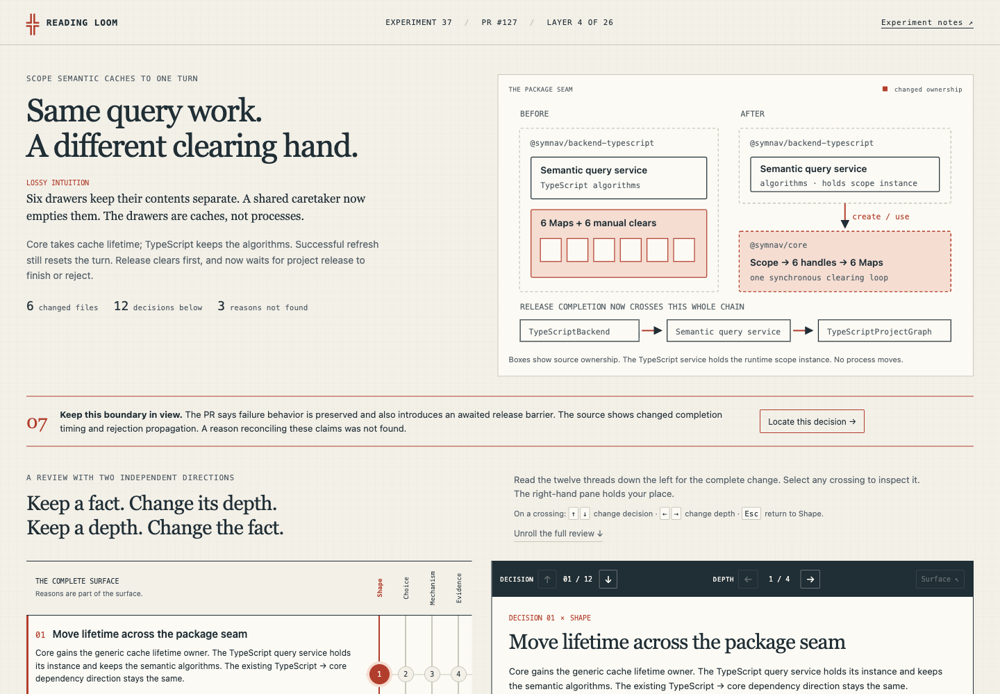 |
Approximately 25 minutes, including source reading, implementation, browser inspection, focused test execution, and documentation. No human comprehension test was performed. | The vertically rotated depth names are slow to scan. Repeating the entire selected summary and reason in the pane preserves context but consumes substantial space. On a phone the loom becomes an inspector above a list, and much of its spatial benefit disappears. Twelve complete surface threads may be too much even for this six-file change. | README# be-weird-b ## Entry point Open [index.html](index.html) directly, or run: ```sh open ~/projects/rich-review-v2/experiments/37-be-weird-b/index.html ``` No server, installation, network connection, or worktree is needed to read it. JavaScript must be enabled. The evidence is embedded locally. The page is called **The reading loom**. Select a crossing between a decision and a depth. Use the independent decision/depth arrow controls, or use arrow keys while a crossing has focus. **Surface** returns to the same decision’s top layer; **Find this thread** locates its row. Browser Back and URL fragments restore both coordinates. **Unroll the full review** provides linear reading and printing, then returns to the same crossing. ## Kind page ## Subjects `pr-127` — Scope semantic caches to one turn, layer 4 of the 26-PR daemon architecture refactor. No additional PRs. ## Declared choices - Role framing: Learner examining ownership and caller-visible boundaries. - Box lenses: Static structure (packages and modules) + lifecycle (cache turns, reusable handles, pending release). The diagrams distinguish the core class’s source location from the TypeScript service that holds its instance. - Opening style: A briefly marked, lossy drawer metaphor beside a before/after package diagram. The changed release-completion boundary appears before the navigation begins. - Shape: One complete surface containing twelve decisions and their reasons; four depths repeat those facts with more fidelity: Shape, Choice, Mechanism, Evidence. - Navigation: **Orthogonal addressing, presented as a reading loom.** Its address is `(decision, depth)`. Moving along one axis preserves the other. From 06 × Mechanism, moving down then right or right then down reaches 07 × Evidence. This fixed coordinate system is the experiment’s addition to section 5: navigation is controlled by two independent operations, with neither arbitrary related-node links nor a parent/child route. There is no semantic zoom. The ordinary unroll is a fallback, not the principal navigation. - Trust posture: Read-only explanation with conservative rationale attribution and comparison of stated intent to shipped boundaries. Nine reasons are marked stated; three specific reasons were not found. No verdict, scoring, comments, or response storage. - Persona: A teammate who knows symnav but not its semantic-cache implementation. - Representations used: Package and object-ownership diagrams, lifecycle-order diagrams, before/after comparisons, key/value and test-inventory tables, numbered mechanism steps, exact source excerpts with revision and line numbers. Diagrams of time-like order are marked schematic; there is no running simulation. - Importance rule: Ownership first, then preservation contracts and lifecycle boundaries, then API and test choices. The caller-visible release timing/rejection change is additionally pulled above the loom. Test changes receive a full thread with the same access to depth as architectural changes. - Inputs used (beyond bundle): Read-only base/head source at `a1e325a5ff979bdfa25babc5554621c8c0f20497` and `64919bcbcf7fcc8202779b78c5f069b24662bb18`; head contributor guidance and architecture spec; focused execution of the two changed test suites. [research-notes.md](research-notes.md) records the extraction, rationale search boundary, and surface-to-evidence mapping. The overview bundles and the other three subject bundles were not used. - Tech: Plain HTML, CSS, JavaScript, inline SVG, system fonts. A Python script captures and verifies source snapshots; isolated Chromium/Playwright was used for browser checks. Built with Codex; no subagents were used. - Built on earlier experiment(s): none. Earlier experiment folders were intentionally left unread. ## What I tried I considered a zipper/folding metaphor before implementation and discarded it because the navigation reduced to an expanding hierarchy. The loom keeps its two coordinates independent and lets a reader compare different decisions at the same depth. No implementation was abandoned halfway. The initial phone layout could enter evidence but required scrolling back to find the surface thread. I added a direct return to the selected row. I also added the unrolled view so the unfamiliar navigation does not become a prerequisite for reading every layer. All 48 crossings were exercised, including preservation of the selected surface contract, keyboard movement, direct fragments, history, and unroll/return. Desktop at 1440px and mobile at 390px had no horizontal page overflow or browser errors; SVG text stayed inside its view boxes. [UI check record](evidence/ui-checks.json), [browser check source](browser-check.js), and [screenshots](screenshots/02-loom.png) are included. Source capture was checked against the actual commits using [capture-evidence.py](capture-evidence.py). The five original service tests and all their helpers remain identical; six service tests and four core tests were added. The focused head run passed all 15 tests across those two files ([raw output](evidence/focused-test-run.txt)). This does not establish end-to-end parity or a correctness verdict. Both symnav worktrees remained clean for tracked files. ## What I would drop The vertically rotated depth names are slow to scan. Repeating the entire selected summary and reason in the pane preserves context but consumes substantial space. On a phone the loom becomes an inspector above a list, and much of its spatial benefit disappears. Twelve complete surface threads may be too much even for this six-file change. ## What I would do next Watch a reader compare release clearing with release completion while holding Mechanism or Evidence fixed. Compare that experience with the same content in ordinary tabs; test whether preserving depth actually helps them keep the distinction in mind. ## Time spent Approximately 25 minutes, including source reading, implementation, browser inspection, focused test execution, and documentation. No human comprehension test was performed. |
| 36 | be-weird-a attempt 1: claude-opus → attempt 2: claude-opus → attempt 3: codex |
page | pr-127 only: **Scope semantic caches to one turn**. | Role framing: Reader of measurements, examining which observations still refer to the same thing. · Box lenses: Static package/module ownership and the lifetime of stored values. The service → core scope ownership move is shown separately from the backend → project release completion boundary. · Opening style: Picture first, with a definition of each pixel and a bounded-fixture caveat. · Shape: One complete stopping layer across sections 01–03: contact sheet, ownership/release picture, and all twelve decision cards. Per-decision mechanism and source evidence sit below it. The opening sentence alone is not claimed to be the complete layer. · Navigation: Linear scrolling; selectable store/interface views; a pixel can compare any pair of observations. Cards and boxes jump to numbered disclosures, each with a return link. Sources open in place and close with Escape. · Trust posture: Measured behavior and recorded reasons kept explicit. Unexplained API/structure choices receive the same card treatment as architectural choices. The artifact teaches without a correctness verdict. · Persona: A teammate who knows symnav but has not worked in its semantic cache implementation. · Representations used: **Pairwise identity contact sheet**, invented for this brief outside section 5’s listed representations. Each pixel is an equality relation between two observations, rather than a node, request, code line, duration or animation frame. Supporting representations are package boxes, a release completion readout, compact decision cards and frozen source excerpts. · Importance rule: Lifetime and completion boundaries first, followed by every associated public API, exception, projection, test and rationale decision. No importance score. · Inputs used (beyond bundle): Actual source and compiled modules from the supplied pr-127 base/head worktrees; contributor guide; daemon architecture spec; core ProjectGraph and concrete TypeScript project cleanup; focused existing test runs; an in-memory TypeScript fixture; controlled failure/release probes; isolated Playwright browser checks. From the bundle, used pr.json (body and all six commits), diff.patch, files.txt and repo-rules.md. Did not use the precomputed overviews or other subjects’ bundles. · Tech: Plain HTML, CSS, SVG and JavaScript; a Node `.mjs` capture script importing existing built worktree modules. No frontend dependencies or external assets. Browser checks used the available Playwright tool. · Built on earlier experiment(s): none. Earlier experiments were left unread; no content or implementation was reused. | 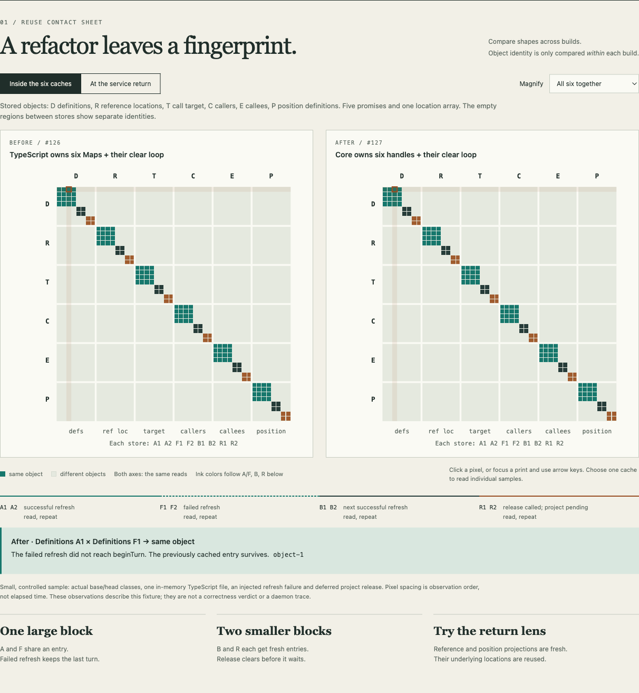 |
Approximately 35 minutes of active work, including source inspection, measurement, implementation and browser checks. Harness: Codex. | Some of the empty area between stores in the all-six view. It makes isolation visible, but consumes a lot of space on a phone; a single-store print earns its space more consistently. The large opening title could also shrink. | README# be-weird-a ## Entry point Open [index.html](index.html), or run: ```sh open ~/projects/rich-review-v2/experiments/36-be-weird-a/index.html ``` It works directly from the folder. No server, install, network connection or live worktree is required to read it. JavaScript must be enabled. ## Kind page The page is accompanied by a reproducible measurement script and [representation method](METHOD.md). ## Subjects pr-127 only: **Scope semantic caches to one turn**. Base: `a1e325a5ff979bdfa25babc5554621c8c0f20497` (#126). Head: `64919bcbcf7fcc8202779b78c5f069b24662bb18` (#127). ## Declared choices - Role framing: Reader of measurements, examining which observations still refer to the same thing. - Box lenses: Static package/module ownership and the lifetime of stored values. The service → core scope ownership move is shown separately from the backend → project release completion boundary. - Opening style: Picture first, with a definition of each pixel and a bounded-fixture caveat. - Shape: One complete stopping layer across sections 01–03: contact sheet, ownership/release picture, and all twelve decision cards. Per-decision mechanism and source evidence sit below it. The opening sentence alone is not claimed to be the complete layer. - Navigation: Linear scrolling; selectable store/interface views; a pixel can compare any pair of observations. Cards and boxes jump to numbered disclosures, each with a return link. Sources open in place and close with Escape. - Trust posture: Measured behavior and recorded reasons kept explicit. Unexplained API/structure choices receive the same card treatment as architectural choices. The artifact teaches without a correctness verdict. - Persona: A teammate who knows symnav but has not worked in its semantic cache implementation. - Representations used: **Pairwise identity contact sheet**, invented for this brief outside section 5’s listed representations. Each pixel is an equality relation between two observations, rather than a node, request, code line, duration or animation frame. Supporting representations are package boxes, a release completion readout, compact decision cards and frozen source excerpts. - Importance rule: Lifetime and completion boundaries first, followed by every associated public API, exception, projection, test and rationale decision. No importance score. - Inputs used (beyond bundle): Actual source and compiled modules from the supplied pr-127 base/head worktrees; contributor guide; daemon architecture spec; core ProjectGraph and concrete TypeScript project cleanup; focused existing test runs; an in-memory TypeScript fixture; controlled failure/release probes; isolated Playwright browser checks. From the bundle, used pr.json (body and all six commits), diff.patch, files.txt and repo-rules.md. Did not use the precomputed overviews or other subjects’ bundles. - Tech: Plain HTML, CSS, SVG and JavaScript; a Node `.mjs` capture script importing existing built worktree modules. No frontend dependencies or external assets. Browser checks used the available Playwright tool. - Built on earlier experiment(s): none. Earlier experiments were left unread; no content or implementation was reused. ## What I tried I considered a literal “cache loom” and a replay before building, but both would fit existing menu entries. I instead turned an observation sequence into a square relation: ink means exact object reuse. Real base/head probes produce all six stores’ prints. The stored-value plots match. Switching to public service returns removes off-diagonal ink for reference promises and position node arrays even though their locations remain cached. Keeping both lenses makes that distinction visible. The matrix alone cannot carry the release-completion change: both versions clear the old entries, so the print remains the same. I kept the representation and added a separate completion readout. This limit is documented in METHOD.md. The deferred graph is explicitly injected; concrete TypeScript cleanup is synchronous here. Visual checks caught crowded all-store labels and, with every detail open at 320 pixels, unbreakable code in tables. Both were corrected. No approach was abandoned after implementation. ## What I would drop Some of the empty area between stores in the all-six view. It makes isolation visible, but consumes a lot of space on a phone; a single-store print earns its space more consistently. The large opening title could also shrink. ## What I would do next Try this relation on a change that deliberately alters sharing between cache families, and see whether a reader can predict the identity boundaries from the print without consulting source. ## Time spent Approximately 35 minutes of active work, including source inspection, measurement, implementation and browser checks. Harness: Codex. ## Evidence and limits The six-file diff maps to visible decisions in [decision-coverage.md](evidence/decision-coverage.md). Reasons are marked stated only when supported by the PR, plan, commits or contributor guide. Composition, the precise scope API, the narrowed files argument, the historical reprojection rationale and the release/parity reconciliation have no specific explanation in the inspected inputs. No implementing conversation was supplied. The measurements cover one in-memory source file and controlled boundary conditions. Identity comparisons are within each build; matching IDs or colors across builds do not mean shared objects. The service-return lens does not measure backend wrapper promises. Release observations use an injected deferred/rejecting graph and are not daemon traces or claims about changed end-to-end output. Both worktrees built. Existing focused tests passed: **15 head tests and 5 base tests**. Browser checks exercised the two lenses, keyboard selection, details, source dialogs, anchors and responsive layouts with no remaining overflow or page errors. Full logs and the bounded validation scope are in [verification.md](evidence/verification.md). No symnav source or branch was changed. To regenerate observations from the supplied, built worktrees: ```sh cd ~/projects/rich-review-v2/experiments/36-be-weird-a node scripts/capture.mjs ``` This updates `data.js` and the frozen observation/source records under `evidence/`. It does not rerun the existing tests or browser checks. The folder includes the received [brief](brief.md), [raw observations](evidence/observations.json), [frozen sources with hashes](evidence/sources.json), the [capture script](scripts/capture.mjs), and [screenshots](screenshots/01-contact-sheet.png). The page stores no comments, verdicts or review state. |
| 35 | future-self attempt 1: codex |
page | pr-148 — Own daemon mechanisms behind DaemonClient. | Role framing: The author recovering decisions before making another change. Preserve recorded reasons and the places where a reason could not be recovered. · Box lenses: Static package/module ownership and runtime process/thread topology. The map distinguishes the newly staged package graph from the CLI compatibility graph that still carries the shipped invocation. · Opening style: A before/after ownership picture, introduced by “The caller hadn't moved yet.” The intended intuition is that an intermediate extraction state can be remembered incorrectly as the finished migration. · Shape: A decision notebook with four chapters and 20 expandable records. Each visible record face carries its choice and reason state; descent adds a mechanism table, exact source wording, and witnesses for the same facts. · Navigation: Linear reading; return cues for likely future edits; clickable diagram boxes; native expandable records; source links with line anchors and a return to the originating record; a searchable index of all 153 changed paths. · Trust posture: Reasons are quoted from the PR or specs. Eleven records have a stated source reason; nine identify a specific missing reason. A general extraction requirement is not treated as an explanation for every changed test observation. No correctness verdict, approval, or comment collection. · Persona: The original author, six months later. The “when you return” cues are marked as editorial prompts, not reconstructed author statements. · Representations used: Ownership diptych; runtime chain; five-part ordering strip; decision records; preserved quotations; mechanism and before/after tables; illustrative routing and idle-lifetime models; immutable source witnesses and a complete path index. · Importance rule: Put the decisions most likely to be misremembered first: staging versus consumer adoption, order and replay consequences, and preserved versus deferred behavior. Give removed or narrowed test evidence and unexplained setup changes their own records. · Inputs used (beyond bundle): Pinned Git source and test files from both supplied revisions; the unchanged CLI dispatcher to establish the active consumer path; the CLI output codec to identify the package-local copy; the head daemon functional, architecture, and follow-up specs; commit/path history; worktree contributor and meta-test guides. From the bundle, used `pr.json`, the full patch, `files.txt`, and repository rules. The overview files were inspected briefly but contain headings without usable symbol output, so they did not support the explanation. No implementing-author transcript was supplied or inferred. · Tech: Static HTML, CSS, and vanilla JavaScript. Python standard-library build script generates the page and line-addressed evidence. All reading interactions are local and transient; there is no storage or network code. · Built on earlier experiment(s): none. Earlier experiment contents were ignored. No page, code, or analysis was reused from them. | 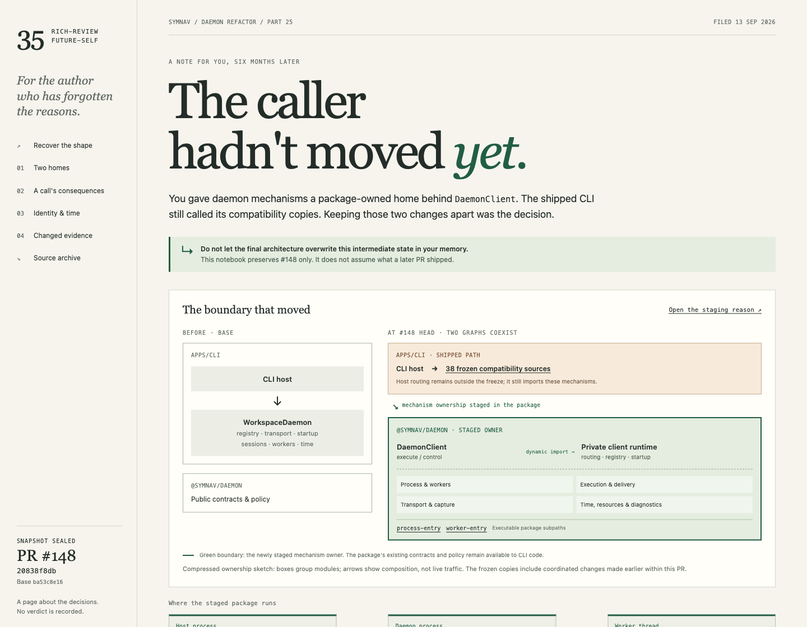 |
About 30 minutes, using Codex. Most effort went into the base/head and test-evidence audit, then offline page construction and browser checks. | The five-part ordering strip contributes less than the return cues and the two ownership pictures. It is the first candidate to remove. The complete source archive is useful for future retrieval but heavy; the full lockfile could become a plain download without losing explanatory value. | README# future-self ## Entry point Open [index.html](index.html), or on this Mac: ```sh open /Users/moyaseen/projects/rich-review-v2/experiments/35-future-self/index.html ``` The page and its 239 pinned source pages work directly from disk. No server, installation, network, or original worktree is needed to read them. Start with the ownership map, choose a reason for returning, or read the 20 decision records in order. ## Kind page ## Subjects pr-148 — Own daemon mechanisms behind DaemonClient. Base: `ba53c8e1662fd86d198b95321c90d9c9bef10184`. Head: `20838f8dbf413e04767543eb2380d0d114da6c60`. No additional PR was used as a subject; later consumer adoption is not assumed. ## Declared choices - Role framing: The author recovering decisions before making another change. Preserve recorded reasons and the places where a reason could not be recovered. - Box lenses: Static package/module ownership and runtime process/thread topology. The map distinguishes the newly staged package graph from the CLI compatibility graph that still carries the shipped invocation. - Opening style: A before/after ownership picture, introduced by “The caller hadn't moved yet.” The intended intuition is that an intermediate extraction state can be remembered incorrectly as the finished migration. - Shape: A decision notebook with four chapters and 20 expandable records. Each visible record face carries its choice and reason state; descent adds a mechanism table, exact source wording, and witnesses for the same facts. - Navigation: Linear reading; return cues for likely future edits; clickable diagram boxes; native expandable records; source links with line anchors and a return to the originating record; a searchable index of all 153 changed paths. - Trust posture: Reasons are quoted from the PR or specs. Eleven records have a stated source reason; nine identify a specific missing reason. A general extraction requirement is not treated as an explanation for every changed test observation. No correctness verdict, approval, or comment collection. - Persona: The original author, six months later. The “when you return” cues are marked as editorial prompts, not reconstructed author statements. - Representations used: Ownership diptych; runtime chain; five-part ordering strip; decision records; preserved quotations; mechanism and before/after tables; illustrative routing and idle-lifetime models; immutable source witnesses and a complete path index. - Importance rule: Put the decisions most likely to be misremembered first: staging versus consumer adoption, order and replay consequences, and preserved versus deferred behavior. Give removed or narrowed test evidence and unexplained setup changes their own records. - Inputs used (beyond bundle): Pinned Git source and test files from both supplied revisions; the unchanged CLI dispatcher to establish the active consumer path; the CLI output codec to identify the package-local copy; the head daemon functional, architecture, and follow-up specs; commit/path history; worktree contributor and meta-test guides. From the bundle, used `pr.json`, the full patch, `files.txt`, and repository rules. The overview files were inspected briefly but contain headings without usable symbol output, so they did not support the explanation. No implementing-author transcript was supplied or inferred. - Tech: Static HTML, CSS, and vanilla JavaScript. Python standard-library build script generates the page and line-addressed evidence. All reading interactions are local and transient; there is no storage or network code. - Built on earlier experiment(s): none. Earlier experiment contents were ignored. No page, code, or analysis was reused from them. ## What I tried Made the durable unit a choice plus its recovered reason, with a cue for the next time the author might reconsider it. The opening preserves the staging state instead of presenting the eventual architecture as already active. The source audit added separate records for the temporary test export removal, deleted CLI entry tests, narrower worker/CLI integration evidence, Windows cleanup expectations, and serial test setup. An initial all-pairs textual similarity scan of mechanism copies was too slow and was stopped. I switched to Git's rename mappings and direct comparisons of the corresponding CLI and package files. Those comparisons also exposed the package-local spool codec and the additional client composition seams. No page approach was abandoned midway. The two interactive models are explicitly illustrative. The routing model makes skipped observations visible; the idle model separates the acceptance deadline preserved in this PR from the completion-based reset recorded as a follow-up. Neither executes symnav. ## What I would drop The five-part ordering strip contributes less than the return cues and the two ownership pictures. It is the first candidate to remove. The complete source archive is useful for future retrieval but heavy; the full lockfile could become a plain download without losing explanatory value. ## What I would do next Use an actual implementing-author transcript, if available, to recover the missing reasons without changing the observed decisions. Give a returning author one concrete edit task and see whether the notebook gets them to the relevant reason and source. ## Time spent About 30 minutes, using Codex. Most effort went into the base/head and test-evidence audit, then offline page construction and browser checks. ## Verification and limits See [verification.md](verification.md). Static checks covered the 240 generated HTML pages, source anchors, complete changed-file mapping, and byte equality of the archived patch with the pinned Git diff. Chromium checks covered desktop/mobile layout, keyboard expansion, source-and-back navigation, both illustrative models, and file filtering. No page JavaScript errors or horizontal document overflow were observed at the checked sizes. The symnav tests are inspected evidence, not a reported test run. Neither symnav worktree's source was modified. “Unexplained” is scoped to the inspected PR body, empty commit bodies, and plans; it is not a claim that the author never had a reason. The inventory accounts for changed paths, not an automated proof of exhaustive intent. To rebuild while the original input/worktree layout exists, run `python3 build.py` here. To check the finished artifact and its pinned patch, run `python3 verify.py`. Editorial content lives in [content.py](content.py); layout in [page.html](page.html), [style.css](style.css), and [app.js](app.js). |
| 34 | inverted-for-experts attempt 1: claude-opus → attempt 2: claude-opus → attempt 3: codex |
page | pr-131 — Route daemon thresholds through centralized policy. | Role framing: An expert inspecting concrete evidence and deciding which mechanisms need explanation. · Box lenses: Threshold ownership, composition, runtime consumers, process/worker boundaries, and the production/test boundary. Mechanisms still reside in `apps/cli`; the existing policy belongs to `packages/daemon`. · Opening style: Two checked-in timeout tests with reversed policy inputs. A small, explicitly simplified ownership sketch supplies early intuition. · Shape: Evidence table with 23 visible decisions in six groups. Every decision has a mechanism view, a stated or unexplained reason, exact excerpts, and access to full source. The complete decision surface includes test changes and unrecorded choices. · Navigation: Linear scrolling; group anchors; search; an unexplained-only filter; links into any explanation; previous/next choice; browser history; line-level source links; Escape/return to the evidence row. The owner map, policy record, and file inventory offer alternate entry points. · Trust posture: Reasons require a source. Five decisions have no specific reason in the inspected records: completion-error provenance, small output fixture translations, transport fixture normalization/directory creation, the retained inert test memory input, and deleted resource-policy cases. · Persona: A maintainer who recognizes code and tests quickly but wants help reconstructing ownership and scope. · Representations used: Compact value strips; verbatim numbered source; base/head diffs; boundary diagrams; a timeout scrubber; a six-step recovery fixture; retry allocation and stop-budget illustrations; a policy table; file-to-decision mapping. · Importance rule: Lead with differences that depend on purpose or scope, then follow bytes, resources, lifecycle, diagnostics, and test seams. Deleted or adjusted tests receive visible entries alongside production choices. · Inputs used (beyond bundle): Both read-only worktrees; exact source and tests; `daemon-policy.ts`, `policy-testing.ts`, `daemon-policy.test.ts`, and `plans/005/daemon-policy.md`; architecture and follow-up specs; local contributor instructions; pinned git identities and scoped plan history. Bundle materials used: `pr.json`, `diff.patch`, `files.txt`, and relevant `repo-rules.md` sections. Philosophy and required playbook sections were read first. · Tech: Static HTML/CSS/JavaScript. Python standard library generates the page and embeds the source archive. Native browser dialogs; no third-party frontend dependencies, remote assets, response collection, or persistent review state. · Built on earlier experiment(s): none. Earlier experiments were ignored. · Assigned angle: evidence first, abstractions on demand. | 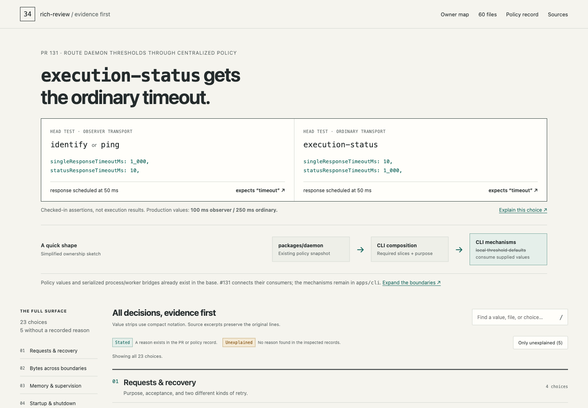 |
About 32 minutes, including source inspection, implementation, and browser verification. | Some diagrams for straightforward signal, acknowledgement, and diagnostic wiring repeat their value strips. They satisfy the same interaction pattern but earn less space than the timeout, recovery, memory, and ownership views. I would make those simple explanations smaller after observing actual use. | README# inverted-for-experts ## Entry point Open [index.html](index.html), or run: ```sh open /Users/moyaseen/projects/rich-review-v2/experiments/34-inverted-for-experts/index.html ``` The page works offline from the folder. No server, installation, or build is required. A modern browser is needed for the explanation dialogs; Chromium was tested. All 23 decisions remain readable with JavaScript disabled. ## Kind page ## Subjects pr-131 — Route daemon thresholds through centralized policy. Base `b3a6c4fa5dcf96223765aa147a9e094cd4a51b0e` → head `b100221db48754656328391b878299c5a0bab443`. ## Declared choices - Role framing: An expert inspecting concrete evidence and deciding which mechanisms need explanation. - Box lenses: Threshold ownership, composition, runtime consumers, process/worker boundaries, and the production/test boundary. Mechanisms still reside in `apps/cli`; the existing policy belongs to `packages/daemon`. - Opening style: Two checked-in timeout tests with reversed policy inputs. A small, explicitly simplified ownership sketch supplies early intuition. - Shape: Evidence table with 23 visible decisions in six groups. Every decision has a mechanism view, a stated or unexplained reason, exact excerpts, and access to full source. The complete decision surface includes test changes and unrecorded choices. - Navigation: Linear scrolling; group anchors; search; an unexplained-only filter; links into any explanation; previous/next choice; browser history; line-level source links; Escape/return to the evidence row. The owner map, policy record, and file inventory offer alternate entry points. - Trust posture: Reasons require a source. Five decisions have no specific reason in the inspected records: completion-error provenance, small output fixture translations, transport fixture normalization/directory creation, the retained inert test memory input, and deleted resource-policy cases. - Persona: A maintainer who recognizes code and tests quickly but wants help reconstructing ownership and scope. - Representations used: Compact value strips; verbatim numbered source; base/head diffs; boundary diagrams; a timeout scrubber; a six-step recovery fixture; retry allocation and stop-budget illustrations; a policy table; file-to-decision mapping. - Importance rule: Lead with differences that depend on purpose or scope, then follow bytes, resources, lifecycle, diagnostics, and test seams. Deleted or adjusted tests receive visible entries alongside production choices. - Inputs used (beyond bundle): Both read-only worktrees; exact source and tests; `daemon-policy.ts`, `policy-testing.ts`, `daemon-policy.test.ts`, and `plans/005/daemon-policy.md`; architecture and follow-up specs; local contributor instructions; pinned git identities and scoped plan history. Bundle materials used: `pr.json`, `diff.patch`, `files.txt`, and relevant `repo-rules.md` sections. Philosophy and required playbook sections were read first. - Tech: Static HTML/CSS/JavaScript. Python standard library generates the page and embeds the source archive. Native browser dialogs; no third-party frontend dependencies, remote assets, response collection, or persistent review state. - Built on earlier experiment(s): none. Earlier experiments were ignored. - Assigned angle: evidence first, abstractions on demand. ## What I tried I inverted the representation while retaining a complete decision layer. Readers encounter the supplied values and changed evidence before opening an explanation. The 23 entries account for all 60 changed paths, including adapter behavior and removed tests that the four decisions in the PR body do not fully describe. I considered a raw-diff opening during planning. It would require readers to discover the important decisions themselves, so I used a compact evidence table. There was no discarded implemented prototype. The recovery illustration is deliberately bounded to the added fixture: two executes, one fetch, empty output. Source inspection showed that a failed fetch settles its execution attempt, so an arbitrary multi-resume simulator would imply more than this evidence establishes. The error-provenance diagram uses symbolic errors and explicitly identifies itself as a control-flow reading. The page includes 122 source snapshots and 103 resolved excerpts/reasons. The policy implementation, factory, tests, and record are identified as inherited, byte-identical context. Browser checks covered all explanation and source views, navigation, filters, illustrated controls, and desktop/mobile rendering. Two display issues were fixed. Full details and limitations are in [verification.md](verification.md). Symnav test assertions were read; its test suites were not run. Both worktrees remained clean. Screenshots: [opening](screenshots/01-evidence-first.png), [recovery explanation](screenshots/02-recovery-explanation.png), [owner map](screenshots/03-owner-map.png), [mobile](screenshots/04-mobile.png). To regenerate after editing `content.py`, `page.html`, or the reference specifications, run `python3 build.py` from this folder. It resolves every excerpt, checks all file mappings and diff totals, and verifies the four inherited policy files. The generated page itself does not need the worktrees. ## What I would drop Some diagrams for straightforward signal, acknowledgement, and diagnostic wiring repeat their value strips. They satisfy the same interaction pattern but earn less space than the timeout, recovery, memory, and ownership views. I would make those simple explanations smaller after observing actual use. The source archive is useful for expert inspection, but the default two excerpts beneath every mechanism make the drawer long. One selected excerpt plus the existing source tab may be enough. ## What I would do next Ask a maintainer to explain why an execution-status request gets 250 ms and what resets the fetch-resume allowance, then observe whether the evidence-first opening shortens that task. Check whether the five unexplained entries make the changed test assumptions easier to notice. ## Time spent About 32 minutes, including source inspection, implementation, and browser verification. |
| 33 | pair-one-variable attempt 1: codex |
pair | pr-127 only: “Scope semantic caches to one turn,” comparing base `a1e325a5ff979bdfa25babc5554621c8c0f20497` with head `64919bcbcf7fcc8202779b78c5f069b24662bb18`. | Role framing: Learner, with a complete decision map before the mechanism detail. · Box lenses: Static package structure and lifecycle; runtime instance ownership is explicit within those views. Core supplies the implementation, while each service constructs its own scope. · Opening style: A uses a six-tray workbench metaphor. B starts with an illustrative release that finishes before delayed cleanup. Both openings contain 129 whitespace-delimited words of visible text, counting the common “One way in” label. · Shape: The same pyramid in both pages: opening → complete ownership/lifetime map and ten decisions → mechanisms → numbered source excerpts. Important exceptions and evidence limits appear in the decision map before descent. · Navigation: Continuous reading, high-level links into each mechanism, return links to decisions, native source disclosures, and stable source-line anchors. · Trust posture: Source-checked explanation. Reasons are marked stated or unexplained. Describing a public API change is distinguished from giving a reason for it. Test additions and preserved assertions have their own decision. No correctness verdict or response collection. · Persona: A teammate who knows the repository but not the TypeScript semantic-cache corner. · Representations used: Three-box openings; before/after package diagram; instance ownership chain; six-store table; refresh sequence; illustrative release trace with both versions on the same events; lookup branches; API and test-boundary tables; captured source excerpts. · Importance rule: Establish ownership and cache contracts, then expose the timing/error boundary and API choices whose separate rationale is missing. Keep test changes and limitations visible at the top. · Inputs used (beyond bundle): Both worktrees’ changed files; unchanged core project-graph release and concrete TypeScript project cleanup; the architecture spec; touched-file git history; and a focused run of the two relevant head test suites. Sources are copied into `evidence/` with hashes and exact revision labels. From the bundle I used `pr.json`, `diff.patch`, `files.txt`, `stack.md`, and relevant portions of `repo-rules.md`. `overview-after.txt` contained file headings without symbol output, so it supplied no evidence. · Tech: Static HTML, shared CSS and vanilla JavaScript; Python standard library for generation and integrity checks; Playwright for browser verification. No external assets or fonts. · Built on earlier experiment(s): none. Earlier experiments’ content, code, and assets were neither read nor reused. · Assigned angle: Two complete pages identical except their opening style. The body, source excerpts, layout, and interactions come from one shared template. · Harness: Codex. No additional agents were spawned. | 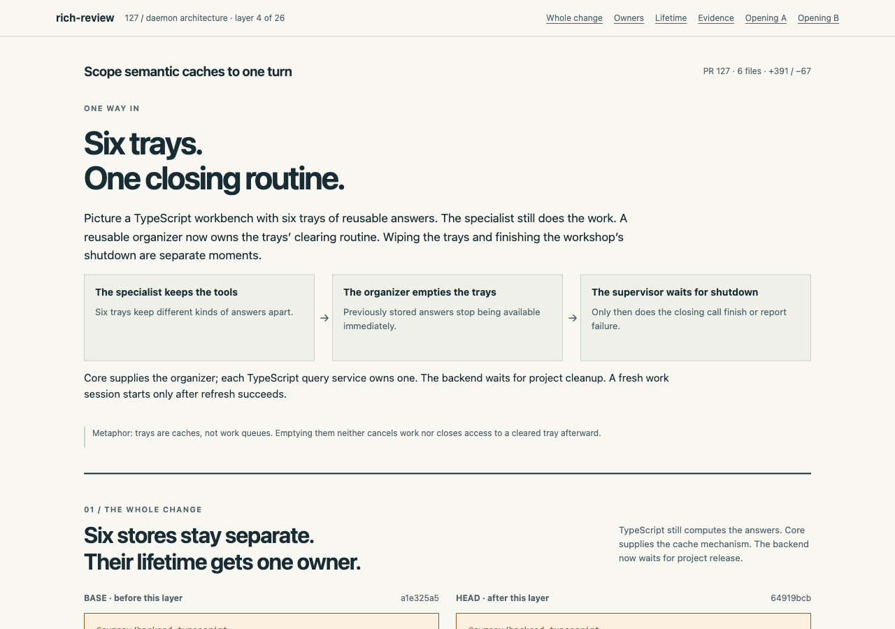 |
About 30 minutes of active work, including source reading, implementation, browser checks, and documentation. | The common release table and the interactive trace explain much of the same boundary. If readers can explain it from one, I would remove the other from both conditions. The complete ten-decision map also occupies several screens; its completeness is useful here, but its reading cost deserves a human check. | README# pair-one-variable ## Entry point Open [index.html](index.html) for the **metaphor** and [failure.html](failure.html) for the **motivating failure**. One command opens both on this Mac: ```sh open ~/projects/rich-review-v2/experiments/33-pair-one-variable/index.html ~/projects/rich-review-v2/experiments/33-pair-one-variable/failure.html ``` No server, installation, network, or build is needed. Both pages contain the complete explanation. Their navigation calls the versions “Opening A” and “Opening B.” JavaScript adds the optional release trace; the rest also works without it. ## Kind pair ## Subjects pr-127 only: “Scope semantic caches to one turn,” comparing base `a1e325a5ff979bdfa25babc5554621c8c0f20497` with head `64919bcbcf7fcc8202779b78c5f069b24662bb18`. ## Declared choices - Role framing: Learner, with a complete decision map before the mechanism detail. - Box lenses: Static package structure and lifecycle; runtime instance ownership is explicit within those views. Core supplies the implementation, while each service constructs its own scope. - Opening style: A uses a six-tray workbench metaphor. B starts with an illustrative release that finishes before delayed cleanup. Both openings contain 129 whitespace-delimited words of visible text, counting the common “One way in” label. - Shape: The same pyramid in both pages: opening → complete ownership/lifetime map and ten decisions → mechanisms → numbered source excerpts. Important exceptions and evidence limits appear in the decision map before descent. - Navigation: Continuous reading, high-level links into each mechanism, return links to decisions, native source disclosures, and stable source-line anchors. - Trust posture: Source-checked explanation. Reasons are marked stated or unexplained. Describing a public API change is distinguished from giving a reason for it. Test additions and preserved assertions have their own decision. No correctness verdict or response collection. - Persona: A teammate who knows the repository but not the TypeScript semantic-cache corner. - Representations used: Three-box openings; before/after package diagram; instance ownership chain; six-store table; refresh sequence; illustrative release trace with both versions on the same events; lookup branches; API and test-boundary tables; captured source excerpts. - Importance rule: Establish ownership and cache contracts, then expose the timing/error boundary and API choices whose separate rationale is missing. Keep test changes and limitations visible at the top. - Inputs used (beyond bundle): Both worktrees’ changed files; unchanged core project-graph release and concrete TypeScript project cleanup; the architecture spec; touched-file git history; and a focused run of the two relevant head test suites. Sources are copied into `evidence/` with hashes and exact revision labels. From the bundle I used `pr.json`, `diff.patch`, `files.txt`, `stack.md`, and relevant portions of `repo-rules.md`. `overview-after.txt` contained file headings without symbol output, so it supplied no evidence. - Tech: Static HTML, shared CSS and vanilla JavaScript; Python standard library for generation and integrity checks; Playwright for browser verification. No external assets or fonts. - Built on earlier experiment(s): none. Earlier experiments’ content, code, and assets were neither read nor reused. - Assigned angle: Two complete pages identical except their opening style. The body, source excerpts, layout, and interactions come from one shared template. - Harness: Codex. No additional agents were spawned. ## What I tried I first read the PR’s source delta and rationale, then built one common explanation. The decision map separates the ownership move, preserved cache behavior, and expanded release boundary. Three choices have no separate rationale in the inspected material: the caller-visible release contract change under the unchanged-behavior spec, the exact public API/narrower file-list input, and reusable handles without a closed or disposed state. I ruled out a stale-cache motivating story during source reading: the base already clears caches synchronously before starting project cleanup. The failure opening instead uses the pending/rejecting graph from the new test. Both the opening and the shared top state its limits; the concrete TypeScript project cleanup is synchronous. The trace is explicitly illustrative, including its successful-delay branch, which is not a new PR test. I generated both pages from `common.html` and one `opening_markup` function fed by `openings.json`. I matched word counts and reserved the same layout space, then fixed narrow-screen text overflow in both conditions together. The browser harness could not dynamically import the local check module; I executed its check function as an injected script and saved the results. No explanation approach was abandoned after implementation. The result is a controlled pair, not evidence that either opening teaches better. [pair-contract.md](pair-contract.md) records the control and its limits. ## What I would drop The common release table and the interactive trace explain much of the same boundary. If readers can explain it from one, I would remove the other from both conditions. The complete ten-decision map also occupies several screens; its completeness is useful here, but its reading cost deserves a human check. ## What I would do next Give each opening to a different unfamiliar reader and ask them to explain who owns the caches and when backend release finishes. Reverse the opening order with another pair of readers; do not treat one person reading both as an independent comparison. ## Time spent About 30 minutes of active work, including source reading, implementation, browser checks, and documentation. ## Verification - `python3 verify.py` checks byte equality outside the marked opening, matching opening element structure and word counts, local links and unique anchors, all 20 captured source hashes, and preservation of the five existing service-test bodies. The record is [pair-verification.json](pair-verification.json). - Browser checks covered both variants at 12 widths from 320 to 1280 pixels. The opening heights and the common body’s starting position match at every width; no opening text clips and no page overflows horizontally. The rendered common DOM also matches. All 20 variant/outcome/frame combinations, previous/next controls, keyboard scrubbing, decision returns, source-line disclosure, and opening links worked. No browser errors were recorded. Both variants were checked with JavaScript disabled. See [browser-verification.json](browser-verification.json) and [browser-check.mjs](browser-check.mjs). - The existing head suites were run with `pnpm exec vitest run packages/core/src/backend/turn-scoped-cache-scope.test.ts packages/backend-typescript/src/typescript-backend/typescript-semantic-query-service.test.ts --maxWorkers=2 --minWorkers=1`: **15 tests passed in 2 suites**. [test-run.txt](test-run.txt) contains the output. This was a focused run, not full CI. - Both symnav worktrees remained clean. No branch, source file, queue, shared index, or other experiment was modified by this work. ## Files `index.html` and `failure.html` are the deliverables. `common.html`, `openings.json`, `decisions.json`, `style.css`, and `review.js` are their sources. `build.py` rebuilds from the included source snapshots; `verify.py` checks the pair. `evidence/` contains the PR inputs and base/head source snapshots; `evidence-manifest.json` records their provenance. `screenshots/` contains both desktop openings, both mobile openings, the shared decision map, and the shared release trace. The supplied `brief.md` and harness log are retained. To rebuild and verify, from this folder: ```sh python3 build.py python3 verify.py ``` |
| 32 | kit attempt 1: claude-opus → attempt 2: claude-opus → attempt 3: codex |
kit | pr-127. Base #126 is used only for the before/after comparison. Other sample bundles were not used. | Role framing: Learner/textbook. The assigned angle is reusable explanation components; the demo presents decisions without collecting responses or judging correctness. · Box lenses: Static package/class ownership and lifecycle boundaries. The package diagram shows cache lifetime crossing into core; paired release sequences show completion moving to the end of project release. · Opening style: Before/after in one frame, preceded by the compact idea “Six caches get one lifetime owner.” The opening also names the awaited-release change. · Shape: Three-level pyramid: complete overview with ten decision cards, mechanisms for those same choices, then pinned source evidence. · Navigation: One continuous document with nonlinear exits from boxes and cards. Native anchors, exact return links, keyboard focus restoration, browser Back, and fallback backlinks without JavaScript. · Trust posture: Compare stated intent with the complete six-file patch. Distinguish the PR's requested release barrier from the broader spec's unchanged-failure promise. Surface files-only input and composed/reusable scope as unexplained choices. Audit test additions and retained assertions. · Persona: A teammate who knows Symnav but does not know the semantic-cache implementation. · Representations used: Nested SVG ownership boxes, directional edges, paired before/after panels, decision cards, control-flow sequences, cache family grid, behavior tables, API signatures, verbatim source excerpts with original line numbers. Simplified diagrams and illustrative sequences are marked where they appear. · Importance rule: Ownership first, then identity/failure/lifecycle contracts, public API choices, and test decisions. Every extracted choice stays visible in the overview; unexplained reasons receive an amber marker. · Inputs used (beyond bundle): Read-only PR 127 base/head sources and tests, both worktree contributor guides, TypeScript package exports, architecture spec, and relevant follow-ups spec passages. Compared captured files against their committed Git objects. Used bundle PR body, all six commit subjects/bodies, full patch, file statistics, stack position, and repository rules. Did not use generated overviews, runtime traces, live GitHub, or an implementing-agent transcript. · Tech: Python 3.10+ standard-library static generation; HTML, CSS, SVG, and a small classic JavaScript navigation enhancement. Reading requires only a browser. No dependencies or external assets. Codex harness, without delegated agents. · Built on earlier experiment(s): none. Earlier experiments were deliberately ignored. The pre-existing brief and harness logs in this folder were preserved. | 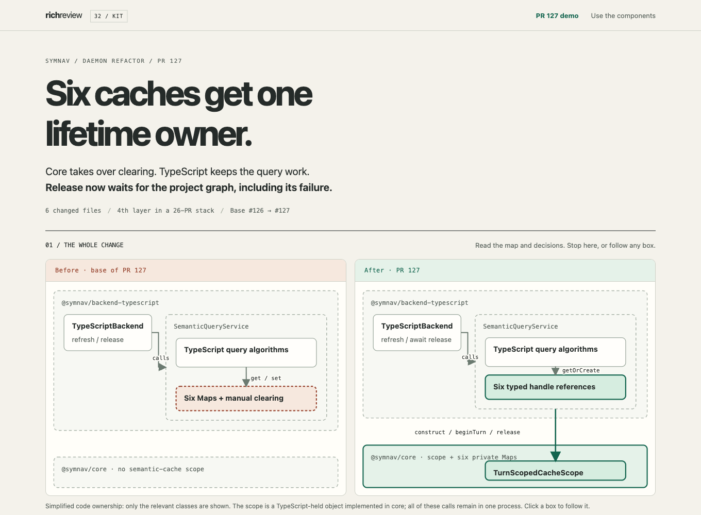 |
About 27 minutes in this Codex attempt, including source reading, implementation, browser checks, and documentation. | Repeated source excerpts make each decision self-contained but lengthen the evidence layer. I would consolidate repeated core-code excerpts once the return navigation for shared evidence is equally clear. The four-column component chooser is useful for kit authors; it belongs only in the guide, as it does here. | README# kit ## Entry point Open [index.html](index.html), or run: ```sh open ~/projects/rich-review-v2/experiments/32-kit/index.html ``` The reusable component guide is [kit.html](kit.html). No install, build, network, or running server is needed to read either page. [starter.html](starter.html) demonstrates a smaller composition of the same four components. ## Kind kit Four reusable Python components—`BoxDiagram`, `DecisionCard`, `BeforeAfter`, and `ExitLink`—with a complete static PR 127 demo, an authoring guide, and a runnable starter. ## Subjects pr-127. Base #126 is used only for the before/after comparison. Other sample bundles were not used. ## Declared choices - Role framing: Learner/textbook. The assigned angle is reusable explanation components; the demo presents decisions without collecting responses or judging correctness. - Box lenses: Static package/class ownership and lifecycle boundaries. The package diagram shows cache lifetime crossing into core; paired release sequences show completion moving to the end of project release. - Opening style: Before/after in one frame, preceded by the compact idea “Six caches get one lifetime owner.” The opening also names the awaited-release change. - Shape: Three-level pyramid: complete overview with ten decision cards, mechanisms for those same choices, then pinned source evidence. - Navigation: One continuous document with nonlinear exits from boxes and cards. Native anchors, exact return links, keyboard focus restoration, browser Back, and fallback backlinks without JavaScript. - Trust posture: Compare stated intent with the complete six-file patch. Distinguish the PR's requested release barrier from the broader spec's unchanged-failure promise. Surface files-only input and composed/reusable scope as unexplained choices. Audit test additions and retained assertions. - Persona: A teammate who knows Symnav but does not know the semantic-cache implementation. - Representations used: Nested SVG ownership boxes, directional edges, paired before/after panels, decision cards, control-flow sequences, cache family grid, behavior tables, API signatures, verbatim source excerpts with original line numbers. Simplified diagrams and illustrative sequences are marked where they appear. - Importance rule: Ownership first, then identity/failure/lifecycle contracts, public API choices, and test decisions. Every extracted choice stays visible in the overview; unexplained reasons receive an amber marker. - Inputs used (beyond bundle): Read-only PR 127 base/head sources and tests, both worktree contributor guides, TypeScript package exports, architecture spec, and relevant follow-ups spec passages. Compared captured files against their committed Git objects. Used bundle PR body, all six commit subjects/bodies, full patch, file statistics, stack position, and repository rules. Did not use generated overviews, runtime traces, live GitHub, or an implementing-agent transcript. - Tech: Python 3.10+ standard-library static generation; HTML, CSS, SVG, and a small classic JavaScript navigation enhancement. Reading requires only a browser. No dependencies or external assets. Codex harness, without delegated agents. - Built on earlier experiment(s): none. Earlier experiments were deliberately ignored. The pre-existing brief and harness logs in this folder were preserved. ## What I tried Built immutable component dataclasses first, then composed the entire demo from them. Added mandatory reason provenance for stated decisions and a structural parent/claim check for deeper layers. Captured source excerpts locally so the evidence does not require GitHub or the worktrees after generation. The first diagram grouped handle queries and scope clearing on one edge. Visual inspection exposed that ambiguity: handles cannot clear themselves. The final diagram separates `getOrCreate` from the service's scope lifecycle calls. Source-range validation also caught two off-by-one excerpt ranges during the first build. I considered a client-side component/router framework, then chose static generation and native anchors to preserve linear reading and direct file opening. The JavaScript enhancement only improves navigation. Browser testing caught excess anchor offsets, which were removed. No alternative implementation was left unfinished. ## What I would drop Repeated source excerpts make each decision self-contained but lengthen the evidence layer. I would consolidate repeated core-code excerpts once the return navigation for shared evidence is equally clear. The four-column component chooser is useful for kit authors; it belongs only in the guide, as it does here. ## What I would do next Reuse the unmodified `kit/` directory on PR 131 to see where wide ownership diagrams need a different layout. Have a fresh reader check whether the ten-card overview preserves understanding without becoming too much to scan. ## Time spent About 27 minutes in this Codex attempt, including source reading, implementation, browser checks, and documentation. ## Reusing and rebuilding Copy [kit/](kit/) and read [KIT.md](KIT.md) for the component API and authoring contract. PR-specific content lives in [build.py](build.py), separately from the reusable components. From this folder: ```sh python3 build.py python3 starter.py python3 verify.py ``` Rebuilding uses [sources/snapshot.json](sources/snapshot.json), so the original worktrees are unnecessary. `capture_sources.py` is an optional recapture tool tied to the exact supplied base/head revisions; it reads worktrees and writes only this experiment. ## Evidence and validation [content-audit.md](content-audit.md) maps every changed file to the decision inventory, distinguishes recorded reasons from missing rationale, and records the manual descent audit. [coverage.json](coverage.json) maps the same root choices into mechanisms and evidence. The structural check cannot determine whether prose hides a new fact. Seven offline checks cover local assets and anchors, unique IDs, read-only UI, layer coverage, snapshot/excerpt integrity, preservation of prior test source, and invalid component inputs. The Playwright check exercised 25 browser behaviors: keyboard and SVG navigation, return focus, browser Back, copied source fragments, guide/starter reuse, mobile layout, no-JavaScript reading, and absence of browser errors or external requests. See [browser-results.json](browser-results.json) and [browser-check.js](browser-check.js). Screenshots are in [screenshots/](screenshots/). The browser harness blocks `file:` navigation, so its checks used a temporary localhost server. The shipped pages use relative assets and native anchors, with no module loading or fetch. No Symnav test suite was run; test assertions were read and their source compared. Symnav source and branches were untouched. The key limits are author-controlled diagram coordinates, a substantial complete overview, and reliance on human judgment for semantic completeness. This is one complete PR demonstration and a smaller example from the same PR; broader reuse is still untested. |
| 31 | method-runbook attempt 1: codex |
method | pr-127 only. Base `a1e325a5ff979bdfa25babc5554621c8c0f20497` → head `64919bcbcf7fcc8202779b78c5f069b24662bb18`. | Role framing: learner, with an operator's audit trail alongside the teaching page. · Box lenses: static package/module ownership and cache/release lifecycle. The service owns a scope instance whose implementation lives in core; the inherited graph and concrete TypeScript project are distinct units. · Opening style: a before/after package picture, then refresh and release call paths. Simplifications are marked beside the pictures. · Shape: one complete overview with twelve visible decisions, followed by the same decisions at mechanism and source depth. · Navigation: linear reading, direct anchors from maps and decisions to detail, automatically opened evidence disclosures, return links from each excerpt and mechanism. · Trust posture: source-grounded explanation; distinguish declared intent from stated rationale; expose broad plan/API tensions without a correctness verdict. · Persona: teammate familiar with the repository but unfamiliar with this corner. · Representations used: package containment diagram, lifecycle lanes, before/after contracts, decision cards, one illustrative promise-identity trace, exact source excerpts, diff-assignment matrix, test inventory, and a procedure flowchart. · Importance rule: moved ownership/lifetime boundaries first; qualifications and unexplained choices next; supporting contracts and tests last. Dependency-based overrides are recorded in [ranking.md](ranking.md). No scores or decisions dropped for brevity. · Inputs used (beyond bundle): base/head source snapshots of all changed files; public backend exports; inherited core `ProjectGraph.releaseTransientResources`; concrete TypeScript semantic-project cleanup; definition/callee async entry points; root worktree instructions; relevant architecture-spec passages; keyword searches through worktree plans; touched-file commit messages. Full bundle read except unrelated sections of the large rules compilation; searched the whole compilation and read its relevant architecture section. The supplied overviews contain no usable semantic output. No network research or runtime trace. · Tech: Python standard library for snapshot capture, authored extraction, rendering, and structural verification; self-contained HTML/CSS; a small anchor/disclosure script. Codex harness. No sub-agents spawned. · Built on earlier experiment(s): none. Earlier artifacts and READMEs were deliberately ignored. The supervisor-provided brief, harness record, and worker log in this folder were retained. | 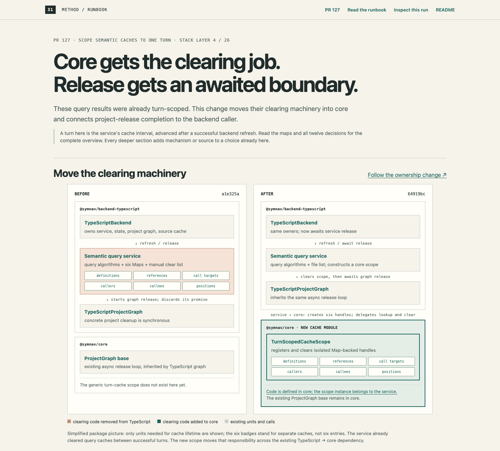 |
About 27 minutes (02:32–02:59 UTC), including source reading, procedure writing, extraction, rendering, and verification. | The full raw source copies could be reduced to the excerpts plus hashes for a single-use page. Repeated before/after panels in the mechanism layer add less than the evidence links. Twelve full cards preserve completeness but make the overview longer than I would want for routine use; I would keep the facts while testing denser presentation. | README# method-runbook ## Entry point Open [index.html](index.html) for the PR explanation. Open [method.html](method.html) for the runbook and [record.html](record.html) for its execution record. ```sh open ~/projects/rich-review-v2/experiments/31-method-runbook/index.html ``` All three HTML files work directly from disk, without a server, network access, or dependencies. The original procedure is [RUNBOOK.md](RUNBOOK.md). ## Kind method ## Subjects pr-127 only. Base `a1e325a5ff979bdfa25babc5554621c8c0f20497` → head `64919bcbcf7fcc8202779b78c5f069b24662bb18`. ## Declared choices - Role framing: learner, with an operator's audit trail alongside the teaching page. - Box lenses: static package/module ownership and cache/release lifecycle. The service owns a scope instance whose implementation lives in core; the inherited graph and concrete TypeScript project are distinct units. - Opening style: a before/after package picture, then refresh and release call paths. Simplifications are marked beside the pictures. - Shape: one complete overview with twelve visible decisions, followed by the same decisions at mechanism and source depth. - Navigation: linear reading, direct anchors from maps and decisions to detail, automatically opened evidence disclosures, return links from each excerpt and mechanism. - Trust posture: source-grounded explanation; distinguish declared intent from stated rationale; expose broad plan/API tensions without a correctness verdict. - Persona: teammate familiar with the repository but unfamiliar with this corner. - Representations used: package containment diagram, lifecycle lanes, before/after contracts, decision cards, one illustrative promise-identity trace, exact source excerpts, diff-assignment matrix, test inventory, and a procedure flowchart. - Importance rule: moved ownership/lifetime boundaries first; qualifications and unexplained choices next; supporting contracts and tests last. Dependency-based overrides are recorded in [ranking.md](ranking.md). No scores or decisions dropped for brevity. - Inputs used (beyond bundle): base/head source snapshots of all changed files; public backend exports; inherited core `ProjectGraph.releaseTransientResources`; concrete TypeScript semantic-project cleanup; definition/callee async entry points; root worktree instructions; relevant architecture-spec passages; keyword searches through worktree plans; touched-file commit messages. Full bundle read except unrelated sections of the large rules compilation; searched the whole compilation and read its relevant architecture section. The supplied overviews contain no usable semantic output. No network research or runtime trace. - Tech: Python standard library for snapshot capture, authored extraction, rendering, and structural verification; self-contained HTML/CSS; a small anchor/disclosure script. Codex harness. No sub-agents spawned. - Built on earlier experiment(s): none. Earlier artifacts and READMEs were deliberately ignored. The supervisor-provided brief, harness record, and worker log in this folder were retained. ## What I tried Wrote and froze the runbook before opening the PR body or diff, then followed its extract → rank → render sequence. The trial preserves 32 source copies, 15 diff regions, assignments for all 391 added and 67 removed lines, 12 decisions, 33 mapped detail claims, 47 source excerpts, and the changed-test inventory. Eight decisions have stated reasons; four have no specific rationale located in the bounded corpus. A one-sentence complete top (“core clears six caches per turn”) concealed too much and was dropped. The complete overview now includes awaited release, failure-only qualifications, reusable handles, public API changes, and test decisions. The core clearing-order reason was initially tempting to use for the entire release change; it is kept separate from the unexplained rationale for changed completion/error visibility. The precomputed overviews were empty, so extraction used source directly. An initially ambiguous project box was split after reading the inherited async graph and synchronous concrete cleanup. Rough maps were encoded directly in the renderer rather than saved as separate intermediate drawings; this deviation is recorded. The browser harness blocks file URLs, so browser validation uses a temporary loopback server. The extraction is human-authored Python data. Scripts compute coordinates, coverage, and HTML; they do not discover semantic decisions or certify the pyramid invariant. The frozen procedure is unchanged. [run-log.md](run-log.md), [ranking.md](ranking.md), and [record.html](record.html) keep the actual path and limitations visible. ## What I would drop The full raw source copies could be reduced to the excerpts plus hashes for a single-use page. Repeated before/after panels in the mechanism layer add less than the evidence links. Twelve full cards preserve completeness but make the overview longer than I would want for routine use; I would keep the facts while testing denser presentation. ## What I would do next Give only the frozen runbook to another operator on another PR, then have a fresh reader attempt a boundary/decision teach-back. The current trial cannot establish reproducibility across operators or actual understanding. ## Time spent About 27 minutes (02:32–02:59 UTC), including source reading, procedure writing, extraction, rendering, and verification. ## Reproduce and inspect Rebuild the three pages from the frozen experiment files: ```sh cd ~/projects/rich-review-v2/experiments/31-method-runbook python3 render.py python3 verify.py ``` `extract.py` reconstructs `ledger.json`, `coverage.json`, and `pyramid-map.json` from the authored claims and copied sources. `capture_sources.py` is a separate source-acquisition step that requires the original bundle and worktrees; it checks the exact commit comparison. It is not needed to open or rebuild the pages. See [validation.json](validation.json) and [browser-validation.json](browser-validation.json) for the recorded checks. Source hashes, excerpt coordinates, all changed-line assignments, overview/detail mappings, local links, and README structure pass. All three pages fit desktop and mobile widths; a full evidence/return route, keyboard activation, and direct evidence URL pass with no browser errors. An early event-timing assertion failure is retained and explained in the run log. The PR's tests were inspected, not executed. No symnav branch, worktree source, shared index, or other experiment was modified; no verdict or comment interface exists. |
| 30 | adjacent-pair attempt 1: claude-opus → attempt 2: claude-opus → attempt 3: codex |
page | #146 **Own daemon completion delivery in one session** and #147 **Serialize accepted daemon execution in one session**, from the `stack` bundle. The preceding commit is used only as the pair's baseline; this is not an explanation of the entire stack. | Role framing: Teammate following a boundary through two consecutive PRs. · Box lenses: Static module structure and lifecycle. A shared-owner rail makes ledger, queue and spool ownership explicit within those views. · Opening style: A short intuition—“Split the owners. Keep the wait.”—followed by a three-stage ownership picture. · Shape: An adjacent-pair map above six groups of decisions, a shared detail view, an interactive example and source receipts. · Navigation: Read sections A–E in order; jump from a map box or decision into its explanation; move between explanations with previous/next; open source in a modal and return without losing the decision. Decision URLs use `#d/<id>`. · Trust posture: Compare intent with the actual two diffs. Preserve the distinction between a documented reason, an observed dependency and a reason not found. Include clock substitutions, trace-predicate/event-order edits, type aliases and test access alongside the architectural decisions. · Persona: A teammate familiar with symnav who does not know this part of the daemon. · Representations used: An ownership map with three selectable revisions; contract directions; mechanism strips; a two-attachment delivery example with independently releasable gates; an evidence table; local source excerpts expandable to whole files. · Importance rule: Put what crosses the split first. Give unexplained surrounding edits and test changes their own entries. The map plus all six decision groups are the complete top layer; the headline alone is an intuition, not the complete review. · Inputs used (beyond bundle): Read-only `git show`, diff, stat, file lists and commit messages at the three exact commits below; the relevant source and tests; the existing queue implementation; the architecture functional spec at #147; the stack-head contributor guide. From the bundle, used #146/#147 PR bodies and commit metadata in `inputs/stack/pr.json`, plus relevant material in `repo-rules.md`. Did not use the stack-tip overview as a substitute for the pair's historical source. No implementation transcript or separate Phase 23/24 implementation plan was found in the inspected bundle and tracked plans. · Tech: Plain HTML, CSS and JavaScript; system fonts; native dialog; embedded local source data. Python copies pinned git objects into this experiment. Playwright checks the artifact. No external dependencies or persistent state. · Built on earlier experiment(s): none. Earlier experiment artifacts were ignored. The pre-existing brief, harness record and attempt logs in this assigned folder were preserved. | 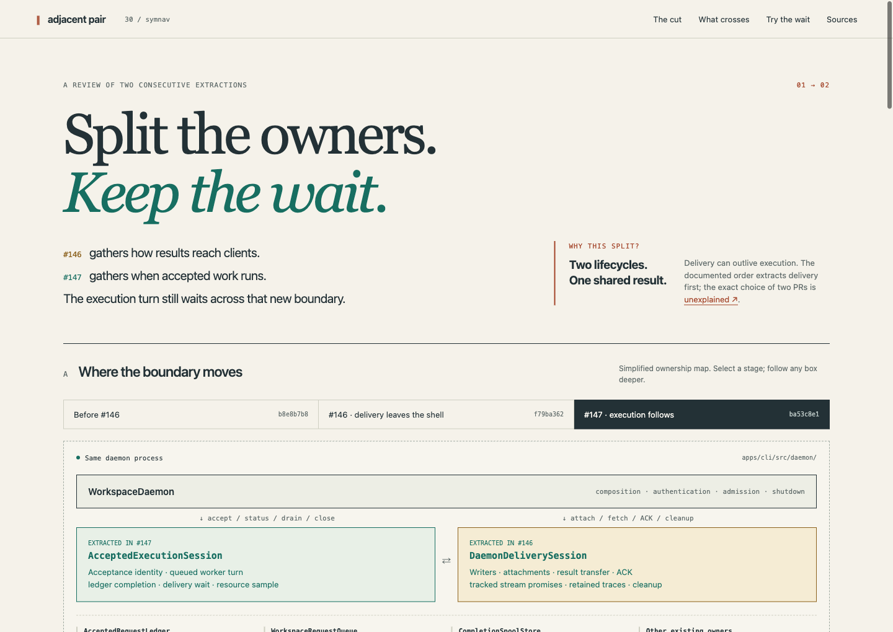 |
About 25 minutes of active Codex work. This excludes the earlier attempts recorded by the orchestrator. | Some of the three-cell mechanism strips, particularly the type-alias and private-test-access entries, repeat what their short explanation already carries. The ownership map and delivery gates do more explanatory work. The full process-test snapshots are useful evidence but much larger than the excerpts most readers will open. | README# adjacent-pair ## Entry point Open [index.html](index.html), or run: ```sh open ~/projects/rich-review-v2/experiments/30-adjacent-pair/index.html ``` It works directly from a file URL. No installation, build, network connection or running server is required. ## Kind page ## Subjects #146 **Own daemon completion delivery in one session** and #147 **Serialize accepted daemon execution in one session**, from the `stack` bundle. The preceding commit is used only as the pair's baseline; this is not an explanation of the entire stack. ## Declared choices - Role framing: Teammate following a boundary through two consecutive PRs. - Box lenses: Static module structure and lifecycle. A shared-owner rail makes ledger, queue and spool ownership explicit within those views. - Opening style: A short intuition—“Split the owners. Keep the wait.”—followed by a three-stage ownership picture. - Shape: An adjacent-pair map above six groups of decisions, a shared detail view, an interactive example and source receipts. - Navigation: Read sections A–E in order; jump from a map box or decision into its explanation; move between explanations with previous/next; open source in a modal and return without losing the decision. Decision URLs use `#d/<id>`. - Trust posture: Compare intent with the actual two diffs. Preserve the distinction between a documented reason, an observed dependency and a reason not found. Include clock substitutions, trace-predicate/event-order edits, type aliases and test access alongside the architectural decisions. - Persona: A teammate familiar with symnav who does not know this part of the daemon. - Representations used: An ownership map with three selectable revisions; contract directions; mechanism strips; a two-attachment delivery example with independently releasable gates; an evidence table; local source excerpts expandable to whole files. - Importance rule: Put what crosses the split first. Give unexplained surrounding edits and test changes their own entries. The map plus all six decision groups are the complete top layer; the headline alone is an intuition, not the complete review. - Inputs used (beyond bundle): Read-only `git show`, diff, stat, file lists and commit messages at the three exact commits below; the relevant source and tests; the existing queue implementation; the architecture functional spec at #147; the stack-head contributor guide. From the bundle, used #146/#147 PR bodies and commit metadata in `inputs/stack/pr.json`, plus relevant material in `repo-rules.md`. Did not use the stack-tip overview as a substitute for the pair's historical source. No implementation transcript or separate Phase 23/24 implementation plan was found in the inspected bundle and tracked plans. - Tech: Plain HTML, CSS and JavaScript; system fonts; native dialog; embedded local source data. Python copies pinned git objects into this experiment. Playwright checks the artifact. No external dependencies or persistent state. - Built on earlier experiment(s): none. Earlier experiment artifacts were ignored. The pre-existing brief, harness record and attempt logs in this assigned folder were preserved. Assigned angle: **why is the split here; what crosses**. Harness for this completed attempt: Codex. ## What I tried I first approached the pair as an execution-to-delivery handoff. Reading the source made that picture inadequate: delivery lends the writer and trace before completion, both sessions touch the authoritative ledger, and execution waits for a delivery promise. The page therefore treats the split as two coordinators with different lifetimes and a continuing synchronization dependency. I used one three-stage map instead of two independent PR summaries. The intermediate stage matters: #146 has already established the surface that #147's extracted caller consumes, and #147 leaves delivery's production implementation unchanged while changing its tests for the ledger-entry metadata. The key interactive example allows either attachment to finish first, then requires a resource sample before B starts. It also permits the latest send to fail and distinguishes stream settlement from acknowledgement. I kept it explicitly illustrative rather than claiming a trace of real daemon execution. A single detail view keeps nineteen decisions from becoming nineteen expanded essays. During verification I corrected an out-of-range source citation and removed an unsupported registry-cleanup step from the shutdown explanation. The source supports server close at that point. The browser harness could not dynamically import Node's filesystem API, so its returned report was saved by the orchestration tools instead. No replacement artifact was needed. ## What I would drop Some of the three-cell mechanism strips, particularly the type-alias and private-test-access entries, repeat what their short explanation already carries. The ownership map and delivery gates do more explanatory work. The full process-test snapshots are useful evidence but much larger than the excerpts most readers will open. ## What I would do next Replace the illustrative gates with captured events from the exact historical modules, including the reverse attachment order. Ask a fresh reader to explain which waits remain across the split before opening the source. ## Time spent About 25 minutes of active Codex work. This excludes the earlier attempts recorded by the orchestrator. ## Evidence and limits | Position | Commit | | --- | --- | | Before #146 | `b8e8b7b85fe0e5fd0cb5784895ee090be015afa1` | | #146 head | `f79ba36278c77c41ca887aa4efc24fd0781e4cec` | | #147 head | `ba53c8e1662fd86d198b95321c90d9c9bef10184` | The [source manifest](evidence/manifest.json) records 22 local source records with paths, revisions and SHA-256 digests. Raw code/spec copies were checked byte for byte against their pinned git objects. [collect-evidence.py](collect-evidence.py) recreates the snapshots using read-only git operations. [knowledge.js](knowledge.js) contains nineteen decision entries and 81 source citations; [sources.js](sources.js) makes those citations available offline. “Stated” means a reason exists in the inspected inputs. For preserved transfer/failure/lifecycle behavior, that reason is the architecture spec's explicit preservation requirement; the detail view identifies it. “Unexplained” is scoped to the inspected inputs. In particular, the author states the extraction order and the two ownership boundaries, but does not compare two PRs with combining or reversing them. The source establishes how this actual order works, not that it was necessary. The delivery example assumes two attachments are subscribed before request A completes, a present workspace and successful resource sampling. Buttons settle modeled send promises. A later fetch does not retarget a promise execution already captured. Workspace deletion, acknowledgement grace, cleanup failure, trace expiry and worker failures are explained separately with source evidence. The two PR diffs were inspected for deleted tests and changed expectations. No deleted test case or weakened behavioral expectation was found. The ledger's internal shape expectations move with the fields; an additional post-acknowledgement assertion preserves the acceptance metadata. Test harness casts follow private state into the new sessions, and that choice is surfaced separately. The #147 session-order test uses resolved stubs; the #146 process delivery test uses deferred send gates. The experiment does **not** run symnav tests or validate the PRs' correctness. Full-suite and mutation results in the PR bodies are author-reported. No symnav branch or worktree file was modified; stack-head remained clean. ## Artifact verification [verification.json](verification.json) records 23 browser checks and a subsequent source-integrity check. They cover all three ownership stages, all decision deep links, valid citation ranges, source expansion and return, both attachment release orders, send failure, resource gating, acknowledgement independence, reset, a 390 px mobile layout and direct `file://` opening. No JavaScript page errors occurred. The final content edits were reloaded and checked in the browser. [verify-page.js](verify-page.js) is the Playwright callback used for these checks. It expects the optional local test server on port 30330, then also verifies direct file opening. The test server was stopped after verification. Screenshots are in [screenshots/](screenshots/). The artifact collects no verdicts, comments or other stored reader input. Its only state is the current view and the disposable example. |
| 29 | refusal attempt 1: codex |
page | pr-148 — Own daemon mechanisms behind DaemonClient. No other PR is analyzed. | Role framing: Editor, using the assigned refusal angle. The conclusion is one architectural destination and four separate review units: time ownership; process authority; package staging and test ownership; the host client. Each unit includes a counterfactual explaining why it can be discussed independently. · Box lenses: Static module/package ownership and the surface exposed to a host. The opening distinguishes the shipped CLI graph from the staged package graph. Internal diagrams show time inputs, authority comparisons, test targets and client boundaries. · Opening style: State the split, then show the boundary at the PR head. The ownership map is explicitly simplified. The new facade has no active CLI consumer arrow. · Shape: Four pyramids under one complete decision map. All 21 decision headings appear in the overview, including removed checks, narrowed test scope, serial test scheduling, output ownership and deferred lifetime changes. · Navigation: Linear reading through all four units; direct links from every overview decision to its disclosure; return links to its overview; source dialogs with keyboard close; a separate diff ledger with deep links and unit filters. · Trust posture: Compare intent with shipped boundaries. Preserve the distinction between a stated architectural rationale and an unexplained local choice. Test relocation does not imply equivalent assertions. The artifact offers no correctness verdict or review collection UI. · Persona: A teammate who knows the repository but not the daemon implementation. · Representations used: Ownership boxes; a proposed dependency diagram; an authority comparison matrix; an illustrative idle timeline; an illustrative routing explorer with 14 situations; a commit strip; source excerpts; the full supplied diff. · Importance rule: A different boundary-changing question earns a separate review unit. Unexplained decisions and changed test boundaries remain attached to their unit and visible before descent. Line count does not determine importance. · Inputs used (beyond bundle): Read-only head/base source and tests, manifests, ESLint and Vitest configuration, repository contributor guides, commit file inventories, and the pre-staging clock-test snapshot at `4a0b2806`. The bundle inputs actually used were `pr.json`, `diff.patch`, `files.txt`, and the contributor/architecture portions of `repo-rules.md`. The generated symbol overviews and earlier experiment folders were not used. No transcript or external research was used. · Tech: Offline HTML, CSS and plain JavaScript, generated with Python’s standard library. Native disclosure elements and a native dialog provide depth. No framework, fonts, CDN, network requests, storage, or runtime backend. Codex harness; no delegated agents. · Built on earlier experiment(s): none. Earlier experiments were deliberately ignored; no code, assets or presentation structure were reused. | 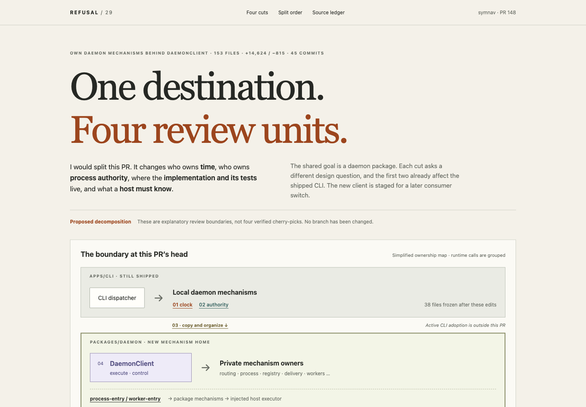 |
About 30 minutes, including source inspection, construction, browser checks and documentation. | The 45-cell commit strip is the least necessary representation. The proposed dependency diagram and per-unit counterfactuals carry the split more directly. The complete decision map is long, especially for staging; that is the cost of keeping deleted checks and unexplained choices visible before the reader opens details. | README# refusal ## Entry point ```sh open /Users/moyaseen/projects/rich-review-v2/experiments/29-refusal/index.html ``` The page works directly from disk, offline, with no installation or server. [Open the page](index.html). Its [source ledger](evidence.html) contains the supplied diff and PR context. ## Kind page ## Subjects pr-148 — Own daemon mechanisms behind DaemonClient. No other PR is analyzed. ## Declared choices - Role framing: Editor, using the assigned refusal angle. The conclusion is one architectural destination and four separate review units: time ownership; process authority; package staging and test ownership; the host client. Each unit includes a counterfactual explaining why it can be discussed independently. - Box lenses: Static module/package ownership and the surface exposed to a host. The opening distinguishes the shipped CLI graph from the staged package graph. Internal diagrams show time inputs, authority comparisons, test targets and client boundaries. - Opening style: State the split, then show the boundary at the PR head. The ownership map is explicitly simplified. The new facade has no active CLI consumer arrow. - Shape: Four pyramids under one complete decision map. All 21 decision headings appear in the overview, including removed checks, narrowed test scope, serial test scheduling, output ownership and deferred lifetime changes. - Navigation: Linear reading through all four units; direct links from every overview decision to its disclosure; return links to its overview; source dialogs with keyboard close; a separate diff ledger with deep links and unit filters. - Trust posture: Compare intent with shipped boundaries. Preserve the distinction between a stated architectural rationale and an unexplained local choice. Test relocation does not imply equivalent assertions. The artifact offers no correctness verdict or review collection UI. - Persona: A teammate who knows the repository but not the daemon implementation. - Representations used: Ownership boxes; a proposed dependency diagram; an authority comparison matrix; an illustrative idle timeline; an illustrative routing explorer with 14 situations; a commit strip; source excerpts; the full supplied diff. - Importance rule: A different boundary-changing question earns a separate review unit. Unexplained decisions and changed test boundaries remain attached to their unit and visible before descent. Line count does not determine importance. - Inputs used (beyond bundle): Read-only head/base source and tests, manifests, ESLint and Vitest configuration, repository contributor guides, commit file inventories, and the pre-staging clock-test snapshot at `4a0b2806`. The bundle inputs actually used were `pr.json`, `diff.patch`, `files.txt`, and the contributor/architecture portions of `repo-rules.md`. The generated symbol overviews and earlier experiment folders were not used. No transcript or external research was used. - Tech: Offline HTML, CSS and plain JavaScript, generated with Python’s standard library. Native disclosure elements and a native dialog provide depth. No framework, fonts, CDN, network requests, storage, or runtime backend. Codex harness; no delegated agents. - Built on earlier experiment(s): none. Earlier experiments were deliberately ignored; no code, assets or presentation structure were reused. ## What I tried I first considered three cuts: internal cleanup, package staging and the client. Reading the early commits showed that clock ownership and process authority ask independent questions inside the existing CLI. I separated them, yielding four units. Routing, output capture and lifecycle control remain together because they form the new host contract. Test changes travel with package staging, where their target changes. I abandoned a slow all-pairs source-similarity sweep. The final artifact uses the supplied rename metadata, commit inventories and exact source reads. It does not claim a mechanically verified percentage of copied or unchanged code. The first clock-test interpretation was too broad. Reading the pinned base showed that the directory scan did not exist there: it was introduced earlier inside this PR, then narrowed when the test moved. The final C4 explanation explicitly distinguishes the pre-staging snapshot from the base. The source dialog shows the intermediate commit rather than presenting it as a base regression. The resulting page has 21 decision records and 57 embedded source excerpts. Its evidence layer includes all 153 changed paths, all 37 renamed mechanism tests and all 38 frozen compatibility sources. The file-to-unit membership can overlap; this is a proposed review decomposition, not four validated patches. The existing 45 commits are assigned to those units without pretending their chronological order already implements the split. ## What I would drop The 45-cell commit strip is the least necessary representation. The proposed dependency diagram and per-unit counterfactuals carry the split more directly. The complete decision map is long, especially for staging; that is the cost of keeping deleted checks and unexplained choices visible before the reader opens details. ## What I would do next Have a fresh reader explain the four boundaries and identify which implementation the CLI still uses. If the split is useful, prepare actual hunk partitions in a separately authorized exercise and verify each intermediate state. ## Time spent About 30 minutes, including source inspection, construction, browser checks and documentation. ## Validation and limits The generated inventory confirms 153 changed paths and 37 renamed CLI-to-package mechanism tests. Recomputing the sorted path/source SHA-256 with CRLF normalization reproduces the head’s committed digest for 38 compatibility files. This freezes the post-cleanup CLI source; it does not establish equivalence to the package copy. Browser checks used isolated Chromium contexts at 1440 × 1000 and 390 × 844. The page opened through `file://`, all section targets existed, all source references resolved, source dialogs opened and closed with Escape, all 14 illustrative route cases produced the expected displayed mode and direct-effect counts, and the diff deep links and filters worked. Neither page had horizontal document overflow at the mobile size. No browser runtime errors were observed. JavaScript syntax and Python compilation checks also passed. [Recorded checks](validation.json) and [screenshots](screenshots/01-opening.png) are included. No Symnav build or test suite was run. Test descriptions in the page report inspected assertions, not results from executing those tests. Both worktrees had no tracked changes at the end. No Symnav files or branches were edited, committed, pushed or rebased. Source anchors: - Base: `ba53c8e1662fd86d198b95321c90d9c9bef10184` - Head: `20838f8dbf413e04767543eb2380d0d114da6c60` - Intermediate snapshot for the clock-scan boundary: `4a0b280649a62c26f0f712166709e086dda74b74` “Unexplained” means no rationale was found in the supplied PR body, commit bodies and inspected specs. It is not a claim about every conversation the author may have had. A blanket preservation requirement is identified as such, rather than offered as proof that behavior is preserved. The timeline and route explorer are labeled illustrative. The route explorer models source branches and direct client calls; it does not execute a daemon or include the internal work of an independent startup trigger. The decomposition and suggested order are proposals. Existing commits interleave concerns, and no intermediate split was built or validated. ## Files and regeneration - `index.html`, `style.css`, `app.js`, `data.js`: the offline page. - `evidence.html`: complete diff ledger and recorded PR context. - `analysis.json`: decision records, proposed unit/commit membership, file membership and inventory measurements. - `generate.py`: generator for the HTML, embedded source data and analysis inventory. From this folder, run `python3 generate.py` with the original input bundle and worktrees available. Opening the generated page does not require those worktrees. - `validation.json`, `screenshots/`: artifact verification evidence. - `brief.md`: the assigned brief, already supplied in this folder by the orchestrator. - `harness.txt`, `worker-attempt-1.log`: orchestrator-provided harness/transcript files, left in place. |
| 28 | blast-radius-tool attempt 1: claude-opus → attempt 2: claude-opus → attempt 3: codex |
tool + page | pr-131 only: Route daemon thresholds through centralized policy. | Role framing: a source-coupling analyst helping a teammate understand ownership choices. · Box lenses: static policy ownership versus CLI consumers; caller process, daemon process and worker thread placement. Reference files are also grouped by source boundary. · Opening style: a before/after ownership picture. The existing snapshot becomes a required source of consumer inputs; mechanisms remain in `apps/cli`. · Shape: a ranked inventory with a small explanation pyramid for each decision. · Navigation: read all 15 summaries in order, jump from the map or small-count attention links, switch depth in the inspector, follow shared-file decisions, return to the selected row. Decision URLs support direct entry. · Trust posture: distinguish recorded reasons from unexplained choices. Surface test transformations, deleted assertions, casts and changed error provenance alongside architecture. No verdict or comment UI. · Persona: teammate who knows the repository but does not own daemon internals. · Representations used: simplified ownership boxes, runtime placement strip, computed radius bars and counts, before/after comparisons, concept sequences, real reference locations, pinned source excerpts and complete related file diffs. · Importance rule: distinct external production files in direct `symnav refs`, unioned across each decision's declared seeds and then across base/head. Descending file count; decision ID breaks ties. Tests are counted separately. No weighted risk or correctness score. Zero and unmeasured are distinct, and unexplained small-count decisions have prominent jump links. · Inputs used (beyond bundle): both read-only worktrees; their built CLI; 40 fresh reference queries (17 base, 23 head); a policy symbol overview and two exploratory reference queries; `plans/005/daemon-policy.md`, the architecture contract and existing package policy tests. Bundle overviews contained headings without symbol data. No implementing-agent transcript was supplied. Author inputs are copied under `data/intent/`. · Tech: Python standard library collector and verifier; dependency-free HTML, CSS and JavaScript page. Collection used Python 3.11.11 and Node 22.12.0. Browser inspection used Playwright. No source changes, commits or branch operations in symnav. · Built on earlier experiment(s): none. Earlier experiment artifacts were ignored. The existing brief and orchestrator logs in this assigned folder were preserved. | 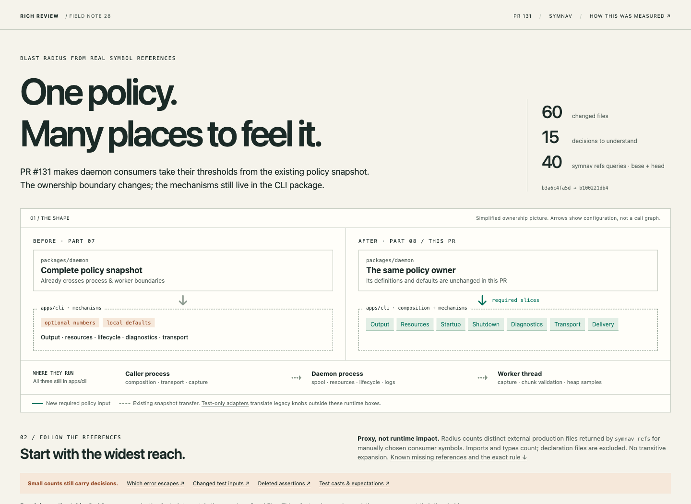 |
About 30 minutes of wall-clock work for this attempt, including reading, collection, implementation and inspection. | Some generic vertical concept sequences. The ownership map and source before/after comparisons often carry their explanation more precisely. I would also resist making the file counts more visually authoritative: the seed choices and known coverage gap limit what they mean. | README# blast-radius-tool ## Entry point Open [index.html](index.html), or on this Mac: ```sh open ~/projects/rich-review-v2/experiments/28-blast-radius-tool/index.html ``` The delivered page uses saved data and has no server, CDN, installation or network dependency. Select a decision, then choose **Mechanism**, **References** or **Evidence**. The full decision inventory remains readable without opening those panels. ## Kind tool + page ## Subjects pr-131 only: Route daemon thresholds through centralized policy. Base: `b3a6c4fa5dcf96223765aa147a9e094cd4a51b0e` Head: `b100221db48754656328391b878299c5a0bab443` ## Declared choices - Role framing: a source-coupling analyst helping a teammate understand ownership choices. - Box lenses: static policy ownership versus CLI consumers; caller process, daemon process and worker thread placement. Reference files are also grouped by source boundary. - Opening style: a before/after ownership picture. The existing snapshot becomes a required source of consumer inputs; mechanisms remain in `apps/cli`. - Shape: a ranked inventory with a small explanation pyramid for each decision. - Navigation: read all 15 summaries in order, jump from the map or small-count attention links, switch depth in the inspector, follow shared-file decisions, return to the selected row. Decision URLs support direct entry. - Trust posture: distinguish recorded reasons from unexplained choices. Surface test transformations, deleted assertions, casts and changed error provenance alongside architecture. No verdict or comment UI. - Persona: teammate who knows the repository but does not own daemon internals. - Representations used: simplified ownership boxes, runtime placement strip, computed radius bars and counts, before/after comparisons, concept sequences, real reference locations, pinned source excerpts and complete related file diffs. - Importance rule: distinct external production files in direct `symnav refs`, unioned across each decision's declared seeds and then across base/head. Descending file count; decision ID breaks ties. Tests are counted separately. No weighted risk or correctness score. Zero and unmeasured are distinct, and unexplained small-count decisions have prominent jump links. - Inputs used (beyond bundle): both read-only worktrees; their built CLI; 40 fresh reference queries (17 base, 23 head); a policy symbol overview and two exploratory reference queries; `plans/005/daemon-policy.md`, the architecture contract and existing package policy tests. Bundle overviews contained headings without symbol data. No implementing-agent transcript was supplied. Author inputs are copied under `data/intent/`. - Tech: Python standard library collector and verifier; dependency-free HTML, CSS and JavaScript page. Collection used Python 3.11.11 and Node 22.12.0. Browser inspection used Playwright. No source changes, commits or branch operations in symnav. - Built on earlier experiment(s): none. Earlier experiment artifacts were ignored. The existing brief and orchestrator logs in this assigned folder were preserved. ## What I tried I first queried `DaemonPolicyValues::output`, intending to rank policy sections by their incoming references. The actual result contained only two references inside the daemon package and missed known CLI accesses such as the executor's `policy.values.output`. The [raw probe](data/probes/output-refs-valid.json) and [symbol overview](data/probes/policy-overview.json) are retained. The cause of this cross-project/type-projection coverage gap was not isolated. I restarted the measurement around explicitly chosen consumer classes and methods. That produces a traceable footprint, but the seed granularity matters: a class includes consumers of its unchanged members, while a private method can have no external file reach. I avoided a speculative transitive file-import walk. The resulting inventory covers all 60 changed paths, grouped into 15 decisions. Startup has the widest observed production radius (5 files), then shutdown (4). Eight of the nine nonzero production footprints retain exactly the same base/head file set. Reference reach can order the existing coupling; it does not explain the new input ownership by itself. The page supplies that explanation. Four decisions have unexplained aspects. Three decisions are explicitly unmeasured because test assertions or string-scanning rules do not have a meaningful symbol-reference footprint. Error provenance has a measured zero external radius, which is a different condition. ## What I would drop Some generic vertical concept sequences. The ownership map and source before/after comparisons often carry their explanation more precisely. I would also resist making the file counts more visually authoritative: the seed choices and known coverage gap limit what they mean. ## What I would do next Isolate the missed cross-project policy-field references, then compare rankings from policy-field, method and class seeds while keeping the same authored decision inventory. ## Time spent About 30 minutes of wall-clock work for this attempt, including reading, collection, implementation and inspection. ## Recomputing the artifact From this folder, with the supplied built worktrees still present: ```sh python3 blast_radius.py python3 verify.py ``` `blast_radius.py --refresh` reruns every query; otherwise raw responses are cached by revision and canonical symbol ID. `--base`, `--head`, `--bundle`, `--manifest`, `--jobs` and `--timeout` are available. The default concurrency is two. Collection sets `SYMNAV_DAEMON=0` and `SYMNAV_TELEMETRY=0`, and directs any state into this experiment's ignored `.state/` directory. Edit [decisions.json](decisions.json) to change the authored grouping or seeds. The collector checks worktree revisions against the bundled diff, requires all changed paths to be assigned, rejects tracked worktree modifications, resolves each seed exactly and rejects failed or paginated reference results. The page is rendered from the resulting [report.json](data/report.json) / `report.js` pair. ## Counting limits All seed declaration files are excluded from a decision's external radius, including references between its seeds. Generated files are excluded. Tests, helpers, meta-tests and fixtures are separated from production. Imports, exports, types and usages count by default; the Usage control removes the first three categories. This remains static reference information. Base/head union compares file paths, not individual unchanged reference locations. A file is counted once even if multiple seeds and many locations reach it. Decisions can overlap; their counts must not be summed. The tool does not infer runtime execution, transitive effects, behavioral consequences, correctness, test coverage or rationale. Selecting seeds and grouping decisions are authored steps, not automatic discoveries. ## Validation [Ten checks passed](data/verification.txt): deduplication, exclusion of seed files, production/test/generated separation, usage filtering, zero versus invalid/paginated responses, input hashes, the 60-file +1298/−544 inventory, every saved metric against raw references, and every source excerpt and reference preview against its worktree file. [Browser checks](data/browser-validation.json) exercised all 15 selections, evidence and reference panels, six filter combinations, source expansion, keyboard tabs, direct decision URLs, and mobile selection/return navigation. Screenshots were inspected at 1440×1050 and 390×844; no horizontal overflow or page JavaScript errors were observed. A sample of 12 rendered local links returned HTTP 200. The browser harness blocks `file:` navigation, so inspection used a temporary local HTTP server, which was stopped afterward. Both symnav worktrees were clean at the end. No symnav correctness or CI verdict is claimed; these checks validate this experiment's computation, evidence and reader interface. |
| 27 | test-honesty attempt 1: codex |
page | pr-131 and pr-148 only. | Role framing: auditor who explains the reach of an assertion, without issuing correctness verdicts. · Box lenses: static package ownership plus the path actually traversed by a test, including process, worker, mock and host boundaries. · Opening style: a deliberately lossy window analogy, followed by a concrete before/after recovery observation and two ownership diagrams. · Shape: two PR pyramids. The 21 visible decision summaries are the complete top layer; the hero supplies intuition. Expanded rows add apparatus, mechanism, assertions and evidence limits on the same decisions. Exact source and diff snapshots form the bottom layer. · Navigation: linear reading through decision summaries; nonlinear jumps from boundary diagrams to readings, then exact source lines and a return link. The complete changed-test inventory can be filtered by PR and file change. · Trust posture: test honesty. Trace every promoted claim through setup, exercised implementation and assertion. Track moved tests before interpreting deletions, and show replacement witnesses at their actual boundaries. · Persona: a teammate who knows the repository but not this corner of its daemon implementation. · Representations used: boundary diagrams, stimulus/assertion tables, before/after fixture and assertion comparisons, a fake-clock timeline, a directory-scope diagram, and four-step playback of a recorded real socket scenario. Playback does not execute symnav in the browser. · Importance rule: promote the places where a claim extends beyond its witness, where ownership moves, or where a changed fixture/assertion changes what can be observed. Unexplained choices receive the same visible treatment as architectural choices. No scores, verdicts or review storage. · Inputs used (beyond bundle): all four supplied read-only base/head worktrees; selected test and implementation sources; architecture, policy and follow-up specs and relevant daemon-functional-spec clauses; supplied prebuilt transports/process/worker entries; local selected test results; one new isolated socket reproduction. From the bundles, used PR metadata and commits, full diffs, file stats and repository rules. Did not use the precomputed overview outputs, external research or implementing-agent transcripts. · Tech: plain HTML/CSS/JavaScript generated with Python. Node for the isolated probe; existing pnpm/Vitest/TypeScript tooling for selected source checks. Browser inspection used Playwright tools. Viewing requires none of those development tools. · Built on earlier experiment(s): none. Earlier experiment contents were ignored. Built by one Codex worker without sub-agents. | 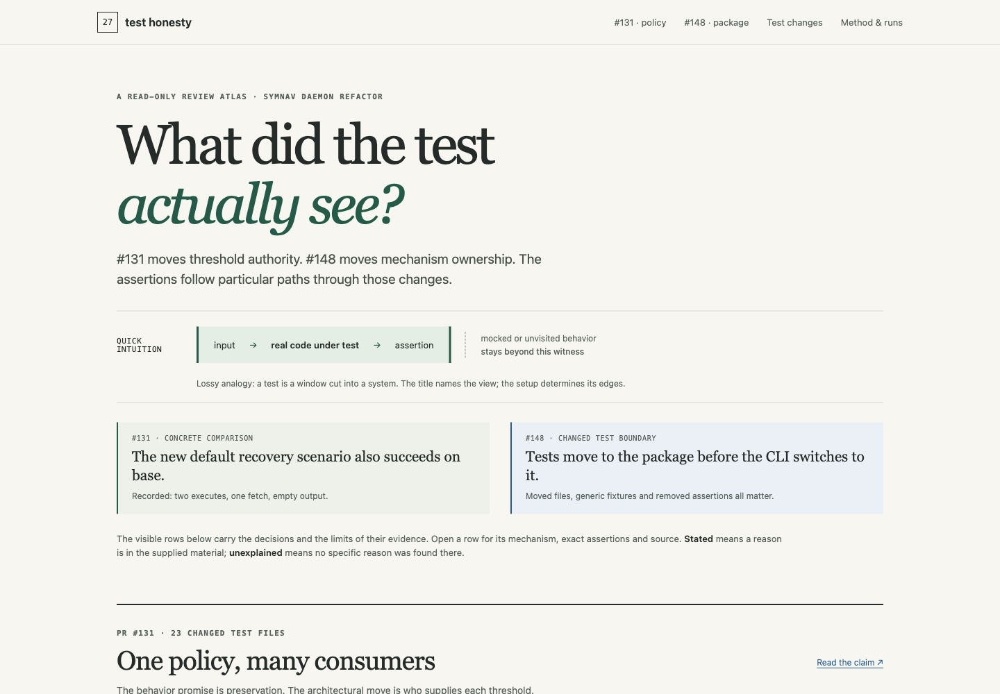 |
About 35 minutes, approximately 02:00–02:35 UTC on 2026-09-13. | The full per-file diff archive is bulky, and simple ownership readings do not always need all three apparatus/assertion/limit columns. A next version could keep the complete inventory but reserve detailed layouts for the witnesses whose boundaries need a picture. I would keep the deleted-assertion accounting and the recorded comparison. | README# test-honesty ## Entry point Open [index.html](index.html), or run: ```sh open ~/projects/rich-review-v2/experiments/27-test-honesty/index.html ``` The page works offline with no server or install. Keep the folder together: its source evidence and exact diffs are local snapshots. The temporary browser-verification server has been stopped. ## Kind page ## Subjects pr-131 and pr-148 only. ## Declared choices - Role framing: auditor who explains the reach of an assertion, without issuing correctness verdicts. - Box lenses: static package ownership plus the path actually traversed by a test, including process, worker, mock and host boundaries. - Opening style: a deliberately lossy window analogy, followed by a concrete before/after recovery observation and two ownership diagrams. - Shape: two PR pyramids. The 21 visible decision summaries are the complete top layer; the hero supplies intuition. Expanded rows add apparatus, mechanism, assertions and evidence limits on the same decisions. Exact source and diff snapshots form the bottom layer. - Navigation: linear reading through decision summaries; nonlinear jumps from boundary diagrams to readings, then exact source lines and a return link. The complete changed-test inventory can be filtered by PR and file change. - Trust posture: test honesty. Trace every promoted claim through setup, exercised implementation and assertion. Track moved tests before interpreting deletions, and show replacement witnesses at their actual boundaries. - Persona: a teammate who knows the repository but not this corner of its daemon implementation. - Representations used: boundary diagrams, stimulus/assertion tables, before/after fixture and assertion comparisons, a fake-clock timeline, a directory-scope diagram, and four-step playback of a recorded real socket scenario. Playback does not execute symnav in the browser. - Importance rule: promote the places where a claim extends beyond its witness, where ownership moves, or where a changed fixture/assertion changes what can be observed. Unexplained choices receive the same visible treatment as architectural choices. No scores, verdicts or review storage. - Inputs used (beyond bundle): all four supplied read-only base/head worktrees; selected test and implementation sources; architecture, policy and follow-up specs and relevant daemon-functional-spec clauses; supplied prebuilt transports/process/worker entries; local selected test results; one new isolated socket reproduction. From the bundles, used PR metadata and commits, full diffs, file stats and repository rules. Did not use the precomputed overview outputs, external research or implementing-agent transcripts. - Tech: plain HTML/CSS/JavaScript generated with Python. Node for the isolated probe; existing pnpm/Vitest/TypeScript tooling for selected source checks. Browser inspection used Playwright tools. Viewing requires none of those development tools. - Built on earlier experiment(s): none. Earlier experiment contents were ignored. Built by one Codex worker without sub-agents. ## What I tried I walked from PR claims to tests, then inspected helpers and base versions before deciding what a deletion meant. A changed-test tally was useful only as an appendix: it cannot distinguish a moved witness, a retired duplicate, or a changed assertion. The final page has 21 expandable readings, an inventory of all 86 changed test files, 180 source snapshots and 213 exact file diffs. The strongest concrete result is the default recovery comparison. I reproduced #131’s new empty-result socket scenario against the supplied base and head transports. Both completed with two execute requests, one fetch and exit 0. That observation characterizes an existing default path; it does not establish the new interface’s non-default delivery-budget behavior. The page preserves this distinction, alongside the separate startup tests that vary retries through 0 and 2. For #148, the page makes the active CLI graph and staged package graph visible together. It follows the 37 relocated test files, the 38-file compatibility digest, generic executor substitution, removed timing expectations, the separately restored CLI version check, deleted entry assertions, public façade smoke scope, directory-limited clock scan and platform-specific cleanup expectations. Reasons are marked stated or unexplained; a rationale for package independence is not silently reused as a rationale for every assertion removal. Validation completed: - #131: 208 existing tests passed in 10 selected files. - #148: 169 existing tests passed in 17 selected files; the daemon package test typecheck also passed. - The isolated before/after recovery probe passed its asserted scenario on both supplied builds. - Browser checks exercised diagram jumps, disclosure controls, exact source links and returns, replay/reset and inventory filters. All readings fit widths 390, 768 and 1440 without document overflow; wide tables scroll inside their own containers. Three screenshots are included. - The artifact checker validates local links and line fragments. The final report is [logs/artifact-links.json](logs/artifact-links.json). - All four symnav worktrees stayed clean for tracked files. No symnav source, branch or commit was changed. These are selected local checks on macOS 15 / Node 22.12.0, not full CI or a Windows run. CLI end-to-end suites were inspected but not executed here. The browser tool blocks file URLs, so visual verification used a temporary HTTP server; the page contains no fetches or external dependencies. [WORKLOG.md](WORKLOG.md) records the process and tooling failures; [logs/manifest.json](logs/manifest.json) records exact commands, commits and results. ## What I would drop The full per-file diff archive is bulky, and simple ownership readings do not always need all three apparatus/assertion/limit columns. A next version could keep the complete inventory but reserve detailed layouts for the witnesses whose boundaries need a picture. I would keep the deleted-assertion accounting and the recorded comparison. ## What I would do next Measure which decisions the supplied tests distinguish using isolated, targeted mutations, starting with non-default delivery budgets. Separately trace the public DaemonClient through a real package daemon to expose the composition boundary between the current smoke and integration witnesses. ## Time spent About 35 minutes, approximately 02:00–02:35 UTC on 2026-09-13. |
| 26 | physical-analogy attempt 1: claude-opus → attempt 2: claude-opus → attempt 3: codex |
page | pr-127 — Scope semantic caches to one turn. No additional PR subjects. | Role framing: a clerk explains a six-drawer sorting cabinet, then opens it to reveal the implementation. · Assigned angle: post office, deliberately lo-fi, with the physical analogy and illustrative replays marked lossy where they appear. · Box lenses: code ownership across the TypeScript/core package boundary; runtime instance ownership and cache/resource lifetime. Core supplies the implementation; the service still owns its own scope instance. · Opening style: physical before/after diptych. Six individual clearing actions become one shared clearing mechanism; the release return path gains a wait. · Shape: pyramid. An opening picture plus eight visible decision cards is the complete overview. Mechanism sections refine those same eight subjects. Exact source excerpts form the evidence layer. · Navigation: linear reading, links from each overview decision, direct links from each pictured drawer to its selected detail, five event replays, local source dialogs, return links, and a complete source explorer. Closing a dialog restores focus to its trigger. · Trust posture: explain the mechanism and preserve the distinction between recorded rationale, unexplained choices, illustrative events, and executed tests. No correctness verdict or review collection. · Persona: a teammate who knows the repository but not this corner. · Representations used: cabinet drawing in HTML/CSS; package and instance diagrams; six selectable drawer descriptions; lookup and lifecycle flows; before/after event replays; contract tables; exact numbered source excerpts. · Importance rule: surface the ownership move, preserved lookup semantics, and changed release barrier before expanding implementation detail. The unexplained scope/API choices and test preservation remain visible at the same overview depth. · Inputs used (beyond bundle): both supplied worktrees; the architecture spec's ownership clauses; unchanged core project-graph release and concrete TypeScript project cleanup; the six commit messages; focused Vitest execution; working-tree status checks. From the bundle, used `pr.json`, `diff.patch`, `files.txt`, and contributor/spec material. Did not use the overview files or `stack.md`. · Tech: vanilla HTML, CSS, and JavaScript; Python standard-library evidence copier. Browser validation used Playwright. Classic local scripts avoid file-protocol fetch/module requirements. · Built on earlier experiment(s): none. Earlier experiment folders were ignored; no page, method, or component was reused. · Harness: Codex. | 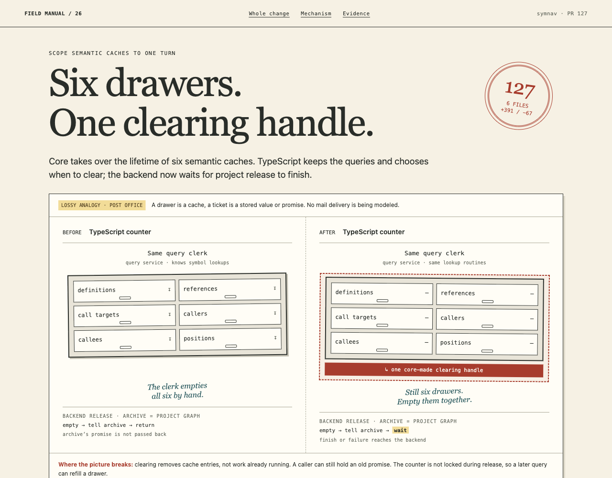 |
About 25 minutes, including source inspection, construction, focused test execution, and browser validation. | The successful-refresh replay is the first candidate: both versions behave alike, and the static lifecycle diagram already explains it. The failed-refresh and release replays earn more space. The postal stamp is decoration rather than explanation. | README# physical-analogy ## Entry point Open [index.html](index.html), or on this Mac: ```sh open /Users/moyaseen/projects/rich-review-v2/experiments/26-physical-analogy/index.html ``` The folder is standalone. No install, build, server, network, or external fonts are required. Keep `style.css`, `page.js`, `sources.js`, and `evidence/` alongside the page. ## Kind page ## Subjects pr-127 — Scope semantic caches to one turn. No additional PR subjects. Base `a1e325a5ff979bdfa25babc5554621c8c0f20497` → head `64919bcbcf7fcc8202779b78c5f069b24662bb18`. ## Declared choices - Role framing: a clerk explains a six-drawer sorting cabinet, then opens it to reveal the implementation. - Assigned angle: post office, deliberately lo-fi, with the physical analogy and illustrative replays marked lossy where they appear. - Box lenses: code ownership across the TypeScript/core package boundary; runtime instance ownership and cache/resource lifetime. Core supplies the implementation; the service still owns its own scope instance. - Opening style: physical before/after diptych. Six individual clearing actions become one shared clearing mechanism; the release return path gains a wait. - Shape: pyramid. An opening picture plus eight visible decision cards is the complete overview. Mechanism sections refine those same eight subjects. Exact source excerpts form the evidence layer. - Navigation: linear reading, links from each overview decision, direct links from each pictured drawer to its selected detail, five event replays, local source dialogs, return links, and a complete source explorer. Closing a dialog restores focus to its trigger. - Trust posture: explain the mechanism and preserve the distinction between recorded rationale, unexplained choices, illustrative events, and executed tests. No correctness verdict or review collection. - Persona: a teammate who knows the repository but not this corner. - Representations used: cabinet drawing in HTML/CSS; package and instance diagrams; six selectable drawer descriptions; lookup and lifecycle flows; before/after event replays; contract tables; exact numbered source excerpts. - Importance rule: surface the ownership move, preserved lookup semantics, and changed release barrier before expanding implementation detail. The unexplained scope/API choices and test preservation remain visible at the same overview depth. - Inputs used (beyond bundle): both supplied worktrees; the architecture spec's ownership clauses; unchanged core project-graph release and concrete TypeScript project cleanup; the six commit messages; focused Vitest execution; working-tree status checks. From the bundle, used `pr.json`, `diff.patch`, `files.txt`, and contributor/spec material. Did not use the overview files or `stack.md`. - Tech: vanilla HTML, CSS, and JavaScript; Python standard-library evidence copier. Browser validation used Playwright. Classic local scripts avoid file-protocol fetch/module requirements. - Built on earlier experiment(s): none. Earlier experiment folders were ignored; no page, method, or component was reused. - Harness: Codex. ## What I tried Considered plumbing and kitchen metaphors, but disposal and washing suggest that clearing destroys the underlying work. Chose a sorting cabinet with claim tickets instead. A caller can hold an old ticket outside the cabinet after the drawer has been emptied. The cabinet alone could not explain release completion, so I added a small before/after rehearsal with explicit backend and project-graph states. It covers successful refresh, failed refresh, pending release followed by success or failure, and an old promise settling after a new turn. These are authored illustrations, not executions of symnav. No built approach was abandoned. During validation, corrected a narrow-screen cabinet overflow, a before-release evidence range, file statistics, mobile text spacing, and diagram links that initially jumped to the drawer section without selecting the corresponding drawer. ## What I would drop The successful-refresh replay is the first candidate: both versions behave alike, and the static lifecycle diagram already explains it. The failed-refresh and release replays earn more space. The postal stamp is decoration rather than explanation. ## What I would do next Have a teammate explain the change from the overview alone, especially whether clearing cancels old work or locks out new queries. Shorten the overview only if those limits and the API choice survive that retelling. ## Time spent About 25 minutes, including source inspection, construction, focused test execution, and browser validation. ## Validation and evidence limits - The two changed test files ran at the head revision: **15 tests passed** (11 service tests, 4 core tests). [Raw report](evidence/focused-tests.json). This is a focused run, not a full-suite or end-to-end daemon claim. - Browser checks exercised every drawer, all five replays in both directions, immediate clearing and pending/rejected release states, source dialogs, Escape/focus return, keyboard drawer selection, and direct overview jumps. No runtime JavaScript errors were observed. Layout checked at 320, 390, 768, and 1280 pixels; source dialogs also checked at mobile width. - All embedded excerpt ranges and local source targets were checked. The complete source explorer was opened at its requested line anchor. [Screenshots](screenshots/) record the opening, release rehearsal, mobile layout, and complete overview. - Automated browsing used a temporary local HTTP server because the browser tool blocks `file:` navigation. That server was stopped. The artifact itself uses local styles and classic scripts and has no fetch calls, remote dependencies, storage APIs, forms, verdict controls, or comment collection. - Both symnav worktrees remained clean in the final status check. No symnav source, branch, commit, or remote was changed. Rationale labels are bounded by the supplied PR body, six commit messages (all bodies empty), and inspected architecture-plan clauses. The reusable scope's omitted cancellation/locking/turn-token facilities and the exact public API/file-list narrowing have no separate reason in those materials. They are marked **unexplained**, not given invented motivations. The file-list API change is disclosed by the PR and is not labeled unrequested. The diff adds ten tests and preserves the previous five service tests without weakened assertions. The analogy deliberately does not model actual mail delivery, TypeScript scheduling, all refresh side effects, or cancellation. Its pending graph is a controlled scenario corresponding to the new test double; the concrete TypeScript cleanup remains synchronous. Cached entry identity is distinguished from fresh reference/position projections and async wrapper identity. `build-evidence.py` can regenerate the local source copies from the two supplied worktrees and bundle. It is not needed to open the artifact. [sources.js](sources.js) and [the source explorer](evidence/sources.html) embed the six changed files at their available revisions plus the relevant plan and graph context. [The exact diff](evidence/diff.patch) and [PR bundle](evidence/pr.json) are also included. |
| 25 | reader-sketch attempt 1: codex |
page | pr-131 — Route daemon thresholds through centralized policy. | Role framing: reader as sketcher; teach-back through spatial reconstruction. · Box lenses: static package/module ownership and runtime topology. The third sheet adds the lexical scopes of deadlines and recovery counters. · Opening style: a question plus a marked, lossy analogy of local knobs becoming a policy board with wires. · Shape: a complete pocket brief followed by three drawing sheets: who chooses values, what crosses process boundaries, and which scope owns a clock or recovery budget. · Navigation: linear read → draw → compare → follow a field; nonlinear jumps from every decision card, source-map box, and atlas consumer into a detail dialog. Closing returns to the drawing; dialogs also have previous/next navigation. All evidence is local. · Trust posture: compare the PR’s account with both revisions. Mark recorded reasons as stated; mark missing reasons as unexplained. Surface test removals, test-input transformations, and the changed error-selection scope alongside architectural decisions. · Persona: a teammate who knows the repo but not the daemon corner. · Representations used: the reader’s own SVG sketch, labeled boxes, freehand ink, before/after source maps, nested request/attempt boxes, decision cards, a policy-field table, exact source excerpts, and a full changed-file evidence book. Maps group modules and show settings flow; they do not execute symnav. · Importance rule: ownership boundaries first, then distinct value consumers and recovery scopes. Test choices and unexplained changes receive their own cards in the same initial layer rather than appearing as surprises in source detail. · Inputs used (beyond bundle): direct reads of changed production/test code in both read-only worktrees; the existing `packages/daemon/src/daemon-policy.ts`, its tests, and `policy-testing.ts` references; `plans/005/daemon-policy.md`; the architecture functional specification; contributor/dependency rules. From the bundle: PR body and all six commit subjects, full diff, changed-file statistics, stack position, and relevant repo-rule sections. The generated overview files were not used. No GitHub/network research, runtime traces, or implementing-agent transcript was used. · Tech: plain HTML, CSS, JavaScript, and SVG; system fonts; no application dependencies. A Node script generates source excerpts, the policy atlas data, evidence HTML, and file-to-decision links. Playwright was used for browser verification. · Built on earlier experiment(s): none. Earlier experiment folders were left unread. All implementation and diagrams were made for this brief. | 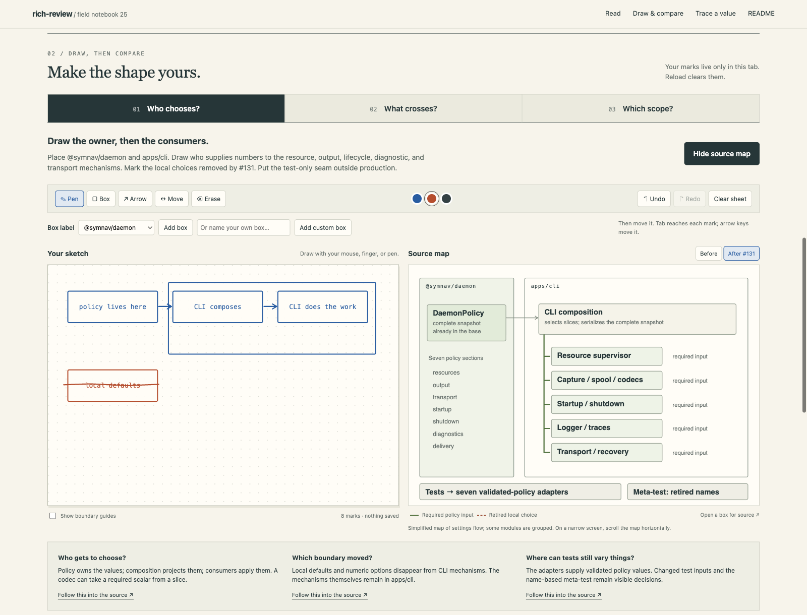 |
Approximately 29 minutes, including source inspection, implementation, browser verification, and screenshots. Codex harness; no additional agents delegated. | The full policy atlas is the least essential element; its 44 fields and recipes could live entirely in the evidence book. The opening knob analogy is also expendable once the reader understands the drawing task. I would keep all three boundary lenses and the explicit test-change cards. | README# reader-sketch ## Entry point Open [index.html](index.html), or on this Mac: ```sh open ~/projects/rich-review-v2/experiments/25-reader-sketch/index.html ``` No install, build, server, or network is needed. The full folder is portable. A desktop browser gives the two drawings room to sit beside each other; narrow screens stack them and allow horizontal scrolling inside the source map. Read the pocket brief, choose a sheet, draw your interpretation, then reveal the source map. Pen, boxes, arrows, movable labels, optional boundary guides, undo/redo, and keyboard controls work on all three sheets. Each sheet keeps its own temporary marks. Reload clears everything. There is no submission, verdict, score, saved sketch, or comment storage. ## Kind page Interactive notebook, as assigned. ## Subjects pr-131 — Route daemon thresholds through centralized policy. Base: `b3a6c4fa5dcf96223765aa147a9e094cd4a51b0e`. Head: `b100221db48754656328391b878299c5a0bab443`. No additional PR subjects. Existing policy implementation and tests in the base provide context for this delta. ## Declared choices - Role framing: reader as sketcher; teach-back through spatial reconstruction. - Box lenses: static package/module ownership and runtime topology. The third sheet adds the lexical scopes of deadlines and recovery counters. - Opening style: a question plus a marked, lossy analogy of local knobs becoming a policy board with wires. - Shape: a complete pocket brief followed by three drawing sheets: who chooses values, what crosses process boundaries, and which scope owns a clock or recovery budget. - Navigation: linear read → draw → compare → follow a field; nonlinear jumps from every decision card, source-map box, and atlas consumer into a detail dialog. Closing returns to the drawing; dialogs also have previous/next navigation. All evidence is local. - Trust posture: compare the PR’s account with both revisions. Mark recorded reasons as stated; mark missing reasons as unexplained. Surface test removals, test-input transformations, and the changed error-selection scope alongside architectural decisions. - Persona: a teammate who knows the repo but not the daemon corner. - Representations used: the reader’s own SVG sketch, labeled boxes, freehand ink, before/after source maps, nested request/attempt boxes, decision cards, a policy-field table, exact source excerpts, and a full changed-file evidence book. Maps group modules and show settings flow; they do not execute symnav. - Importance rule: ownership boundaries first, then distinct value consumers and recovery scopes. Test choices and unexplained changes receive their own cards in the same initial layer rather than appearing as surprises in source detail. - Inputs used (beyond bundle): direct reads of changed production/test code in both read-only worktrees; the existing `packages/daemon/src/daemon-policy.ts`, its tests, and `policy-testing.ts` references; `plans/005/daemon-policy.md`; the architecture functional specification; contributor/dependency rules. From the bundle: PR body and all six commit subjects, full diff, changed-file statistics, stack position, and relevant repo-rule sections. The generated overview files were not used. No GitHub/network research, runtime traces, or implementing-agent transcript was used. - Tech: plain HTML, CSS, JavaScript, and SVG; system fonts; no application dependencies. A Node script generates source excerpts, the policy atlas data, evidence HTML, and file-to-decision links. Playwright was used for browser verification. - Built on earlier experiment(s): none. Earlier experiment folders were left unread. All implementation and diagrams were made for this brief. ## What I tried I kept true free drawing, then added optional labeled boxes and keyboard editing because a trackpad should not make handwriting a prerequisite. The reference is a separate drawing: revealing it does not alter the reader’s marks or assign a score. I considered hiding the explanation until the reader finished drawing, but that would conceal decisions below the initial layer. Instead, all thirteen decision summaries and missing reasons are visible first; only the reference geometry is withheld. This tests reconstruction from a brief, not unaided recall from a PR title. The label palette deliberately offers help and may make reconstruction easier than drawing from scratch. I dropped the idea of pixel-overlay comparison. Two conceptually equivalent drawings can have unrelated layouts. Side-by-side inspection keeps the comparison about ownership and scope. Reading the base prevented an inaccurate story: the fetch-resume flag was already inside each `executeOnce`. The new numeric controls preserve that nesting. The source map also avoids portraying the numeric fetch field as an arbitrary repeated-fetch loop: fetch failure exits the attempt. Separately, the reattachment loop moves the completion await outside the original error-preserving catch; that unexplained selection change has a top-layer card and both source excerpts. Screenshot inspection found that an empty boundary box obscured earlier labels. Empty boxes are now transparent, can be added after their contents, and allow selection of enclosed marks. Label wrapping was corrected too. ## What I would drop The full policy atlas is the least essential element; its 44 fields and recipes could live entirely in the evidence book. The opening knob analogy is also expendable once the reader understands the drawing task. I would keep all three boundary lenses and the explicit test-change cards. ## What I would do next Watch an unfamiliar teammate explain their arrows after comparing. Try a version with fewer supplied labels to see whether the palette is teaching the mechanism or merely cueing its vocabulary. ## Time spent Approximately 29 minutes, including source inspection, implementation, browser verification, and screenshots. Codex harness; no additional agents delegated. ## Evidence and verification [verification.md](verification.md) records the checks and limits. The browser harness passed all 68 assertions, including direct offline file opening. Both symnav worktrees remained clean. No symnav tests were run; this artifact does not report a correctness result for the PR. The initial brief gives all decision categories before the reader descends. Dialogs refine the same facts with mechanism and source. The field atlas adds the recorded values and recipes for those same policy sections. There is no forced drawing step before comparison. The resource derivation test deletions are distinguished from central tests that already existed in the base. The changed spill fixtures and helper clamps are not treated as evidence of identical test scenarios. The source-text meta-test is described as a denylist, with its limits visible. ## Files - [index.html](index.html), `style.css`, and `app.js`: the drawing notebook. - `content.js`: authored decision summaries, source selectors, and sheet prompts. - `evidence-data.js`: 43 exact excerpts and the 44 recorded policy fields/recipes. - [evidence.html](evidence.html): PR body, commit subjects, policy record, architecture specification, excerpts, and all 60 changed-file diffs. - `coverage.json`: navigation from each changed path to related decisions; it is not an automated completeness assessment. - `build-evidence.mjs`: regenerates the evidence from the frozen local worktrees. Run `node build-evidence.mjs` from this folder if rebuilding; it checks both revision IDs and the claimed unchanged policy context. - `verify-browser.js`: the exercised Playwright-page function. - `screenshots/`: builder-created examples. The shipped notebook starts blank. - [brief.md](brief.md): the received brief. |
| 24 | question-driven-nav attempt 1: claude-opus → attempt 2: claude-opus → attempt 3: codex |
page | pr-127 only: “Scope semantic caches to one turn,” relative to its supplied PR #126 base. | Role framing: Learner choosing what they need explained next. · Box lenses: Static package/module structure and lifecycle. Before/after boxes highlight moved cache ownership; release diagrams highlight the newly awaited completion boundary. · Opening style: A question followed by a simplified cache-lifetime picture. Its lossy marks and non-cancellation limit are labeled at the picture. · Shape: A complete seven-answer overview above a graph of mechanism and source questions. Fifteen nodes total. · Navigation: Assigned angle—each node ends with three questions. The first choice supplies a sequential route; other choices cross to related mechanisms or evidence. Deep links reconstruct ancestors. Reading position and route use browser history, with no response collection. · Trust posture: Explain recorded decisions and expose absent reasons. The page distinguishes the stated release barrier from the unrecorded reconciliation with the spec's broader parity promise. · Persona: A teammate who knows the repository but not this corner. · Representations used: Package boxes, before/after release paths, six-cache inventory, projection diagram, factory return/throw comparison, two interactive illustrative sequences, contract and test tables, numbered source excerpts. · Importance rule: Ownership and completion/failure boundaries, then unrecorded choices. The entire decision set is visible before descent; exact types, cases, and lines come later. · Inputs used (beyond bundle): Base/head source, contributor guide, architecture spec, unchanged core ProjectGraph and TypeScript semantic-project context, six commit subjects/bodies, focused test execution, and a byte comparison of retained service tests. The bundle's overview files had headings/absent-file notices but no symbol output. · Tech: Plain HTML, CSS, and JavaScript; system fonts; Python 3 generates nodes from captured evidence. No runtime dependencies. Playwright Chromium used for browser checks. · Built on earlier experiment(s): none. No earlier experiment content was read or reused. | 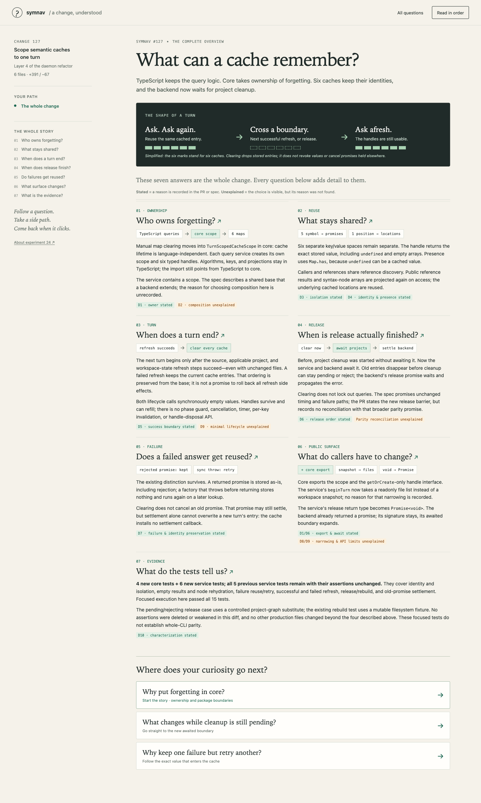 |
About 30 minutes of wall-clock work. Harness: Codex. | The duplicated full scope listing across evidence routes. Some repeated recall sentences also add reading weight; the overview is deliberately complete, but that makes it longer than the opening question suggests. | README# question-driven-nav
## Entry point
Open [index.html](index.html), or on this Mac:
open ~/projects/rich-review-v2/experiments/24-question-driven-nav/index.html
No installation, server, or network is needed. JavaScript is required. All source evidence is captured locally.
Choose a question under an answer. “Return to my question” restores the previous reading position; browser Back also works. “Read in order” puts the complete overview, seven mechanism answers, and seven evidence answers in one column.
## Kind
page
## Subjects
pr-127 only: “Scope semantic caches to one turn,” relative to its supplied PR #126 base.
## Declared choices
- Role framing: Learner choosing what they need explained next.
- Box lenses: Static package/module structure and lifecycle. Before/after boxes highlight moved cache ownership; release diagrams highlight the newly awaited completion boundary.
- Opening style: A question followed by a simplified cache-lifetime picture. Its lossy marks and non-cancellation limit are labeled at the picture.
- Shape: A complete seven-answer overview above a graph of mechanism and source questions. Fifteen nodes total.
- Navigation: Assigned angle—each node ends with three questions. The first choice supplies a sequential route; other choices cross to related mechanisms or evidence. Deep links reconstruct ancestors. Reading position and route use browser history, with no response collection.
- Trust posture: Explain recorded decisions and expose absent reasons. The page distinguishes the stated release barrier from the unrecorded reconciliation with the spec's broader parity promise.
- Persona: A teammate who knows the repository but not this corner.
- Representations used: Package boxes, before/after release paths, six-cache inventory, projection diagram, factory return/throw comparison, two interactive illustrative sequences, contract and test tables, numbered source excerpts.
- Importance rule: Ownership and completion/failure boundaries, then unrecorded choices. The entire decision set is visible before descent; exact types, cases, and lines come later.
- Inputs used (beyond bundle): Base/head source, contributor guide, architecture spec, unchanged core ProjectGraph and TypeScript semantic-project context, six commit subjects/bodies, focused test execution, and a byte comparison of retained service tests. The bundle's overview files had headings/absent-file notices but no symbol output.
- Tech: Plain HTML, CSS, and JavaScript; system fonts; Python 3 generates nodes from captured evidence. No runtime dependencies. Playwright Chromium used for browser checks.
- Built on earlier experiment(s): none. No earlier experiment content was read or reused.
## What I tried
One answer at a time, with three question exits and a remembered return path. I considered a short opening followed by a pure branching tree, but rejected that before implementation because it would hide decisions until the reader picked the right branch. The complete seven-answer root is the compromise.
The mechanism pages distinguish cache eviction from resource completion, and cached values from public projections. Two fixed-frame illustrations let readers choose successful/failed refresh and pending/resolved/rejected release; they do not execute symnav.
The evidence audit found ten added test cases and five previous service cases whose assertions and helpers are byte-for-byte retained. All 15 tests passed in the two focused files. This does not establish whole-CLI or daemon parity.
Forty browser checks passed, including all deep links, the sequential route, return-position restoration, browser Back, keyboard focus, and layouts from 320 to 1440 pixels. Native hash scrolling and a duplicate anchor offset needed fixes during validation. Desktop and mobile screenshots were inspected; Safari and a screen reader were not exercised.
Supporting records: [pyramid map](pyramid-map.md), [source and test observations](evidence/verification.md), [browser checks](browser-checks.json), [work log](work-log.md), and [screenshots](screenshots/01-overview.png). Both assigned worktrees remain clean.
## What I would drop
The duplicated full scope listing across evidence routes. Some repeated recall sentences also add reading weight; the overview is deliberately complete, but that makes it longer than the opening question suggests.
## What I would do next
Let a teammate choose their own path, then explain when an old promise can survive and when backend release finishes. Use where they get lost to revise the question wording and cross-links.
## Time spent
About 30 minutes of wall-clock work. Harness: Codex.
|
| 23 | zoom-canvas attempt 1: codex |
page — interactive semantic zoom canvas | pr-148 only: **Own daemon mechanisms behind DaemonClient**. | Role framing: learner, using spatial memory to keep the owner of each decision in view. · Box lenses: static package/module ownership and public-versus-private change surface. A process/worker inset supplies runtime context. · Opening style: before/after in one frame. The structural sketch marks the active CLI path and the staged package boundary; its selected edges and grouped modules are explicitly lossy. · Shape: a pyramid inside six sibling rooms, with three semantic depths: complete outline → mechanism and choices → reason and evidence. · Navigation: one continuous coordinate space; click-to-fit and pointer zoom replace a box's outline with its internals. Nonlinear jumps coexist with a 32-stop linear tour, breadcrumbs, minimap and return controls. · Trust posture: compare stated intent with the implementation and changed test evidence. `S` means a stated reason; `U` means no reason was found in the examined prose. Test names that specify behavior are not automatically treated as rationales. Preservation intent is distinguished from the original reason for an inherited setting. · Persona: a teammate who knows the repository but not this daemon corner. · Representations used: package boundary comparison, nested owner diagrams, an illustrative routing selector with skipped observations, an idle-event timeline, decision before/after comparisons, captured source excerpts and a complete file-diff census. · Importance rule: ownership and authority first; unexplained choices and changed/deleted test expectations remain on the opening layer. Test serialization and the added development dependency receive decision boxes too. · Inputs used (beyond bundle): the supplied head/base source trees, package metadata and test configurations, architecture/follow-up specifications, mechanism and contract tests, Git revision/status metadata, and comparisons between new package files and their CLI antecedents. Bundle inputs used: `pr.json`, `diff.patch`, `files.txt`; `overview-after.txt` was inspected but contained headers without useful symbol output. No external research or other PR worktree was used. · Tech: dependency-free HTML/CSS/JavaScript with SVG diagrams and transformed DOM boxes. Python builds a local evidence bank; opening the artifact needs only the generated files. Codex harness. · Built on earlier experiment(s): none. Earlier experiment artifacts were left unread and nothing was reused from them. | 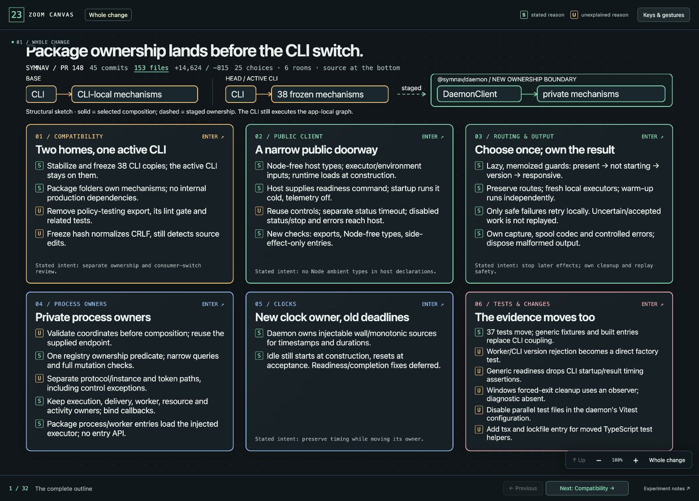 |
About 40 minutes, including source inspection, construction and browser checks. | The complete raw-diff census earns less space than the targeted evidence: it is thorough but makes the reader sort through move/import noise again. The long linear tour is a fallback; walking every source box in order is tiring. The complete opening outline is necessarily dense, and the phone-sized fit is a locator rather than a comfortable reading view. | README# zoom-canvas ## Entry point Open [index.html](index.html) directly. No install, server, network connection or build is required. ```sh open ~/projects/rich-review-v2/experiments/23-zoom-canvas/index.html ``` Click **ENTER** on a room, then a decision box. Wheel/pinch zooms at the pointer; dragging pans. **Escape** goes up, **Home** returns to the complete outline, and **Previous / Next** follows a linear tour. Every decision also has a direct jump from the opening outline. Breadcrumbs, browser history and URL fragments preserve navigation. Scroll over source code to read it without moving the camera. Desktop is the intended reading surface. Narrow screens retain the controls and semantic levels, but need manual zooming to read comfortably. ## Kind page — interactive semantic zoom canvas ## Subjects pr-148 only: **Own daemon mechanisms behind DaemonClient**. The main idea is visible immediately: the package gains real mechanism ownership while the shipped CLI continues to use its stabilized, frozen compatibility graph. The 14.6k added lines are not presented as 14.6k lines of newly invented behavior. ## Declared choices - Role framing: learner, using spatial memory to keep the owner of each decision in view. - Box lenses: static package/module ownership and public-versus-private change surface. A process/worker inset supplies runtime context. - Opening style: before/after in one frame. The structural sketch marks the active CLI path and the staged package boundary; its selected edges and grouped modules are explicitly lossy. - Shape: a pyramid inside six sibling rooms, with three semantic depths: complete outline → mechanism and choices → reason and evidence. - Navigation: one continuous coordinate space; click-to-fit and pointer zoom replace a box's outline with its internals. Nonlinear jumps coexist with a 32-stop linear tour, breadcrumbs, minimap and return controls. - Trust posture: compare stated intent with the implementation and changed test evidence. `S` means a stated reason; `U` means no reason was found in the examined prose. Test names that specify behavior are not automatically treated as rationales. Preservation intent is distinguished from the original reason for an inherited setting. - Persona: a teammate who knows the repository but not this daemon corner. - Representations used: package boundary comparison, nested owner diagrams, an illustrative routing selector with skipped observations, an idle-event timeline, decision before/after comparisons, captured source excerpts and a complete file-diff census. - Importance rule: ownership and authority first; unexplained choices and changed/deleted test expectations remain on the opening layer. Test serialization and the added development dependency receive decision boxes too. - Inputs used (beyond bundle): the supplied head/base source trees, package metadata and test configurations, architecture/follow-up specifications, mechanism and contract tests, Git revision/status metadata, and comparisons between new package files and their CLI antecedents. Bundle inputs used: `pr.json`, `diff.patch`, `files.txt`; `overview-after.txt` was inspected but contained headers without useful symbol output. No external research or other PR worktree was used. - Tech: dependency-free HTML/CSS/JavaScript with SVG diagrams and transformed DOM boxes. Python builds a local evidence bank; opening the artifact needs only the generated files. Codex harness. - Built on earlier experiment(s): none. Earlier experiment artifacts were left unread and nothing was reused from them. ## What I tried I first compared the copied mechanisms with their CLI antecedents, then collected the actual boundary changes rather than treating the large additions as all new mechanisms. This surfaced the facade/runtime split, clock and registry ownership, output capture, entry construction, authentication exceptions and the test changes. The initial six-room outline held 23 grouped choices. A final configuration sweep found two more: `fileParallelism: false` and the `tsx` development dependency. I moved the freeze and declaration-test choices into the ownership rooms they explain, keeping all 25 choices visible in the opening outline. Uniform text sizing initially clipped the test outline and two long cards; tighter outline wording and a slightly denser test room fixed those failures. The camera keeps the physical boxes in place while their representations change. The routing control shows first-decision effects on an illustrative input. It does **not** execute symnav; its counts cover routing observations, not subsequent independent startup activity. The source layer embeds 84 distinct evidence excerpts and all 153 file diffs, so it works offline. ## What I would drop The complete raw-diff census earns less space than the targeted evidence: it is thorough but makes the reader sort through move/import noise again. The long linear tour is a fallback; walking every source box in order is tiring. The complete opening outline is necessarily dense, and the phone-sized fit is a locator rather than a comfortable reading view. ## What I would do next Observe a fresh reader finding the active CLI path, the replay boundary and the missing timing assertions. Use where they lose their position to revise zoom thresholds and pin source views to the relevant hunk. ## Time spent About 40 minutes, including source inspection, construction and browser checks. ## Evidence and verification The supplied snapshot is base `ba53c8e1662fd86d198b95321c90d9c9bef10184` → head `20838f8dbf413e04767543eb2380d0d114da6c60`. The input patch contains 153 files, +14,624/−815 lines and 37 test-file moves into package source. The evidence builder checks those inventories and captures exact source locations with optional commit-pinned GitHub links. - [decision-inventory.md](decision-inventory.md): the authored choices and scoped rationales. - [build-evidence.py](build-evidence.py): rebuild `data.js` and the inventory with `python3 experiments/23-zoom-canvas/build-evidence.py` from the repository root. It reads the supplied inputs/worktrees and writes only this experiment. - [browser-checks.js](browser-checks.js): the Playwright page function used for interaction checks. It expects the folder served on localhost port 8423, and also verifies direct file opening. - [verification.json](verification.json): passing artifact checks for all 32 tour stops, 94 source selections, representative routing cases, pan/zoom, source scrolling, keyboard jumps, history, the file census and three viewport sizes. No JavaScript errors or clipped decision content were found in the final pass. - [screenshots](screenshots/): opening map, routing mechanism and a deleted-assertion decision. Symnav's test suites were **not run** for this experiment; existing tests are presented as source evidence, not reported execution results. Both supplied worktrees remained clean. The artifact has no verdict controls, comment collection, review persistence or correctness score. |
| 22 | game-any attempt 1: claude-opus → attempt 2: claude-opus → attempt 3: codex |
other: game — five open-book strategy puzzles. | stack`: all 26 PRs, main `b6801ebdd2421d0ca2e4bdd61ec0f04c24ddd73e` → #149 tip `d07002357d3e9596bfaae910a1ac63b77981620b`. | Role framing: the reader operates the architecture as a workshop dispatcher and learns by moving state across boundaries. · Box lenses: static package ownership and lifecycle/state ownership. A separate process/thread path disambiguates packages from runtime locations. · Opening style: workshop metaphor, marked lossy, followed by a before/after ownership map. · Shape: a complete open briefing above five independent puzzle boards. · Navigation: linear briefing → games → evidence; direct jumps from contracts into stations and decisions; evidence drawer with return links and previous/next decisions; all stations open immediately. · Trust posture: explain the chosen mechanisms and separate stated reasons from unexplained choices. Test changes receive their own root entries. No correctness verdicts. · Persona: a teammate who knows symnav's purpose but has not read the daemon stack. · Representations used: responsibility tiles, before/after package map, runtime path, cache shelves, ordered guard tracks, FIFO ledger, worker generations, record-transfer board, decision cards, policy table, pinned source excerpts. · Importance rule: ownership changes and distinct lifetimes lead; preserved behavior debts, unexplained changes, and removed/narrowed test observations stay visible alongside architecture. · Inputs used (beyond bundle): pinned `git show` source from both supplied worktrees; core, TypeScript, CLI, renderer, daemon policy/transport/execution/resource/worker/testing implementation; changed tests; daemon-policy and follow-up specifications. Read the philosophy and playbook in order. Used bundle PR bodies, commit subjects/bodies, patch, file inventory, and repository rules; did not use overview dumps. · Tech: local HTML, CSS, classic JavaScript, a pure illustrative state machine, Python standard-library evidence builder/server, Node behavioral checks, Playwright browser verification. No remote assets, libraries, APIs, analytics, or storage. · Built on earlier experiment(s): none. Other experiment folders were ignored. An unfinished earlier attempt already in this assigned folder was inspected and preserved in `abandoned-seams/`; its graph data, styles, scripts, and decision taxonomy are not loaded by the delivered game. | 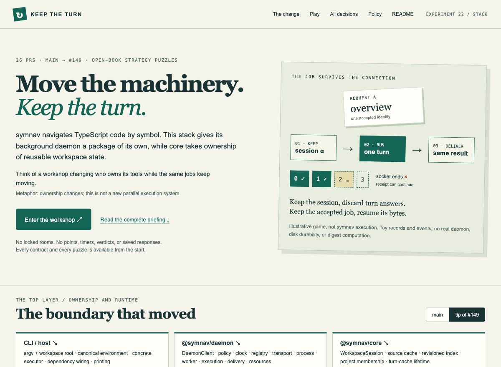 |
About one hour for this completion pass. Earlier unfinished attempts were already present and are excluded from that estimate. | The package-sorting puzzle is less revealing than the worker and transfer puzzles; it would be the first game to drop. The unused SEAMS graph intermediates also add folder weight without helping the delivered artifact. | README# game-any ## Entry point [Open Keep the Turn](game.html). The entry page is `game.html`; `index.html` forwards to it. No installation or build step is needed. For the localhost setup used in browser verification, run: ```sh python3 ~/projects/rich-review-v2/experiments/22-game-any/tools/serve.py ``` Open the URL it prints. Press Ctrl-C to stop the server. The temporary validation server has been stopped. ## Kind other: game — five open-book strategy puzzles. ## Subjects `stack`: all 26 PRs, main `b6801ebdd2421d0ca2e4bdd61ec0f04c24ddd73e` → #149 tip `d07002357d3e9596bfaae910a1ac63b77981620b`. ## Declared choices - Role framing: the reader operates the architecture as a workshop dispatcher and learns by moving state across boundaries. - Box lenses: static package ownership and lifecycle/state ownership. A separate process/thread path disambiguates packages from runtime locations. - Opening style: workshop metaphor, marked lossy, followed by a before/after ownership map. - Shape: a complete open briefing above five independent puzzle boards. - Navigation: linear briefing → games → evidence; direct jumps from contracts into stations and decisions; evidence drawer with return links and previous/next decisions; all stations open immediately. - Trust posture: explain the chosen mechanisms and separate stated reasons from unexplained choices. Test changes receive their own root entries. No correctness verdicts. - Persona: a teammate who knows symnav's purpose but has not read the daemon stack. - Representations used: responsibility tiles, before/after package map, runtime path, cache shelves, ordered guard tracks, FIFO ledger, worker generations, record-transfer board, decision cards, policy table, pinned source excerpts. - Importance rule: ownership changes and distinct lifetimes lead; preserved behavior debts, unexplained changes, and removed/narrowed test observations stay visible alongside architecture. - Inputs used (beyond bundle): pinned `git show` source from both supplied worktrees; core, TypeScript, CLI, renderer, daemon policy/transport/execution/resource/worker/testing implementation; changed tests; daemon-policy and follow-up specifications. Read the philosophy and playbook in order. Used bundle PR bodies, commit subjects/bodies, patch, file inventory, and repository rules; did not use overview dumps. - Tech: local HTML, CSS, classic JavaScript, a pure illustrative state machine, Python standard-library evidence builder/server, Node behavioral checks, Playwright browser verification. No remote assets, libraries, APIs, analytics, or storage. - Built on earlier experiment(s): none. Other experiment folders were ignored. An unfinished earlier attempt already in this assigned folder was inspected and preserved in `abandoned-seams/`; its graph data, styles, scripts, and decision taxonomy are not loaded by the delivered game. ## What I tried The existing SEAMS shell referenced missing gameplay scripts and included a score placeholder. I preserved it and started Keep the Turn in the same folder. I chose five bounded causal puzzles: move package owners, preserve a failed refresh's current turn, order guards, hand off a worker behind delivery/sample barriers, and recover output without replaying accepted work. An early worker model compressed readiness and resource recovery together. Reading the generation manager, resource supervisor, and request queue led to separate ready-report, termination, recovery-bookkeeping, and boundary-settlement moves. A keyboard navigation race and narrow-screen overflow were found and fixed through browser use. ## What I would drop The package-sorting puzzle is less revealing than the worker and transfer puzzles; it would be the first game to drop. The unused SEAMS graph intermediates also add folder weight without helping the delivered artifact. ## What I would do next Add a real captured request trace beside the toy model. Ask a fresh reader to explain why fetch and identical-request reattachment preserve different state, using the board alone. ## Time spent About one hour for this completion pass. Earlier unfinished attempts were already present and are excluded from that estimate. ## Playing Click a responsibility and then its destination. Click two guards to exchange their order. Other boards expose event buttons: receive, append, publish, release, replace, acknowledge. A move reports its consequence. Undo and Restart operate on page memory only. “Show next move” performs one disclosed walkthrough move. Arrow keys navigate station tabs; all controls also support Tab and Enter. Escape closes evidence. There are no scores, timers, locked facts, approval/rejection controls, comment fields, or persisted responses. Completing a station marks only that its model was demonstrated. ## How rule 4 is implemented The root briefing includes the ownership map, every game contract, all **117 PR-declared decisions**, **20 supplementary observations**, **44 policy/recipe rows**, and **five intentional missing deadlines**. These render before the workbench and are never hidden behind progress. The early workshop link permits an immediate nonlinear jump. Each game animates rules already present in its root contract. Evidence links open the same choice and rationale with a related final-tip excerpt. The **46 local evidence pages** include full pinned source, its main counterpart where available, and the supplied historical PR body/commits. Temporary choices are explicitly distinguished from the final tip: policy testing/serialization, compatibility transport, and staged CLI copies are later internalized or removed. This makes the complete root long. The short opening conveys the shape; the full briefing carries exhaustive declared decisions. Keeping every reason visible has a real scanning cost, which this experiment accepts rather than hiding decisions behind gameplay. ## Fidelity and scope The game does **not** execute symnav. Requests, revisions, cache entries, pressure events, output records, and digest seals are toy representations. Durability means the modeled awaited capture append; it is not an fsync claim. The cache board models a revisioned index and semantic-turn timing, and explicitly separates the independent project-graph transaction. The worker board starts after initial readiness activation. It does not simulate real scheduling, memory quantities, or the full recovery circuit. Supplementary observations cover preserved behavior debts, the PR-template change, project ordering, inspector behavior, raw-log assertions replaced by parsed-event inspection, a transfer test budget increase, mechanism-test relocation, and each of the ten removed built-CLI status/stop scenarios. Related package tests are not presented as proof of equivalent coverage. “Unexplained” is bounded to the inspected inputs; commit subjects naming a change are not treated as its reason. ## Validation and maintenance `node tools/verify-model.cjs` passes 10 behavioral checks. The final Playwright pass passes 23 checks, including all stations, both recovery scopes, keyboard movement, Undo, evidence focus restoration, all local source pages, complete root rendering, and zero document overflow at 320/390/768/1200 pixels. See [validation.md](validation.md), [browser results](validation-browser.json), and [screenshots](screenshots/01-opening.png). Browser verification used HTTP because the browser tool blocks `file:` navigation. No symnav test suite was run, no runtime trace was claimed, and no symnav source or branch was modified. No changes were committed; experiment finish handling belongs to the orchestrator. To regenerate the reading material from the supplied pins, run `python3 tools/build-evidence.py` from this folder. It reads symnav through Git and writes only this experiment's `assets/briefing.js` and `evidence/`. `tools/browser-check.js` is a Playwright function accepting an open `page` on this artifact. Older `data/`, `content/`, `work/`, root `js/` and `css/`, and other preexisting extraction scripts remain unused provenance. |
| 21 | narrated-top attempt 1: codex |
other: video/audio + page | stack`: all 26 daemon architecture PRs, main `b6801ebdd2421d0ca2e4bdd61ec0f04c24ddd73e` → #149 tip `d07002357d3e9596bfaae910a1ac63b77981620b`. | Role framing: a teammate explaining a change before the human examines its decisions. · Box lenses: package ownership, runtime host injection, and state lifetime. Package dependencies and runtime loading are drawn separately. · Opening style: an explicitly approximate workshop metaphor, immediately followed by the actual before/after ownership boxes. · Shape: six narrated 15-second chapters, then a visible decision map, then mechanisms and source evidence. Assigned angle: 90-second spoken/animated top layer, page below. · Navigation: play, pause, scrub, chapter jump; diagram-to-mechanism links; choice-to-reason dialogs; source excerpts; return links to the relevant film chapter. · Trust posture: preserve author-stated reasons, identify unexplained choices, distinguish staged ownership from active ownership, and give test/scope changes the same visibility as architecture. No correctness verdicts or response collection. · Persona: a developer familiar with TypeScript who does not know this daemon implementation. · Representations used: synthesized speech, synchronized captions, animated SVG schematics, before/after boxes, choice chips, admission controls, illustrative cache/recovery models, comparison tables, and exact source excerpts. · Importance rule: ownership, acceptance/replay, publication and release boundaries, policy and lifetime first; test-boundary changes and deferred behavior remain visible in the stopping layer. · Inputs used (beyond bundle): read-only final implementations and tests in both worktrees; git history and selected exact commit patches; final architecture, policy and follow-up contracts; literal test-title comparison. Bundle PR bodies, commit subjects, diff, changed-file inventory and selected repository rules were used. The empty precomputed overview bodies were not used as semantic evidence. · Tech: dependency-free HTML/CSS/JavaScript; deterministic SVG; macOS Samantha speech; ffmpeg; Python; Chromium/Playwright for rendering and verification. Runtime needs no installed library or external service. Harness: Codex. · Built on earlier experiment(s): none. Earlier experiments were ignored. The abandoned v1 repository was not accessed. | 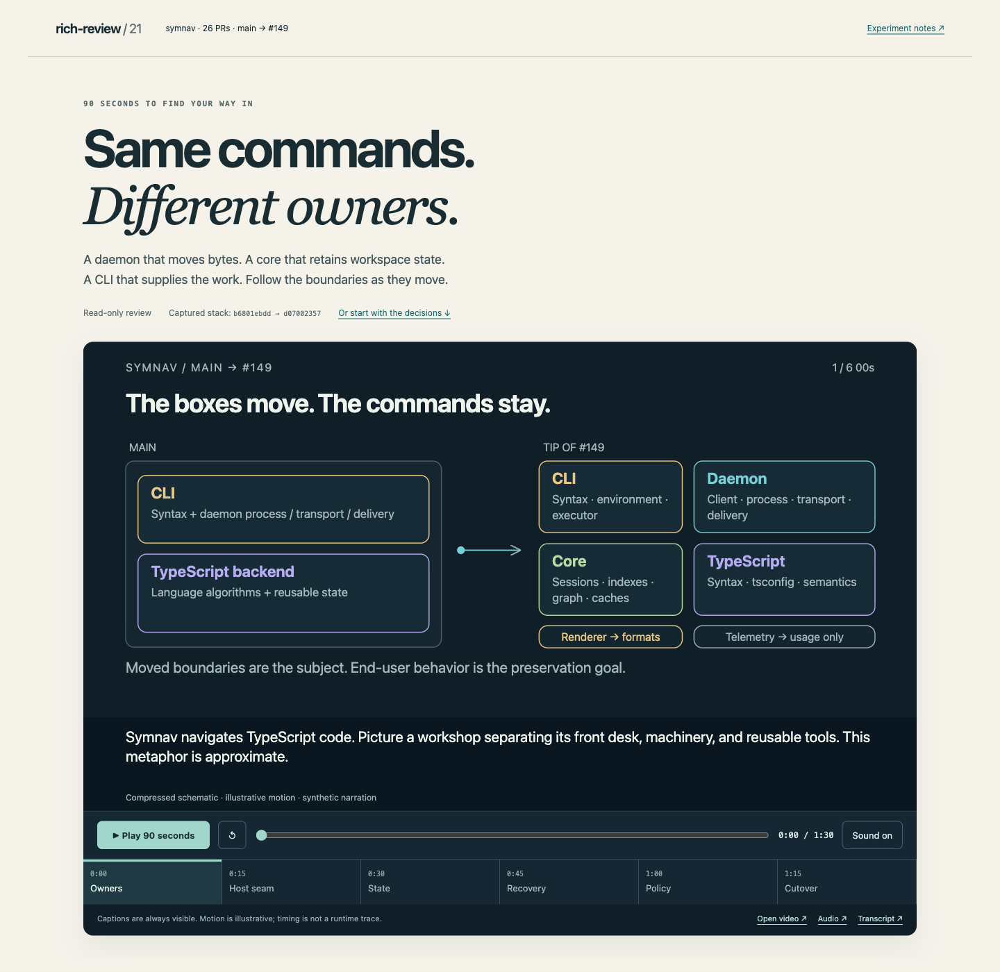 |
About 40 minutes on 2026-09-13. | The repeated PR-card scaffolding makes the full map long. I would replace it with a boundary-oriented choice layout once that layout can preserve all the source connections. The synthetic voice is serviceable but has less useful emphasis than a human explanation. | README# narrated-top ## Entry point Open [index.html](index.html), or run: ```sh open ~/projects/rich-review-v2/experiments/21-narrated-top/index.html ``` Everything needed to view the page is local. Press **Play 90 seconds**. The standalone [video player](video.html), [MP4](assets/narrated-top.mp4), [audio](assets/narration.mp3), and [transcript](narration.txt) are also included. Optional local preview with media seeking: ```sh python3 ~/projects/rich-review-v2/experiments/21-narrated-top/serve.py ``` Open `http://127.0.0.1:8721/`. Ctrl-C stops it. Development preview servers were stopped at handoff. ## Kind other: video/audio + page ## Subjects `stack`: all 26 daemon architecture PRs, main `b6801ebdd2421d0ca2e4bdd61ec0f04c24ddd73e` → #149 tip `d07002357d3e9596bfaae910a1ac63b77981620b`. ## Declared choices - Role framing: a teammate explaining a change before the human examines its decisions. - Box lenses: package ownership, runtime host injection, and state lifetime. Package dependencies and runtime loading are drawn separately. - Opening style: an explicitly approximate workshop metaphor, immediately followed by the actual before/after ownership boxes. - Shape: six narrated 15-second chapters, then a visible decision map, then mechanisms and source evidence. Assigned angle: 90-second spoken/animated top layer, page below. - Navigation: play, pause, scrub, chapter jump; diagram-to-mechanism links; choice-to-reason dialogs; source excerpts; return links to the relevant film chapter. - Trust posture: preserve author-stated reasons, identify unexplained choices, distinguish staged ownership from active ownership, and give test/scope changes the same visibility as architecture. No correctness verdicts or response collection. - Persona: a developer familiar with TypeScript who does not know this daemon implementation. - Representations used: synthesized speech, synchronized captions, animated SVG schematics, before/after boxes, choice chips, admission controls, illustrative cache/recovery models, comparison tables, and exact source excerpts. - Importance rule: ownership, acceptance/replay, publication and release boundaries, policy and lifetime first; test-boundary changes and deferred behavior remain visible in the stopping layer. - Inputs used (beyond bundle): read-only final implementations and tests in both worktrees; git history and selected exact commit patches; final architecture, policy and follow-up contracts; literal test-title comparison. Bundle PR bodies, commit subjects, diff, changed-file inventory and selected repository rules were used. The empty precomputed overview bodies were not used as semantic evidence. - Tech: dependency-free HTML/CSS/JavaScript; deterministic SVG; macOS Samantha speech; ffmpeg; Python; Chromium/Playwright for rendering and verification. Runtime needs no installed library or external service. Harness: Codex. - Built on earlier experiment(s): none. Earlier experiments were ignored. The abandoned v1 repository was not accessed. ## What I tried I began with a longer spoken script and cut it to 246 words. The narration takes exactly 90 seconds. Each scene has two caption cues, timed from the generated speech, and the same drawing code drives the page and exported film. Speech alone could not carry 117 individual PR decisions at a useful pace. I made the film a marked compressed orientation and put the complete extracted decision inventory immediately below it, before the mechanism layer. All 117 stated PR choices, 11 additional source choices, ten removed CLI scenarios and eight deferred behaviors are visible there. The detailed layer expands those choices rather than concealing them in default-closed cards. Reading the code changed two parts of the story: transactional backend publication is narrower than the whole workspace refresh, and the CLI executor constructs a separate default policy. Both qualifications are visible before descent. The source audit also exposed relaxed test budgets, removed built-CLI scenarios, a completion-wait removal and the PR-template rewrite. The first film layout overflowed some small boxes; measured text wrapping fixed it. The basic Python preview server played media but failed reliable seeking. I replaced it with a small byte-range server and added an explicit standalone video page. Direct file opening also works. ## What I would drop The repeated PR-card scaffolding makes the full map long. I would replace it with a boundary-oriented choice layout once that layout can preserve all the source connections. The synthetic voice is serviceable but has less useful emphasis than a human explanation. ## What I would do next Have an unfamiliar reader watch once, then explain accepted-request recovery and the package/runtime boundary. Compare what they can explain after the film with what the visible decision map adds. ## Time spent About 40 minutes on 2026-09-13. ## The stopping layer The full stopping layer is the film **plus the visible decision map**. The film supplies orientation; it is not presented as an exhaustive spoken inventory. The page explicitly marks where the reader can stop. Lower models, recorded reasons and code add fidelity to the same choices. The eight future behaviors are labeled as deferred throughout. #148's temporary compatibility graph and earlier public policy/testing surfaces are distinguished from the final #149 state. Synthetic motion and A/B/R7 examples are labeled as illustrations, not captured runtime traces. ## What is included | File | Purpose | | --- | --- | | [index.html](index.html) | Narrated review and complete extracted choice map | | [video.html](video.html) | Standalone native video player | | [assets/narrated-top.mp4](assets/narrated-top.mp4) | 90-second 1280×720 H.264/AAC film, burned captions, subtitle track and six chapters; 3.2 MB | | [assets/narration.mp3](assets/narration.mp3) | Portable 90-second soundtrack | | [assets/narration.wav](assets/narration.wav) | Uncompressed soundtrack for rebuilding | | [assets/captions.vtt](assets/captions.vtt) | Timed English captions | | [narration.txt](narration.txt) | Readable script | | [content.json](content.json) | 26 PRs, 117 stated decisions, 11 additional choices, policy record and source excerpts | | [audit-notes.md](audit-notes.md) | Source coverage, distinctions and limits | | [evidence/validation.json](evidence/validation.json) | Verification record | | [evidence/media-probe.json](evidence/media-probe.json) | Actual video/audio/subtitle/chapter metadata | | [evidence/test-title-scan.json](evidence/test-title-scan.json) | Literal-title search aid, with its limits | | `evidence/pr-*.md` | Local copies of all PR bodies and commit subjects | | `evidence/commit-*.patch` | Exact patches supporting additional choices | | `screenshots/` | Desktop, mobile, mechanism and film previews | ## Validation 36 browser assertions passed: native audio, all six chapter jumps, pause, rationale dialogs and keyboard focus, source navigation, cache/admission/recovery models, in-page anchors, direct file opening and a 390-pixel mobile layout. No JavaScript exceptions or horizontal page overflow were observed. Mobile has readable captions outside the scaled diagram; reduced-motion users get static cue states. The MP4 has 90-second video, audio and subtitle streams, six 15-second chapters, and 2,160 encoded frames. Motion was captured at 12 distinct frames per second and encoded at 24. Full ffmpeg decoding produced no errors. Video playback and seeking to 84 seconds passed through the range server and from `file://`; audio resumed after seeking to 45 seconds. Prefix, suffix and invalid byte ranges returned the expected responses. The 34 checked local content links resolved. These checks validate the artifact. The symnav suite was not rerun; PR test-pass claims remain author-reported. Related package tests are identified without claiming that they replace every removed built-CLI assertion. Both symnav worktrees remained clean at their supplied SHAs. No symnav code, branch, commit or build output was changed. ## Rebuilding The delivered artifact needs no build. To regenerate its content and voice from this workspace: ```sh cd ~/projects/rich-review-v2/experiments/21-narrated-top python3 scripts/build_data.py python3 scripts/make_audio.py python3 serve.py ``` Run [scripts/capture-video.js](scripts/capture-video.js) using Playwright MCP's `browser_run_code_unsafe` filename parameter, then run `python3 scripts/encode-video.py`. The capture script uses an isolated browser context and writes only this experiment's temporary frames. [scripts/check-browser.js](scripts/check-browser.js) contains the interaction checks. Temporary frames were removed from the delivered folder. |
| 20 | contract-table attempt 1: claude-opus → attempt 2: claude-opus → attempt 3: codex |
page | pr-127 and pr-131, each compared against its own supplied base. They are separate steps in the stack, not consecutive revisions of one comparison. | Role framing: a caller inspecting contracts, including failures and state changes that signatures alone conceal. Assigned angle: every public function before/after. · Box lenses: static package/module ownership and public change surface, with lifecycle boundaries in the worked traces. #127 distinguishes where the lifetime implementation lives from who owns the scope instance. #131 shows that policy inputs change while mechanisms remain in `apps/cli`. · Opening style: before/after in one frame. Clickable package boxes give the lossy intuition before the detailed contracts. · Shape: one pyramid per PR: complete boundary map and decisions → worked operation → callable matrix → exact source and named types. · Navigation: linear reading, box-to-table jumps, boundary/search/surface filters, direct callable links, evidence dialogs, and return links. Closing evidence preserves the reader’s location. · Trust posture: source-grounded explanation. Rationale is marked stated or unexplained. Error-selection changes, retained numeric seams, adapter transformations and changed/deleted test witnesses receive visible decision entries. The page makes no correctness verdict. · Persona: a teammate familiar with the repository but unfamiliar with these mechanisms. · Representations used: package/input diagrams, before/after contract tables, illustrative operation traces, a 39-leaf policy table, paired numbered source, and a file coverage ledger. · Importance rule: caller-visible input, identity, completion, failure and ownership changes first; unchanged contracts and test support remain available for completeness. · Inputs used (beyond bundle): all four supplied worktrees; complete touched TypeScript modules; the existing daemon policy implementation, policy tests and policy record; selected definition/callee/caller implementations for cache semantics. Bundle inputs used were PR bodies and commits, patches, file statistics, and rule/spec excerpts. The precomputed overviews were not used. · Tech: offline HTML/CSS/JavaScript, Node scripts, and the TypeScript parser already installed in the #131 head worktree. No frontend framework or remote assets. Harness: Codex. · Built on earlier experiment(s): none. Earlier experiment contents were ignored; no code, prose or layout was reused. | 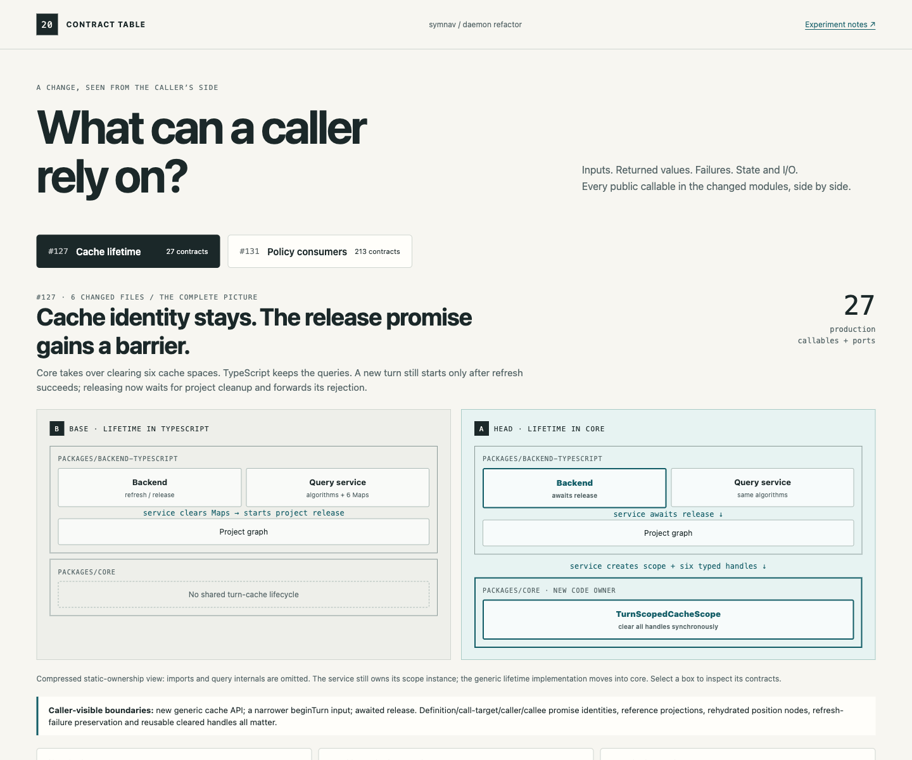 |
Approximately 32 minutes of wall-clock work, including source inspection, extraction, annotation, page construction and browser verification. | Implicit utility constructors and the 20 benchmark callables contribute little to understanding the PR. I retained them to make the inventory rule consistent, but would move them to an appendix in a less exhaustive version. The #131 table is too long to read without its boundary filters; it works as a reference under the decision layer. | README# contract-table ## Entry point Open [index.html](index.html), or run: ```sh open ~/projects/rich-review-v2/experiments/20-contract-table/index.html ``` Everything needed for the page, including source evidence, is local. No server, install, or build is needed to view it. JavaScript is required for the explorer. `#pr131` opens the larger PR; `#call-p131-169` jumps directly to the execution contract. ## Kind page ## Subjects pr-127 and pr-131, each compared against its own supplied base. They are separate steps in the stack, not consecutive revisions of one comparison. ## Declared choices - Role framing: a caller inspecting contracts, including failures and state changes that signatures alone conceal. Assigned angle: every public function before/after. - Box lenses: static package/module ownership and public change surface, with lifecycle boundaries in the worked traces. #127 distinguishes where the lifetime implementation lives from who owns the scope instance. #131 shows that policy inputs change while mechanisms remain in `apps/cli`. - Opening style: before/after in one frame. Clickable package boxes give the lossy intuition before the detailed contracts. - Shape: one pyramid per PR: complete boundary map and decisions → worked operation → callable matrix → exact source and named types. - Navigation: linear reading, box-to-table jumps, boundary/search/surface filters, direct callable links, evidence dialogs, and return links. Closing evidence preserves the reader’s location. - Trust posture: source-grounded explanation. Rationale is marked stated or unexplained. Error-selection changes, retained numeric seams, adapter transformations and changed/deleted test witnesses receive visible decision entries. The page makes no correctness verdict. - Persona: a teammate familiar with the repository but unfamiliar with these mechanisms. - Representations used: package/input diagrams, before/after contract tables, illustrative operation traces, a 39-leaf policy table, paired numbered source, and a file coverage ledger. - Importance rule: caller-visible input, identity, completion, failure and ownership changes first; unchanged contracts and test support remain available for completeness. - Inputs used (beyond bundle): all four supplied worktrees; complete touched TypeScript modules; the existing daemon policy implementation, policy tests and policy record; selected definition/callee/caller implementations for cache semantics. Bundle inputs used were PR bodies and commits, patches, file statistics, and rule/spec excerpts. The precomputed overviews were not used. - Tech: offline HTML/CSS/JavaScript, Node scripts, and the TypeScript parser already installed in the #131 head worktree. No frontend framework or remote assets. Harness: Codex. - Built on earlier experiment(s): none. Earlier experiment contents were ignored; no code, prose or layout was reused. ## What I tried Started with a complete declaration inventory. Comparing only signatures and member bodies hid changes behind unchanged option-type names and private helpers. I added local named-type field comparisons and hand-read behavioral notes. “Same declaration + body” is deliberately separate from unchanged behavior. The result has **240 callable rows**: | Subject | Changed modules | Production callables and ports | Test/benchmark callables | | --- | ---: | ---: | ---: | | #127 | 6 | 27 | 0 | | #131 | 60 | 178 | 35 | “Every public function” means the union of callable declarations in the PR’s changed TypeScript modules: exported functions, public methods/accessors/constructors of exported classes, and exported callable interfaces/type properties. Unchanged members are included. Overloads share an implementation row. Implicit constructors are synthesized for classes without an `extends` clause. Re-export fanout, inherited methods, private methods and imported library APIs are not expanded. Removed non-callable constants are covered by the decisions and full patch. Every changed file, including zero-callable tests and process entries, appears in the coverage ledger. The page surfaces **17 decisions** and embeds **40 checked source anchors**. In particular, it separates #127’s new release barrier from preserved query identities, and #131’s policy plumbing from changed error provenance and earlier parent-side worker-policy validation. The two operation traces are explicitly illustrative; they are not execution recordings. Validation: `verify.cjs` reconciled all 66 changed modules, 240 rows, 467 present before/after sides, source locations, annotations and policy leaves. Playwright Chromium opened the artifact directly through `file://`, exercised every callable evidence view and decision source link, and checked PR switching, named-type changes, filters, empty results, direct links and Escape dismissal. Desktop and 390-pixel mobile layouts were checked; document overflow, page errors and external HTTP requests were absent. Results are saved in [verification.json](verification.json) and [browser-verification.json](browser-verification.json); screenshots are in [screenshots/](screenshots/). Symnav tests were **read, not run**. Statements about tests describe their assertions, not observed test results. Behavioral notes are manual source interpretations, not a whole-program effect analysis. Error cells cover explicit domain branches and named dependencies; callback interfaces cannot supply guarantees their types do not express. No symnav source, branch, or worktree was modified. To regenerate the data with the supplied worktrees present: ```sh cd ~/projects/rich-review-v2/experiments/20-contract-table node extract.cjs > inventory.txt node build.cjs node verify.cjs ``` ## What I would drop Implicit utility constructors and the 20 benchmark callables contribute little to understanding the PR. I retained them to make the inventory rule consistent, but would move them to an appendix in a less exhaustive version. The #131 table is too long to read without its boundary filters; it works as a reference under the decision layer. ## What I would do next Connect each policy leaf to the exact consuming call sites. Add a small real before/after execution capture for promise identity and release/error ordering to complement the source-derived contracts. ## Time spent Approximately 32 minutes of wall-clock work, including source inspection, extraction, annotation, page construction and browser verification. |
| 19 | type-level-only attempt 1: codex |
page | pr-131 — Route daemon thresholds through centralized policy. | Role framing: learner reading the change through the type system. · Box lenses: static package/module structure; change surface, especially required input records and the production/test construction boundary. · Opening style: a before/after picture of optional inputs becoming required policy inputs. The representative signatures are explicitly marked as simplified. · Shape: seven decision summaries, then exact contract families and assignability observations, then a complete declaration inventory and local evidence. · Navigation: linear reading; policy-section links; decision-to-detail links; native expandable comparisons; searchable evidence; source-line anchors with a return that restores the selected file. · Trust posture: separate author-stated reasons from observed declarations. Keep unexplained optionality and invisible implementation/test changes visible at the top. No correctness judgment. · Persona: a TypeScript-capable teammate who knows the repository but not these daemon mechanisms. · Representations used: package and input-boundary diagrams, before/after signatures, contract table, schematic set relationships, an interactive display of actual compiler observations, source excerpts and a test-file manifest. · Importance rule: changes in required construction inputs first; distinguish record assignability from removed field names; give unexplained exceptions and coverage limits space beside the main consolidation decision. · Inputs used (beyond bundle): declaration syntax from both supplied worktrees for all 60 changed TypeScript files; unchanged `daemon-policy.ts`, `policy-testing.ts`, daemon `index.ts` and `program-dependencies.ts`; the head policy record; worktree contributor instructions; immutable Git revision IDs and numstat; the installed TypeScript 6.0.3 compiler for declaration-only observations. From the bundle: `pr.json`, `files.txt`, relevant `repo-rules.md` passages and only the file headers of `diff.patch`. The overview files and implementation diff hunks were not used. · Tech: static HTML/CSS/classic JavaScript. A Node/TypeScript AST extractor produces local data and source views. No runtime libraries, remote assets, fetches, storage or services. · Built on earlier experiment(s): none. Earlier experiments were ignored. · Harness: Codex, one worker; no delegated agents. | 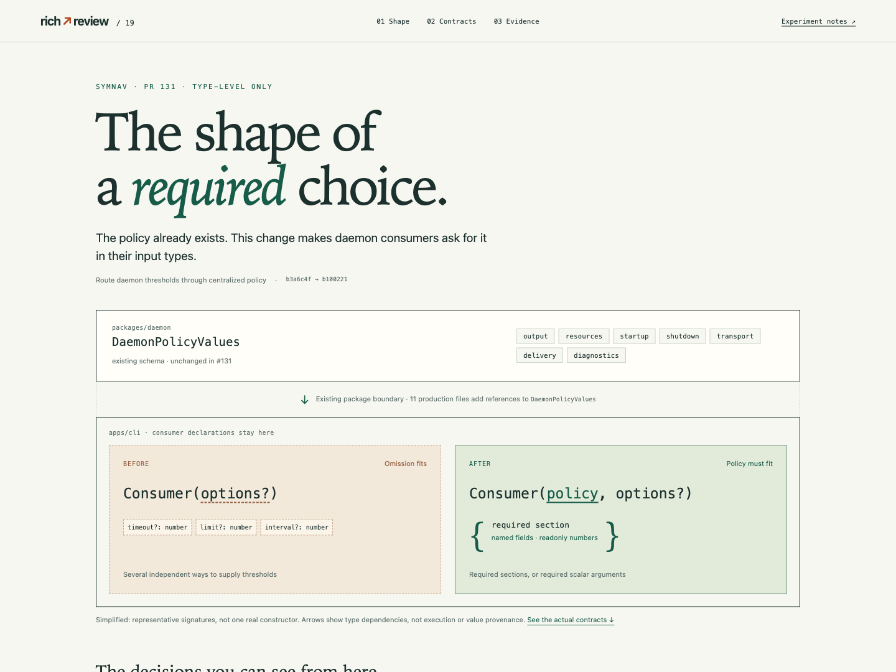 |
About 30 minutes wall-clock, including extraction, page construction, compiler observations and browser inspection. | Most private-field rows from the initial evidence selector. They help establish extraction coverage but compete with the constructor and option contracts; the full downloadable snapshots could carry them alone. The sixteen-row consumer table also repeats some of the section diagrams. | README# type-level-only ## Entry point Open [index.html](index.html), or run: ```sh open ~/projects/rich-review-v2/experiments/19-type-level-only/index.html ``` The page and its evidence work from this folder. No server, installation, internet connection or build is needed to read them. ## Kind page ## Subjects pr-131 — Route daemon thresholds through centralized policy. ## Declared choices - Role framing: learner reading the change through the type system. - Box lenses: static package/module structure; change surface, especially required input records and the production/test construction boundary. - Opening style: a before/after picture of optional inputs becoming required policy inputs. The representative signatures are explicitly marked as simplified. - Shape: seven decision summaries, then exact contract families and assignability observations, then a complete declaration inventory and local evidence. - Navigation: linear reading; policy-section links; decision-to-detail links; native expandable comparisons; searchable evidence; source-line anchors with a return that restores the selected file. - Trust posture: separate author-stated reasons from observed declarations. Keep unexplained optionality and invisible implementation/test changes visible at the top. No correctness judgment. - Persona: a TypeScript-capable teammate who knows the repository but not these daemon mechanisms. - Representations used: package and input-boundary diagrams, before/after signatures, contract table, schematic set relationships, an interactive display of actual compiler observations, source excerpts and a test-file manifest. - Importance rule: changes in required construction inputs first; distinguish record assignability from removed field names; give unexplained exceptions and coverage limits space beside the main consolidation decision. - Inputs used (beyond bundle): declaration syntax from both supplied worktrees for all 60 changed TypeScript files; unchanged `daemon-policy.ts`, `policy-testing.ts`, daemon `index.ts` and `program-dependencies.ts`; the head policy record; worktree contributor instructions; immutable Git revision IDs and numstat; the installed TypeScript 6.0.3 compiler for declaration-only observations. From the bundle: `pr.json`, `files.txt`, relevant `repo-rules.md` passages and only the file headers of `diff.patch`. The overview files and implementation diff hunks were not used. - Tech: static HTML/CSS/classic JavaScript. A Node/TypeScript AST extractor produces local data and source views. No runtime libraries, remote assets, fetches, storage or services. - Built on earlier experiment(s): none. Earlier experiments were ignored. - Harness: Codex, one worker; no delegated agents. ## What I tried I extracted explicit declarations before designing the page. The traversal does not descend into executable bodies or initializer expressions. Default presence records optionality; inferred types remain unknown. Overloads stay separate, with implementation signatures distinguished from caller overloads. I considered treating deleted knobs as type narrowing, then discarded that framing: removing the required workspace `memoryCapBytes` field widens the option record when its referenced dependency types are held fixed. The page separates requiredness, vocabulary, record shape and primitive value domains instead. The interactive examples use computed conditional-type results. They demonstrate both the newly required output slice and the continued acceptance of structural lookalikes, negative numeric literals and extra properties on named values. They do not simulate daemon behavior. The browser tool blocks file URLs, so I inspected the page using a temporary loopback server and stopped it after verification. A source-navigation check also led me to preserve the selected evidence file when returning from a declaration page. ## What I would drop Most private-field rows from the initial evidence selector. They help establish extraction coverage but compete with the constructor and option contracts; the full downloadable snapshots could carry them alone. The sixteen-row consumer table also repeats some of the section diagrams. ## What I would do next Pair this view with a separately identified implementation/test audit to cover the decisions that declarations cannot reveal. Keep its claims separate so the additional evidence does not masquerade as a type guarantee. ## Time spent About 30 minutes wall-clock, including extraction, page construction, compiler observations and browser inspection. ## Scope and the hard-rule limitation The assigned “types added/narrowed/widened; no bodies” angle cannot fully satisfy playbook rule 8’s requirement to surface every decision, including weakened/deleted assertions and unrequested implementation changes. This is a known limitation of the method, not evidence that those changes are absent. The opening layer and the evidence boundary both state it. The page records all four author-stated PR decisions. It shows the optional stored-output capacity as unexplained and distinguishes the general reason for required policy from the missing per-consumer explanation for slice width. It does not claim to have established every implementation decision or preserved test assertion. No implementation or test-assertion body was used as evidence. The AST parser necessarily reads complete source files, but extraction never traverses function bodies or initializer expressions, and no such code appears in the generated source views. No symnav tests were run. Both source worktrees remained clean; no symnav file or branch was modified, committed, pushed or rebased. ## Reading the type observations accurately - “Required” establishes the presence and declared shape of an input. It does not establish validation, actual value flow, snapshot origin or runtime freezing. - The shared policy schema is unchanged: seven sections, 39 readonly numeric fields. The migration changes consumers’ dependencies on that schema. - Workspace assignability holds the referenced dependency types fixed with shared opaque stand-ins. It isolates option-field changes; it is not a compatibility test of class instances across revisions. - Conditional-type examples compare named structural types. Fresh-object-literal excess-property checks are a separate mechanism and were not executed in these examples. - Default expressions and inferred types are withheld. The inspection records are not emitted `.d.ts` files. - “Assignable” is a compiler observation about a candidate type, not an approval or rejection of the PR. The page stores no reviewer input. ## Validation - TypeScript 6.0.3 in strict mode evaluated 21 conditional-type observations with zero diagnostics. - The extraction contains 120 changed declaration records across 60 changed files. Sixteen of nineteen changed production files have declaration changes; 23 changed test files remain outside assertion-level analysis. - The artifact audit inspected 2,790 records, preserved 20 overload signatures across both revisions, and found no executable bodies or initializers in those records. - All 128 local declaration source views and 3,046 generated evidence links/fragment targets passed the static audit. - Desktop 1440 × 1080 and mobile 390 × 844 were inspected. All six scenario controls, evidence filters, empty states, source-line navigation and return navigation worked; no document overflow or final browser console errors/warnings were found. - JavaScript syntax checks passed. Screenshots are in [screenshots/](screenshots/). Detailed records: [verification.md](evidence/verification.md), [artifact-audit.json](evidence/artifact-audit.json), [browser-checks.json](evidence/browser-checks.json), [compiler-observations.json](evidence/compiler-observations.json). ## Reproduce the evidence From this experiment folder, with the supplied worktrees and their TypeScript installation still present: ```sh node scripts/extract.cjs node scripts/check-contracts.cjs node scripts/build.cjs node scripts/validate-artifact.cjs ``` These commands write only inside this experiment folder. The built page does not need the worktrees to remain available. The comparison uses base `b3a6c4fa5dcf96223765aa147a9e094cd4a51b0e` and head `b100221db48754656328391b878299c5a0bab443`. Source views include these revision IDs and original declaration line numbers. Author intent is preserved locally in [pr-intent.md](evidence/pr-intent.md), [architecture-excerpts.md](evidence/architecture-excerpts.md) and [policy-record.md](evidence/policy-record.md). |
| 18 | negative-space attempt 1: claude-opus → attempt 2: claude-opus → attempt 3: codex |
page | pr-148 only. Base `ba53c8e1662fd86d198b95321c90d9c9bef10184`; head `20838f8dbf413e04767543eb2380d0d114da6c60`. | Role framing: Teach the change through what it leaves alone, and make the different meanings of “untouched” explicit. · Box lenses: Source ownership and the active CLI call graph; host/package contracts; ownership authority; the time interval consumed by a navigation turn. · Opening style: A marked call-path metaphor followed by a diagram with an intentionally missing CLI-to-DaemonClient connection. The base/head control shows package staging while the shipped route remains. · Shape: One page with a complete eight-part decision outline, eight corresponding chapters, then source evidence reachable at the point of explanation. · Navigation: Read top to bottom, use the numbered rail, jump from diagram elements or outline entries, and return through each chapter's Outline link. Source drawers close with Escape and restore focus. · Trust posture: Attribute stated reasons to the PR, architecture contract, and recorded purposes; mark unexplained constructor and test choices. Distinguish byte equality, textual relocation, intended behavior preservation, and deferred behavior. Tests specify choices without necessarily explaining their reasons. No correctness verdict or claim that symnav tests passed. · Persona: A reviewer unfamiliar with this daemon stack who needs to understand which boundary moved and what still runs. · Representations used: Ownership diagram with snapshot comparison; unchanged-directory counts; an interactive 38-file freeze inventory; host/daemon exchange diagram; protocol and policy comparison; idle timeline with two scenarios and a separate mobile rendering; registry authority diagram; seven routing walkthroughs; replay branches; a test evidence ledger; embedded numbered source excerpts and per-file diffs. · Importance rule: Give exclusions and test changes the same weight as the new facade. A file's relocation volume does not determine its importance. · Inputs used (beyond bundle): Both supplied worktrees, immutable Git objects at the pinned commits, selected commit diffs, the head contributor guide, architecture and follow-up specifications, and changed source/test files. From the bundle: `pr.json`, `files.txt`, `diff.patch`, and relevant `repo-rules.md` sections. The generated overview files were not used. No external conversation transcript or original agent request was available. · Tech: Plain HTML, CSS, JavaScript, inline SVG; Python standard library and read-only Git commands for evidence generation. System fonts; no remote assets, frameworks, storage, analytics, or comment controls. · Built on earlier experiment(s): none. Earlier experiments were deliberately not read or reused. No sub-agents were spawned. | 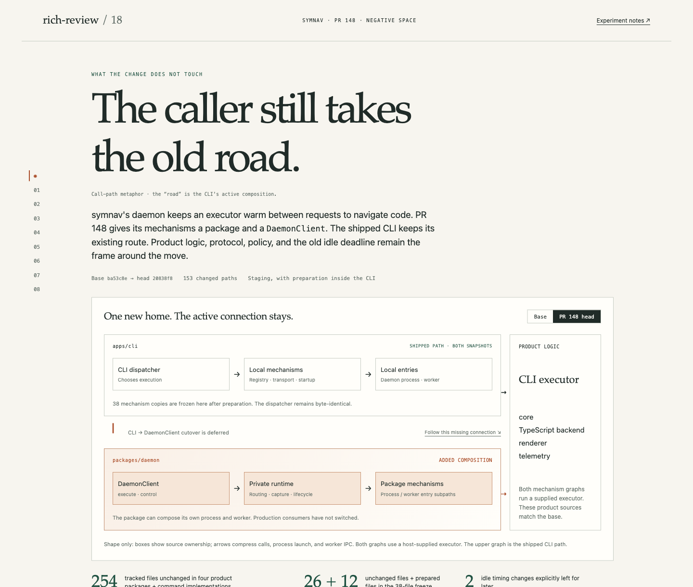 |
About 30 minutes, including source investigation, implementation, browser checks, and documentation. | The seven-file relocation table is the least essential representation. It is useful for checking the explanation, but duplicates some work better served by the source drawers. The complete outline is intentionally dense; it is the costliest part to read. | README# negative-space ## Entry point Open [index.html](index.html), or run: ```sh open ~/projects/rich-review-v2/experiments/18-negative-space/index.html ``` No installation, build, server, or network connection is needed. Keep `style.css`, `app.js`, and `evidence.js` beside the HTML. JavaScript enables the outline, comparisons, and evidence drawers. GitHub links are optional exits from the evidence layer. ## Kind page ## Subjects pr-148 only. Base `ba53c8e1662fd86d198b95321c90d9c9bef10184`; head `20838f8dbf413e04767543eb2380d0d114da6c60`. ## Declared choices - Role framing: Teach the change through what it leaves alone, and make the different meanings of “untouched” explicit. - Box lenses: Source ownership and the active CLI call graph; host/package contracts; ownership authority; the time interval consumed by a navigation turn. - Opening style: A marked call-path metaphor followed by a diagram with an intentionally missing CLI-to-DaemonClient connection. The base/head control shows package staging while the shipped route remains. - Shape: One page with a complete eight-part decision outline, eight corresponding chapters, then source evidence reachable at the point of explanation. - Navigation: Read top to bottom, use the numbered rail, jump from diagram elements or outline entries, and return through each chapter's Outline link. Source drawers close with Escape and restore focus. - Trust posture: Attribute stated reasons to the PR, architecture contract, and recorded purposes; mark unexplained constructor and test choices. Distinguish byte equality, textual relocation, intended behavior preservation, and deferred behavior. Tests specify choices without necessarily explaining their reasons. No correctness verdict or claim that symnav tests passed. - Persona: A reviewer unfamiliar with this daemon stack who needs to understand which boundary moved and what still runs. - Representations used: Ownership diagram with snapshot comparison; unchanged-directory counts; an interactive 38-file freeze inventory; host/daemon exchange diagram; protocol and policy comparison; idle timeline with two scenarios and a separate mobile rendering; registry authority diagram; seven routing walkthroughs; replay branches; a test evidence ledger; embedded numbered source excerpts and per-file diffs. - Importance rule: Give exclusions and test changes the same weight as the new facade. A file's relocation volume does not determine its importance. - Inputs used (beyond bundle): Both supplied worktrees, immutable Git objects at the pinned commits, selected commit diffs, the head contributor guide, architecture and follow-up specifications, and changed source/test files. From the bundle: `pr.json`, `files.txt`, `diff.patch`, and relevant `repo-rules.md` sections. The generated overview files were not used. No external conversation transcript or original agent request was available. - Tech: Plain HTML, CSS, JavaScript, inline SVG; Python standard library and read-only Git commands for evidence generation. System fonts; no remote assets, frameworks, storage, analytics, or comment controls. - Built on earlier experiment(s): none. Earlier experiments were deliberately not read or reused. No sub-agents were spawned. ## What I tried I began by looking for untouched directories. That produced a useful frame: all 254 tracked files in core, backend, renderer, telemetry, and command implementations match the base. But it could not explain the migration on its own. The compatibility freeze supplied the stronger experiment. Its 38 tiles divide into 26 byte-identical files and 12 files edited or renamed before freezing. That distinction became the opening: a frozen staging graph is different evidence from an unchanged implementation or an unchanged production caller. I also tried treating copied mechanisms as simple relocation. A textual comparison rejected that description for the completion spool: it gains a local codec to remove a CLI output dependency. The page keeps that exception. Six other selected bodies match after the disclosed import/whitespace normalization; the table makes no semantic-equivalence claim. The idle example uses source-derived arithmetic rather than a daemon simulation. It shows a five-minute and a forty-minute turn against the existing thirty-minute acceptance deadline, alongside the explicitly deferred completion reset. The separate readiness reset appears in the outline and chapter as another deferred behavior. Finally, I traced the test movement instead of treating renamed tests as unchanged coverage. The outline surfaces the deleted CLI entry tests, replaced CLI worker path, restored executor-factory version check, removed duration assertions, retired lint checks, and serial runner setting. No second page was needed; the initial all-unchanged framing was revised in place. ## What I would drop The seven-file relocation table is the least essential representation. It is useful for checking the explanation, but duplicates some work better served by the source drawers. The complete outline is intentionally dense; it is the costliest part to read. ## What I would do next Watch a reader explain why the production route remains local and why only 26 frozen files match the base. Then test whether the long-turn example makes the deferred completion reset predictable without opening code. ## Time spent About 30 minutes, including source investigation, implementation, browser checks, and documentation. ## Evidence and validation Rebuild [evidence.json](evidence.json) and its browser-ready twin with this command from the rich-review-v2 root: ```sh python3 experiments/18-negative-space/audit.py ``` The audit reads Git objects, not current build output. It asserts directory path/blob equality, reproduces the 38-file compatibility hash, counts the 37 relocated mechanism tests, and checks that the four edited e2e files only change helper names and formatting. All 93 e2e snapshots and all 295 shared testing files match. The script writes only these two evidence files in this experiment directory. [validation.json](validation.json) records the browser checks: both snapshot states, 41 nonempty source drawers with focus restoration, changed/unchanged freeze tiles, seven route scenarios, both idle scenarios, working internal anchors, and no horizontal overflow at 1440, 390, or 320 pixels. The page produced no JavaScript errors; `node --check` passed. Five [screenshots](screenshots/) capture desktop and mobile views. Symnav tests and before/after daemon workloads were not run. The worktrees and symnav branches were not modified. All behavior claims are scoped to stated intent, inspected source, or explicitly marked illustrations; source equality is not runtime parity. Operational `harness.txt` and `worker-attempt-*.log` files, if present, belong to the surrounding runner and are not page dependencies. |
| 17 | executable-before-after attempt 1: codex |
tool + page | pr-127 — Scope semantic caches to one turn. No other PRs. | Role framing: experimentalist; let the reader inspect observations from actual execution. · Box lenses: static package ownership and runtime cache/promise lifetime. The service owns the scope instance; core owns its implementation. Separate process columns are the experiment's isolation, not symnav's production topology. · Opening style: before/after ownership in one frame, followed by a complete decision map. The default worked example holds project release open and exposes the changed backend promise boundary. · Shape: before/after diptych → executable laboratory → exact source and observation evidence. · Navigation: linear reading, high-level links into scenario recordings, checkpoint selection, cache/result dialogs, decision-to-source links with base/head switching, and return links. Closing a source dialog returns to the page. · Trust posture: compare stated intent with measured behavior; mark missing rationale explicitly. No correctness verdict, scoring, approvals, or comment storage. · Persona: a teammate familiar with the repository but unfamiliar with semantic query lifetime. · Representations used: ownership boxes, lifecycle strips, live base/head executions, recorded checkpoints, six-map occupancy displays, exact object-identity tables, actual result JSON, head-only generic core probes, and numbered source snapshots. · Importance rule: show the ownership change and awaited release boundary; make preserved behavior visible so equal query outputs remain informative. Surface unexplained API choices and test decisions explicitly. · Inputs used (beyond bundle): both assigned worktrees' source and compiled output; Git revision/status and six commit subjects; real fixture executions; focused base/head semantic-service tests and head core-scope tests. From the bundle, used `pr.json`, `diff.patch`, `files.txt`, and `repo-rules.md`. Read the philosophy and playbook. Did not use the precomputed overview files or external web sources. · Tech: vanilla HTML/CSS/JavaScript; Node HTTP server and child-process runner; the worktrees' existing TypeScript compiler, ts-morph, and symnav implementations. No artifact npm install, CDN, font service, or remote API. Harness: Codex. · Built on earlier experiment(s): none. Earlier experiments were intentionally ignored. | 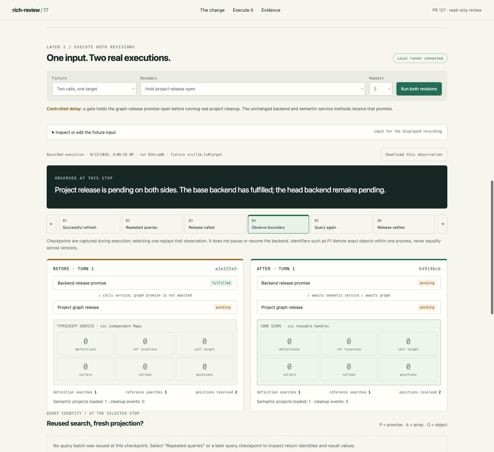 |
Approximately 27 minutes, including source investigation, implementation, execution captures, focused tests, browser checks, and this README. | Full-file source dialogs are more material than most readers need. Highlighted function slices with an explicit full-file exit would make the evidence easier to inspect. The overload preset adds fidelity, but the default and unresolved-position fixtures carry most of the explanation. | README# executable-before-after ## Entry point Open [index.html](index.html) directly. All 18 recorded comparisons, source drilldowns, and checkpoint controls work offline. For fresh execution of editable fixture inputs, run this one command: ```sh node ~/projects/rich-review-v2/experiments/17-executable-before-after/server.mjs ``` Then open [http://127.0.0.1:4717](http://127.0.0.1:4717). The server builds both assigned worktrees before serving. It uses the existing Node, pnpm, and worktree dependencies. Ctrl-C stops it. The validation server has already been stopped. ## Kind tool + page ## Subjects pr-127 — Scope semantic caches to one turn. No other PRs. ## Declared choices - Role framing: experimentalist; let the reader inspect observations from actual execution. - Box lenses: static package ownership and runtime cache/promise lifetime. The service owns the scope instance; core owns its implementation. Separate process columns are the experiment's isolation, not symnav's production topology. - Opening style: before/after ownership in one frame, followed by a complete decision map. The default worked example holds project release open and exposes the changed backend promise boundary. - Shape: before/after diptych → executable laboratory → exact source and observation evidence. - Navigation: linear reading, high-level links into scenario recordings, checkpoint selection, cache/result dialogs, decision-to-source links with base/head switching, and return links. Closing a source dialog returns to the page. - Trust posture: compare stated intent with measured behavior; mark missing rationale explicitly. No correctness verdict, scoring, approvals, or comment storage. - Persona: a teammate familiar with the repository but unfamiliar with semantic query lifetime. - Representations used: ownership boxes, lifecycle strips, live base/head executions, recorded checkpoints, six-map occupancy displays, exact object-identity tables, actual result JSON, head-only generic core probes, and numbered source snapshots. - Importance rule: show the ownership change and awaited release boundary; make preserved behavior visible so equal query outputs remain informative. Surface unexplained API choices and test decisions explicitly. - Inputs used (beyond bundle): both assigned worktrees' source and compiled output; Git revision/status and six commit subjects; real fixture executions; focused base/head semantic-service tests and head core-scope tests. From the bundle, used `pr.json`, `diff.patch`, `files.txt`, and `repo-rules.md`. Read the philosophy and playbook. Did not use the precomputed overview files or external web sources. - Tech: vanilla HTML/CSS/JavaScript; Node HTTP server and child-process runner; the worktrees' existing TypeScript compiler, ts-morph, and symnav implementations. No artifact npm install, CDN, font service, or remote API. Harness: Codex. - Built on earlier experiment(s): none. Earlier experiments were intentionally ignored. ## What I tried The real runner imports each worktree's compiled backend. It prepares in-memory TypeScript projects, repeats all query kinds, reads the actual six maps, and records the service's return identities. Backend refresh and release run through their unchanged methods. Recording the service boundary matters: the backend's async wrappers do not expose the same promise identity as the directly returned service queries. Concrete project release is retained as a control. Its TypeScript cleanup is synchronous on these revisions, so ordinary completion alone does not expose the changed await chain. A controlled graph-release gate makes that chain observable without rewriting the backend or cache algorithms. A rejection fixture makes the error boundary observable too. Reimplementing an old/new cache in browser JavaScript was considered and dropped: it would demonstrate our implementation rather than this PR. The fixtures cover repeated calls, an unresolved call position, and overloads. Six scenarios run against each: successful refresh, failed refresh, concrete release, held release, rejected release, and synchronous/asynchronous query failure. The failed refresh uses a throwing extractor during real preparation and rollback; the asynchronous query failure uses a rejecting `ensureFiles` seam. Every controlled input is labeled in the page. The generic core probes execute the actual new scope with undefined values, isolated handles, throwing factories, rejected promises, an old promise settling after a new turn, and repeated release. They are explicitly head-only because there is no equivalent public abstraction in the base. No fictional old undefined-value failure is shown. The initial worked-example narration assumed the fixture's target existed. That fixed success wording was dropped for failing edited inputs after exercising the editor. The page now displays the real failures. The broader comparison deliberately avoids a timing race: startup and compiler-library loading would dominate these small probes. ## What I would drop Full-file source dialogs are more material than most readers need. Highlighted function slices with an explicit full-file exit would make the evidence easier to inspect. The overload preset adds fidelity, but the default and unresolved-position fixtures carry most of the explanation. ## What I would do next Ask a fresh reader to explain the difference between clearing entries, closing handles, and awaiting project cleanup after using the page. Then test whether the identity table adds understanding beyond the cache occupancy and release states. ## Time spent Approximately 27 minutes, including source investigation, implementation, execution captures, focused tests, browser checks, and this README. ## What the recorded runs establish The 18 comparisons execute both supplied revisions: 36 separate backend executions. For the bundled fixtures, the actual semantic query outputs match. Same-turn identity reuse and clearing after successful refresh remain visible in both versions. With project release held open, the base backend promise has fulfilled while the head backend promise remains pending. Both have synchronously emptied every cache. Rejecting that controlled project promise reaches the head backend with the same Error object; the base backend had already fulfilled. A later query can refill the handles in both versions. These observations explain the lifetime decision; they are not a PR verdict or a production scheduling claim. The top-level map includes all six changed files' decisions: core lifetime ownership and export, six isolated spaces, presence checks for undefined, preserved values and failure behavior, successful-refresh timing, awaited release, narrowed `beginTurn` input, reusable handles, and ten additive tests. Signature narrowing and the minimal handle/clear API are marked unexplained. The PR's preservation goal is distinguished from the absent reason for the original failure policy. No existing test assertion was deleted or weakened in the supplied diff. ## Execution fidelity and limits - Queries parse and analyze the fixture's TypeScript; the fixture is not evaluated as an application program. No source fixture files are written into symnav. - Cache counts are read from emitted private fields, and search counts use the existing observer. This harness is deliberately specific to these revisions' internal structure. - A graph-release wrapper records the returned promise. Controlled modes gate that promise before actual project cleanup. Rejection therefore prevents cleanup from being reached. An observer rejection handler keeps the ignored base promise from crashing the capture process; it does not change what the backend promise does. - The failed-refresh scenario changes one in-memory source revision, then throws from extraction during real state preparation. The rejected semantic scenario changes only the `ensureFiles` seam. The reference-discovery failure uses a real absent symbol. - Checkpoint controls replay completed observations. Fresh execution happens when “Run both revisions” is pressed; the UI does not pause a running backend. Recorded and fresh runs are visibly distinguished. - Object labels such as `P1` denote exact identity inside one process. Matching labels across revisions do not imply object equality across processes. - Source snapshots are frozen at the supplied base/head revisions. Live runs read the assigned worktrees at execution time and record their actual revisions, tracked source state, and hashes of key compiled modules. Transitive dependencies are not individually hashed. - The artifact does not measure memory retention, speed, daemon scheduling, or full-CLI output. The full workspace CI suite was not run. Only build output and dependency test caches were permitted in the worktrees; tracked source remained unchanged. - Edits and live observations stay in browser memory. The only export is an explicit download of fixture inputs, observations, and provenance; there is no review-comment storage. ## Verification Both worktrees built successfully. The focused upstream tests passed: base semantic service 5/5; head semantic service 11/11; head core scope 4/4. Both worktrees remained clean. The capture tool checks all 18 comparison records. Playwright checked live execution, changed source, changed repeat count, absent-symbol output, input validation, source navigation, result/map inspection, JSON export, offline opening, and mobile layout. Details are in [evidence/validation.md](evidence/validation.md). [evidence/observations.json](evidence/observations.json) contains capture checks, harness hashes, and a complete rejected-release example. ## Files and reproduction | File | Purpose | | --- | --- | | [index.html](index.html), [app.js](app.js), [style.css](style.css) | Review page and interactions | | [runner.mjs](runner.mjs) | Real backend execution and observation in one revision | | [server.mjs](server.mjs) | Local page server, fixture validation, and paired child processes | | [capture.mjs](capture.mjs) | Execute the fixture matrix, check observations, and generate the offline bundle | | [captured.js](captured.js) | All 18 recordings plus local source, intent, and diff snapshots | | [fixtures/presets.json](fixtures/presets.json) | Three inspectable fixture projects | | [brief.md](brief.md) | Copy of the received brief | | [screenshots/01-laboratory.png](screenshots/01-laboratory.png) | The executable comparison | | [screenshots/02-overview.png](screenshots/02-overview.png) | Ownership and opening layer | | [screenshots/03-mobile.png](screenshots/03-mobile.png) | Mobile opening | After building the worktrees, regenerate the offline data with `node capture.mjs` from this folder. It writes only inside this experiment. To use a different local port, set `EXPERIMENT_PORT`, for example `EXPERIMENT_PORT=4718 node server.mjs`. The page itself has no external dependencies and can be copied with its adjacent files for offline inspection. |
| 16 | drag-the-box attempt 1: claude-opus → attempt 2: claude-opus → attempt 3: codex |
page | pr-131 only: **Route daemon thresholds through centralized policy**. | Role framing: learner practicing counterfactual reasoning. The artifact explains dependency consequences and the PR’s decisions; it supplies no correctness verdict. · Box lenses: physical packages and source modules; separately, CLI process / daemon process / worker thread. The first lens is manipulable; the second explains where policy values are consumed. · Opening style: before/after ownership picture, followed by dragging a module while its callers and dependencies remain attached. · Shape: a package workbench followed by a complete decision map, then mechanism and source evidence. · Navigation: linear sections 01–04; nonlinear class → imports / callers / actual PR import changes, class → decision, decision → exact source, policy section → recorded values. Dialog Back and Close preserve the reader’s place. · Trust posture: explanatory with an explicit rationale audit. Stated decisions and unexplained test deletions, fixture transformations, error selection, and source-text enforcement all have visible cards. · Persona: teammate who knows the repository but not this daemon corner. · Representations used: draggable source-module cards, package zones, grouped dependency arrows, before/after ownership diagram, process topology, nested recovery-attempt diagram, policy tables, decision cards, exact numbered source, and exact patches. · Importance rule: changed authority and boundary crossings first; distinct deadline/recovery scopes next; test migration and unexplained choices receive their own root-level cards. · Inputs used (beyond bundle): both read-only source trees, including production and test imports; their AGENTS.md, ESLint boundary rules, package manifests and tsconfigs; the existing daemon policy record, architecture functional spec, and central policy tests. The bundle’s PR body, six commits, full patch, file statistics, and overview files were read. The overview files contained headings without usable symbol output. · Tech: dependency-free HTML/CSS/JavaScript at runtime; TypeScript 6.0.3 syntax-tree extraction during generation; Node assertions and Playwright Chromium for artifact verification. · Built on earlier experiment(s): none. Other experiment folders were not read. The orchestrator-provided brief and logs already in this assigned folder were preserved. · Assigned angle: move a class to another package and see which imports break. · Harness: Codex; no sub-agents spawned. | 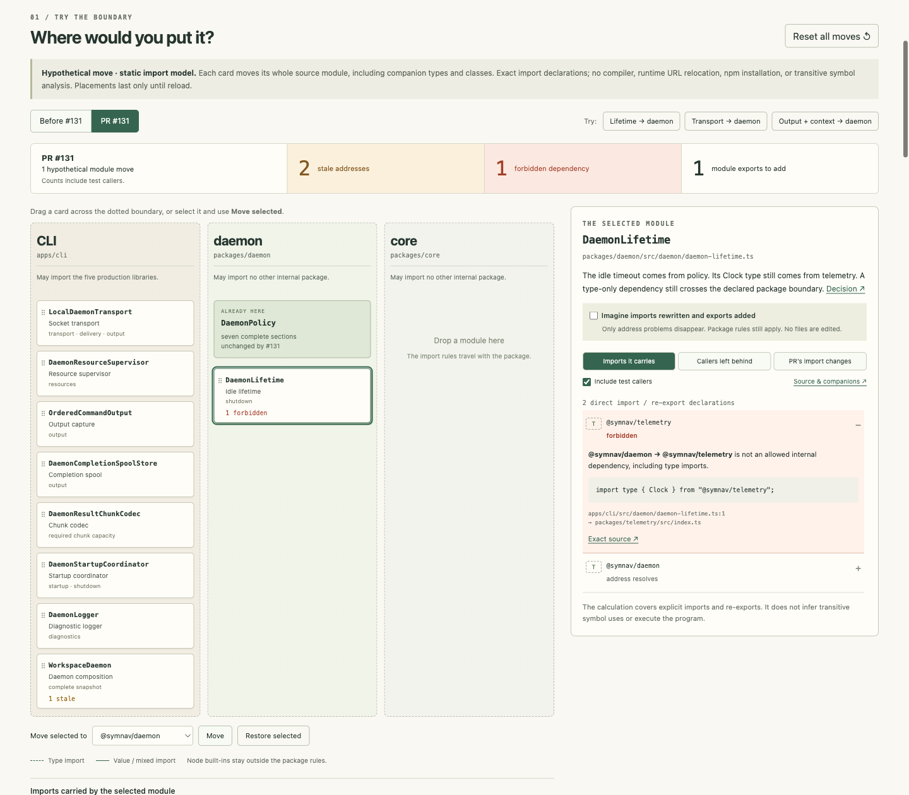 |
About 31 minutes of wall-clock work in this attempt. | The nine initial cards make the first board taller than necessary; five would probably teach the first lesson faster. The 6.7 MiB data snapshot also includes more source than most readers will inspect. It earns reproducibility here, but unrelated test bodies could be trimmed for distribution. | README# drag-the-box ## Entry point Open [index.html](index.html), or run: ```sh open ~/projects/rich-review-v2/experiments/16-drag-the-box/index.html ``` Everything runs from the folder, including source evidence. No server, install, network connection, or API key is needed. Desktop dragging has a select-and-move alternative for keyboard and narrow-screen use. ## Kind page Interactive package-move workbench with an extracted import model. ## Subjects pr-131 only: **Route daemon thresholds through centralized policy**. - Base: `b3a6c4fa5dcf96223765aa147a9e094cd4a51b0e` - Head: `b100221db48754656328391b878299c5a0bab443` ## Declared choices - Role framing: learner practicing counterfactual reasoning. The artifact explains dependency consequences and the PR’s decisions; it supplies no correctness verdict. - Box lenses: physical packages and source modules; separately, CLI process / daemon process / worker thread. The first lens is manipulable; the second explains where policy values are consumed. - Opening style: before/after ownership picture, followed by dragging a module while its callers and dependencies remain attached. - Shape: a package workbench followed by a complete decision map, then mechanism and source evidence. - Navigation: linear sections 01–04; nonlinear class → imports / callers / actual PR import changes, class → decision, decision → exact source, policy section → recorded values. Dialog Back and Close preserve the reader’s place. - Trust posture: explanatory with an explicit rationale audit. Stated decisions and unexplained test deletions, fixture transformations, error selection, and source-text enforcement all have visible cards. - Persona: teammate who knows the repository but not this daemon corner. - Representations used: draggable source-module cards, package zones, grouped dependency arrows, before/after ownership diagram, process topology, nested recovery-attempt diagram, policy tables, decision cards, exact numbered source, and exact patches. - Importance rule: changed authority and boundary crossings first; distinct deadline/recovery scopes next; test migration and unexplained choices receive their own root-level cards. - Inputs used (beyond bundle): both read-only source trees, including production and test imports; their AGENTS.md, ESLint boundary rules, package manifests and tsconfigs; the existing daemon policy record, architecture functional spec, and central policy tests. The bundle’s PR body, six commits, full patch, file statistics, and overview files were read. The overview files contained headings without usable symbol output. - Tech: dependency-free HTML/CSS/JavaScript at runtime; TypeScript 6.0.3 syntax-tree extraction during generation; Node assertions and Playwright Chromium for artifact verification. - Built on earlier experiment(s): none. Other experiment folders were not read. The orchestrator-provided brief and logs already in this assigned folder were preserved. - Assigned angle: move a class to another package and see which imports break. - Harness: Codex; no sub-agents spawned. ## What I tried I began with literal class relocation in mind. A class-only simulation would silently leave private collaborators and co-located types behind, so the implemented move unit is the entire source module. That approximation is stated beside the board, and the evidence drawer lists its companions. I extracted the actual imports before and after the PR instead of inventing example dependencies. Three distinct effects are visible: stale relative addresses, prohibited package directions, and target modules needing a public entry-point plan. An “imagine imports rewritten and exports added” control removes only the address/exposure flags; it cannot erase package rules. I considered a live compiler sandbox but did not implement one. This version can open offline and lets the reader add dependency modules to the board and move several together. It explicitly stops short of compiler, runtime-URL, and transitive-symbol claims. The useful discovery was that this PR performs no physical class move at all. The codec loses its import of a spool-owned capacity constant, but retains a CLI protocol type. The lifetime module adds a policy type while retaining telemetry’s Clock. The interaction makes those remaining dependencies tangible. I also read the changed tests and helpers. Deleted resource-policy tests, adjusted spill thresholds, helper normalization/setup, later-attempt error selection, and the meta-test’s string denylist are surfaced beside the stated architectural decisions. ## What I would drop The nine initial cards make the first board taller than necessary; five would probably teach the first lesson faster. The 6.7 MiB data snapshot also includes more source than most readers will inspect. It earns reproducibility here, but unrelated test bodies could be trimmed for distribution. ## What I would do next Add an isolated compiler replay for a small number of hand-picked moves, comparing its diagnostics to the static model. Then try true per-symbol extraction with an explicit list of companions carried along. ## Time spent About 31 minutes of wall-clock work in this attempt. ## A short route through the artifact 1. Drag **DaemonLifetime** from CLI to daemon. Two caller addresses become stale; its type-only telemetry import violates daemon’s package rule. 2. Imagine the address edits. The telemetry dependency remains. Inspect the exact `Clock` import. 3. Move **DaemonResultChunkCodec** to daemon and switch revisions. Its forbidden outgoing declarations fall from two to one: the spool constant import disappears in #131, but the protocol type stays. 4. Try **Output + context → daemon**. Moving both modules preserves their relative import and removes that CLI dependency in this model, while callers still need address changes. 5. Read the eleven visible decision cards. Each deeper explanation adds implementation and evidence to a choice already named on its card. ## Model contract The extractor scans 417 base and 424 head TypeScript files, excluding fixture directories, declarations, dependencies, and build output. It records 1,875 → 1,929 static import/re-export declarations. Every relative declaration resolves in its original snapshot. - A card moves `apps/cli/src/…` to `packages/daemon/src/…` or `packages/core/src/…`, preserving the remaining folder structure. Classes, interfaces, aliases, and private collaborators in the same file travel together. Tests remain in their original locations. - One import or re-export declaration is one edge, even if it names multiple symbols. Separate declarations to the same file count separately. Type-only edges count toward package direction. - The address calculation compares the written relative path at its virtual new location against its original target’s virtual location. Co-moving modules can preserve an existing relative path. - The package calculation follows the repository’s declared internal dependency matrix. Type erasure does not remove this architectural dependency. - A cross-package relative import produces an entry-point requirement. The display counts distinct target modules, not the number of symbols to export. Some requirements point in a forbidden direction; exposing names alone cannot make those imports allowed. - Rewriting is an explicit assumption: root exports and supporting build configuration are imagined. No source, package manifest, or tsconfig is edited. - Node and other external imports are displayed but are outside the internal package-rule calculation. The model does not install dependencies, follow barrel symbols transitively, detect cycles, check actual exported-name availability, or relocate dynamic imports and runtime entry URLs. Runtime-load expressions are called out on the selected module. - Zero model flags is not a build result or a correctness judgment. The decision map is the top conceptual layer, including all unexplained details. The workbench demonstrates its boundary consequences. Policy leaves and exact source are deeper fidelity on those same decisions. ## Evidence and coverage All 60 changed paths are linked to decisions and their exact bundle patches. The seven required policy sections are expandable, with the existing record’s values and reasons. The source drawer includes both snapshots and the original PR body/commits, so GitHub is unnecessary. There are seven stated decision cards and four unexplained cards. The latter cover test retirement, fixture/helper transformations, changed error selection, and the enforcement mechanism. Reasons are attributed to the supplied PR and checked-in records; no author rationale is inferred from code. The existing central resource-policy tests are shown as context for the deleted CLI suite. They predate #131 and are not claimed to be identical coverage: the smallest central derivation-table input differs from the deleted table. ## Verification Run the artifact checks: ```sh node ~/projects/rich-review-v2/experiments/16-drag-the-box/verify.cjs ``` Nine checks passed: exact PR/delta identity, every declaration’s source/line anchor, unchanged-location baselines, telemetry type dependency, the additional daemon dependency when lifetime moves to core, the codec’s before/after difference, a two-module move, reset semantics, and every authored evidence reference. Results are in [verification.json](verification.json). Playwright checks passed for native dragging, keyboard card selection, the move control, imagined repairs, revision switching, callers with/without tests, import changes, adding dependencies, accumulated moves, decision/source/back navigation, policy tables, changed-path filtering, exact patches, reset, and reload. No JavaScript errors, HTTP requests, or horizontal overflow at 1440 px and 390 px were observed. Results are in [browser-verification.json](browser-verification.json); [screenshots](screenshots/) include the active drag result, opening, and mobile layout. Symnav source was untouched. No symnav build or test suite was run; these checks validate the teaching artifact. ## Files | File | Purpose | | --- | --- | | `index.html`, `style.css`, `app.js` | Offline interaction, diagrams, and evidence navigation | | `content.js` | Authored decisions, specimen explanations, and evidence anchors | | `model.js` | Virtual placement and import-impact calculation | | `data.js` | Captured base/head source and imports, documents, PR metadata, and patches | | `extract.cjs` | Rebuild the snapshot using the supplied worktrees and their installed TypeScript | | `extraction-report.json` | Scan sizes, exact SHAs, and unresolved-reference audit | | `verify.cjs`, `verification.json` | Artifact checks and their result | | `browser-verification.json`, `screenshots/` | Browser verification record and visual samples | | `brief.md` | Supplied brief | To regenerate data while the supplied worktrees are present: ```sh node ~/projects/rich-review-v2/experiments/16-drag-the-box/extract.cjs ``` This reads the worktrees and writes only this experiment’s data and extraction report. |
| 15 | message-choreography-sim attempt 1: codex |
other: interactive sim | pr-131 — Route daemon thresholds through centralized policy. | Role framing: The reader operates the client and observes a scripted daemon. A tour through concrete exchanges, with explicit decisions above the simulation. · Box lenses: Static structure (existing `@symnav/daemon` policy and mechanisms still in `apps/cli`) plus runtime topology (client process, socket, daemon process, nested worker thread). Gold edges show the changed supply of policy values; the process boundary stays in place. · Opening style: Picture first, followed by a complete opening inventory. A 150 ms ping is the first runnable example. · Shape: Pyramid: eleven opening decision summaries → parameterized exchanges and mechanism details → exact source and recorded probes. The error-selection difference and test changes are present in the opening layer. · Navigation: Linear page with exits into a dialog; source → Back returns to the mechanism. Each tape event is directly selectable. Closing detail preserves the current run. Both revisions can be inspected independently. · Trust posture: Check the PR's account against the base and head. Mark recorded reasons as stated; identify the bounded search behind unexplained choices. Explain observations without issuing a correctness verdict. · Persona: A teammate who knows symnav but not this daemon corner. · Representations used: Process/module boxes, moving message envelopes, virtual time, independent recovery counters, record offsets, separate client/spool state, base/head outcomes, policy tables, exact source excerpts, and recorded real-client socket exchanges. · Importance rule: Configuration ownership first, then timing and recovery boundaries. Unrequested behavior and changed test scope stay in the opening inventory rather than appearing as surprises in evidence. · Inputs used (beyond bundle): Base/head source files; existing policy record and policy definition/tests; existing duplicate-request attachment code; prepared worktree build output for local Unix-socket probes. Bundle inputs used: `pr.json`, the entire `diff.patch`, `files.txt`, and contributor/architecture portions of `repo-rules.md`. Generated overview files were not used. · Tech: Dependency-free HTML/CSS/JavaScript; Node for the probe and model checks; Python for bundling evidence; Playwright for browser checks. Harness: Codex. · Built on earlier experiment(s): none. Earlier experiment contents were ignored; nothing was reused. | 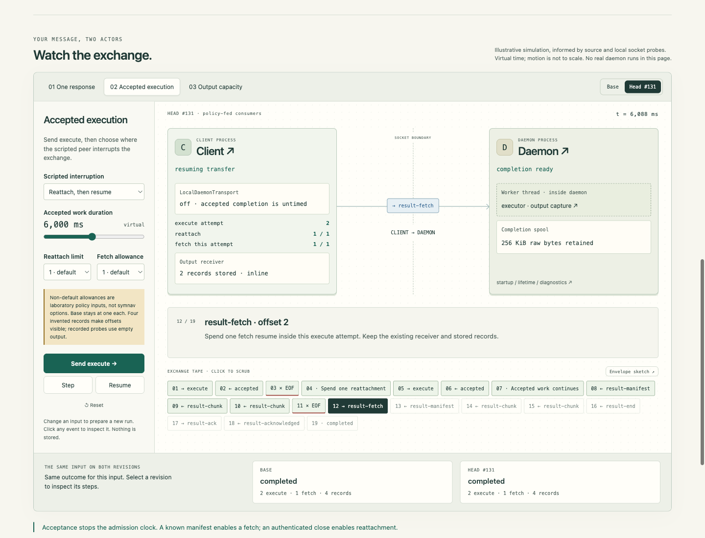 |
Approximately 40 minutes. | The output scene is less distinctive than the two timing/recovery scenes. The eleven-card opening also takes substantial space: it preserves complete decision coverage but delays the main interaction. I would try a more compact visual inventory before adding another scene. | README# message-choreography-sim ## Entry point Open [index.html](index.html) directly. On this Mac: ```sh open ~/projects/rich-review-v2/experiments/15-message-choreography-sim/index.html ``` No server, installation or internet connection is required. Click **Send the first ping**, then use **Send**, **Step**, **Pause**, the event tape, or the base/head controls. The page has three scenes: one-response timing, accepted-execution recovery, and output capacity. ## Kind other: interactive sim ## Subjects pr-131 — Route daemon thresholds through centralized policy. The pr-127 PR body and file summary were inspected when choosing the subject. It is not explained by this artifact. ## Declared choices - Role framing: The reader operates the client and observes a scripted daemon. A tour through concrete exchanges, with explicit decisions above the simulation. - Box lenses: Static structure (existing `@symnav/daemon` policy and mechanisms still in `apps/cli`) plus runtime topology (client process, socket, daemon process, nested worker thread). Gold edges show the changed supply of policy values; the process boundary stays in place. - Opening style: Picture first, followed by a complete opening inventory. A 150 ms ping is the first runnable example. - Shape: Pyramid: eleven opening decision summaries → parameterized exchanges and mechanism details → exact source and recorded probes. The error-selection difference and test changes are present in the opening layer. - Navigation: Linear page with exits into a dialog; source → Back returns to the mechanism. Each tape event is directly selectable. Closing detail preserves the current run. Both revisions can be inspected independently. - Trust posture: Check the PR's account against the base and head. Mark recorded reasons as stated; identify the bounded search behind unexplained choices. Explain observations without issuing a correctness verdict. - Persona: A teammate who knows symnav but not this daemon corner. - Representations used: Process/module boxes, moving message envelopes, virtual time, independent recovery counters, record offsets, separate client/spool state, base/head outcomes, policy tables, exact source excerpts, and recorded real-client socket exchanges. - Importance rule: Configuration ownership first, then timing and recovery boundaries. Unrequested behavior and changed test scope stay in the opening inventory rather than appearing as surprises in evidence. - Inputs used (beyond bundle): Base/head source files; existing policy record and policy definition/tests; existing duplicate-request attachment code; prepared worktree build output for local Unix-socket probes. Bundle inputs used: `pr.json`, the entire `diff.patch`, `files.txt`, and contributor/architecture portions of `repo-rules.md`. Generated overview files were not used. - Tech: Dependency-free HTML/CSS/JavaScript; Node for the probe and model checks; Python for bundling evidence; Playwright for browser checks. Harness: Codex. - Built on earlier experiment(s): none. Earlier experiment contents were ignored; nothing was reused. ## What I tried I chose #131 because its transport and policy consumers support the assigned two-actor angle directly. The first recovery story risked making independent fetch scope look newly introduced. Reading the base and running socket probes showed that a reattached execute already received its own fetch allowance. The artifact now shows that preserved behavior and the actual change to numeric inputs. The same probes exposed a narrower before/after difference: after reattachment accepts, a malformed completion surfaces as `corrupt` in the head while the base returns the earlier `closed` error. A clean EOF during fetch also showed why a numeric allowance of two does not produce two fetches on that path. Both are explained with their limits, without supplying an invented reason. The first probe draft had an incomplete manifest; its invalid observations were discarded after correcting the identity fields. Browser inspection also led to separating the client's storage state from the daemon's spool state. [Method notes](evidence/method-notes.md) record these boundaries and losses. I kept startup, resource supervision and diagnostics in the opening map and source views. Putting every mechanism into one animated request would imply a causal sequence the source does not contain. ## What I would drop The output scene is less distinctive than the two timing/recovery scenes. The eleven-card opening also takes substantial space: it preserves complete decision coverage but delays the main interaction. I would try a more compact visual inventory before adding another scene. ## What I would do next Capture partial-record exchanges from a full daemon and feed those events into the same tape. Compare the current complete opening against a compact map that preserves the same decisions. ## Time spent Approximately 40 minutes. ## Verification and evidence Six model checks pass, including comparisons against twelve recorded real-client probe runs and a sweep of 144 fault/allowance/revision combinations. Browser checks passed for every primary source exit and return, controls, playback, revision comparison, source/policy filtering, 390 px interaction, and direct `file://` opening. No page JavaScript errors were observed. The page runs an illustrative model. The probes execute the real compiled transport against a scripted socket peer, not a full daemon. The full symnav test suite was not run. Symnav sources and branches were untouched. From this folder, with the prepared base/head worktree builds available: ```sh node evidence/probe.mjs python3 evidence/build-evidence.py node --test model.test.cjs ``` The evidence desk embeds all 60 changed-file patches, 33 source excerpts, and 44 policy entries/recipes. Supporting files: - [File-to-decision inventory](evidence/coverage.md) - [Recorded socket observations](evidence/observations.json) - [Model check output](evidence/model-test.txt) - [Browser check results](evidence/browser-check.json) and [Playwright-tool check function](evidence/browser-check.js) - [Simulation screenshot](screenshots/01-message.png), [opening](screenshots/02-opening.png), [mobile](screenshots/03-mobile.png) Only this experiment folder was written. Shared index, queue, orchestrator files and earlier experiments were left to their owners. The temporary verification server was stopped; the artifact opens as a file. |
| 14 | outsider-persona attempt 1: claude-opus → attempt 2: claude-opus → attempt 3: codex |
page | stack`: all 26 PRs, from `main` at `b6801ebdd2421d0ca2e4bdd61ec0f04c24ddd73e` to #149 at `d07002357d3e9596bfaae910a1ac63b77981620b`. One intermediate #148 test snapshot explains a temporary source-copy check; it is explicitly marked as historical. | Role framing: guide to an unfamiliar system, followed by a textbook-style explanation of its decisions. · Box lenses: runtime topology and static package ownership; data lifetime is a supporting lens. The worker/executor injection seam is marked on the runtime map, and transferred responsibilities are bordered on the package comparison. · Opening style: product input/question/output sketch, then a deliberately lossy “keep the workshop open” analogy. It introduces the product before any PR numbers or implementation details. · Shape: an atlas, a complete choice sheet, and three deeper walkthroughs. The first viewport is orientation, not the complete top layer. · Navigation: read downward, jump from a system box to its decision branch, expand an individual reason, open frozen source in a drawer, close back to the same location. Branch return links and hash anchors support nonlinear reading. · Trust posture: explain the stated design; inspect changes beyond the stated architectural moves. General reasons for test migration are distinguished from missing reasons for dropping particular composed observations. · Persona: a developer who has never used symnav and does not know its CLI, daemon, or package names. · Representations used: product sketch, process/thread containment map, before/after package map, import-direction table, decision disclosures, policy tables, stepped command traces, lifetime matrix, record-transfer diagrams, and source comparisons. · Importance rule: first establish what the product does and which boundaries mean process versus package; then explain state, acceptance, and delivery. Test-observation changes, API removals, deferred behavior, and an adjacent PR-template edit are first-class choices alongside package moves. File size does not determine importance. · Inputs used (beyond bundle): read-only Git objects from the supplied main/stack-head history, selected production and test implementations, README, contributor/dependency rules, product and daemon functional specs, architecture spec, policy record, and follow-up spec. The PR bundle's bodies and commit metadata supply the recorded rationale. Git supplies the equivalent combined diff with rename detection. The overview text bundles were not used. · Tech: static HTML, CSS, and vanilla JavaScript; Python's standard library and Git freeze the evidence. No dependencies or generated raster artwork. · Built on earlier experiment(s): none. Earlier experiment outputs were ignored. Existing harness/worker log files in this assigned folder were not used or edited. | 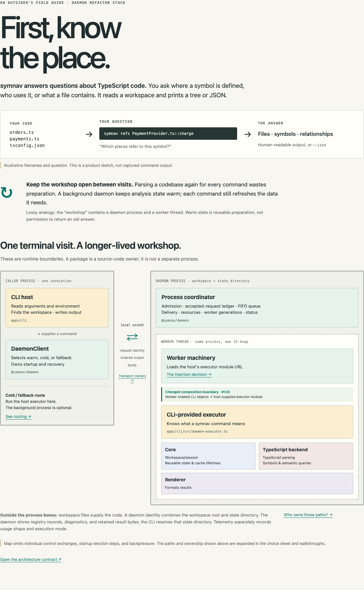 |
About 36 minutes, including source inspection, implementation, and browser checks. | Some repeated source links and the final teach-back answer. The 44-row policy table is demanding for this persona; a later experiment could compress it visually while keeping every choice available in the top layer. I would retain the separate process and package maps. | README# outsider-persona ## Entry point Open [index.html](index.html) directly. On this Mac: ```sh open ~/projects/rich-review-v2/experiments/14-outsider-persona/index.html ``` No server, installation, network connection, or account is needed. JavaScript powers the decision sheet, source drawer, and illustrative walkthroughs. The opening maps also render without it. GitHub links are optional evidence exits. ## Kind page ## Subjects `stack`: all 26 PRs, from `main` at `b6801ebdd2421d0ca2e4bdd61ec0f04c24ddd73e` to #149 at `d07002357d3e9596bfaae910a1ac63b77981620b`. One intermediate #148 test snapshot explains a temporary source-copy check; it is explicitly marked as historical. ## Declared choices - Role framing: guide to an unfamiliar system, followed by a textbook-style explanation of its decisions. - Box lenses: runtime topology and static package ownership; data lifetime is a supporting lens. The worker/executor injection seam is marked on the runtime map, and transferred responsibilities are bordered on the package comparison. - Opening style: product input/question/output sketch, then a deliberately lossy “keep the workshop open” analogy. It introduces the product before any PR numbers or implementation details. - Shape: an atlas, a complete choice sheet, and three deeper walkthroughs. The first viewport is orientation, not the complete top layer. - Navigation: read downward, jump from a system box to its decision branch, expand an individual reason, open frozen source in a drawer, close back to the same location. Branch return links and hash anchors support nonlinear reading. - Trust posture: explain the stated design; inspect changes beyond the stated architectural moves. General reasons for test migration are distinguished from missing reasons for dropping particular composed observations. - Persona: a developer who has never used symnav and does not know its CLI, daemon, or package names. - Representations used: product sketch, process/thread containment map, before/after package map, import-direction table, decision disclosures, policy tables, stepped command traces, lifetime matrix, record-transfer diagrams, and source comparisons. - Importance rule: first establish what the product does and which boundaries mean process versus package; then explain state, acceptance, and delivery. Test-observation changes, API removals, deferred behavior, and an adjacent PR-template edit are first-class choices alongside package moves. File size does not determine importance. - Inputs used (beyond bundle): read-only Git objects from the supplied main/stack-head history, selected production and test implementations, README, contributor/dependency rules, product and daemon functional specs, architecture spec, policy record, and follow-up spec. The PR bundle's bodies and commit metadata supply the recorded rationale. Git supplies the equivalent combined diff with rename detection. The overview text bundles were not used. - Tech: static HTML, CSS, and vanilla JavaScript; Python's standard library and Git freeze the evidence. No dependencies or generated raster artwork. - Built on earlier experiment(s): none. Earlier experiment outputs were ignored. Existing harness/worker log files in this assigned folder were not used or edited. ## What I tried Started from the product and two separate maps. Combining package ownership and runtime topology into one box system would make the new daemon package look like a new process, so the page shows those views separately and marks the executor injection boundary. Mechanically extracted all 117 PR decision entries, then added 25 records from source, plans, public-surface removals, and changed tests. The sheet keeps each choice visible while its rationale opens below it. The policy record contributes 44 values/recipes and five deliberate deadline absences. The cache example initially needed only “warm versus cleared.” Source inspection showed that was too coarse: a selected-file refresh evicts omitted source bytes while preserving omitted prepared-file entries. The final example shows four lifetimes and separately bounded publication. An apparent compatibility-hash change also proved to be an intermediate test mechanism, so it is marked historical rather than presented as runtime behavior. The first narrow-phone check found a long decision label overflowing by a few pixels; text wrapping was corrected. One dependency-table source pointer was corrected to line 86. ## What I would drop Some repeated source links and the final teach-back answer. The 44-row policy table is demanding for this persona; a later experiment could compress it visually while keeping every choice available in the top layer. I would retain the separate process and package maps. ## What I would do next Ask a reader new to symnav to redraw the process/package boundaries, distinguish byte-cache eviction from index retention, and explain why acceptance changes recovery. The browser checks do not measure comprehension. ## Time spent About 36 minutes, including source inspection, implementation, and browser checks. ## Validation and limits - [verification.json](verification.json) records 56 browser checks: all 117 PR choices and 44 policy rows, map navigation, reason expansion, original PR/commit access, before/after/diff switching, Escape/focus return, four request scenarios containing 20 steps, four cache events, both transfer modes, and evidence search. Desktop, tablet, 390 px phone, and 320 px phone layouts had no page-wide horizontal overflow. No script errors or HTTP requests occurred. - A final source-pointer pass checked 455 rendered and scenario source references for availability and line bounds. The corrected dependency-table highlight was inspected in the drawer. - [screenshots](screenshots/) contains seven views, including phone and mechanism views. - Both supplied worktrees had no tracked changes when checked. The evidence builder reads Git objects and writes only into this experiment folder. No symnav build, daemon invocation, correctness suite, commit, or branch operation was performed. - The demonstrations are explicitly illustrative, not executions or performance measurements. Author-reported verification remains attributed to the original PR material. - “Unexplained” means no specific reason was found in the inspected PR bodies, commit bodies, and plans. It does not claim that no rationale exists elsewhere. A general package-boundary rationale does not establish equivalence between a removed CLI scenario and a related package test. - The mechanical test-title screen reports 40 baseline titles absent verbatim at head. Renames count as absent; parameterized cases are not expanded; assertion changes under unchanged titles are not detected by that screen. Its unique-title counts are not suite test counts or coverage evidence. Material observation changes found by diff inspection are already on the choice sheet. - The maps and six opening premises are explicitly lossy indexes. The complete choice sheet precedes the detailed walkthroughs so the walkthroughs elaborate already introduced decisions. This makes the top layer long; that is the central tradeoff of this experiment. ## Files and reproducibility - [index.html](index.html), [style.css](style.css), [content.js](content.js), and [app.js](app.js): the page, authored explanations, and interactions. No comments, verdicts, or reviewer responses are collected; controls retain only in-memory display state. - [evidence.js](evidence.js): frozen source, diffs, original PR bodies, commits, policy rows, and the test-title screen. It contains 254 changed file pairs, six unchanged context pairs, and one historical test pair. It is about 5.6 MiB. - [evidence-manifest.json](evidence-manifest.json): exact revisions and inventory. The combined delta is 254 files, +27,533 / −8,698 with rename detection. - [build.py](build.py): regenerate evidence with `python3 experiments/14-outsider-persona/build.py` from the rich-review-v2 root. This requires the supplied bundle and Git objects; opening the finished page does not. - [verify-browser.js](verify-browser.js): the browser-check function used through the Playwright tool. It creates and closes an isolated browser context, leaving other agents' pages alone. - [brief.md](brief.md): the supplied brief, preserved. |
| 13 | owner-persona attempt 1: codex |
page | pr-131 only: “Route daemon thresholds through centralized policy.” Base `b3a6c4fa5dcf96223765aa147a9e094cd4a51b0e`; head `b100221db48754656328391b878299c5a0bab443`. | Role framing: owner inspecting the consequences of someone else’s change. Familiar mechanisms get compact names; unexplained consequences lead. · Box lenses: static package structure and data ownership across CLI process, daemon process, and worker thread. The package diagram marks the new required value feeds and the removed local threshold path. The process diagram distinguishes the existing serialization bridge from the new consumer feeds. · Opening style: one ownership picture, preceded by a short delta. Its grouping is explicitly marked as lossy. · Shape: complete, collapsed decision register with twelve rows; mechanism explanations inside each row; exact source underneath. · Navigation: native disclosures, expand/collapse all for linear reading, map-to-row links, bookmarked rows, file-to-decision links, and a modal source viewer that restores focus on close. No-JavaScript reading uses native disclosures and a standalone evidence page. · Trust posture: compare stated intent with shipped boundaries and test changes. Explain the choices and leave their judgment to the owner. · Persona: reader already owns this daemon corner. No daemon primer, onboarding sequence, quiz, or required interaction. · Representations used: package and process diagrams, compact decision register, before/after error table, nested recovery scopes, deadline bars, output flow, policy-to-consumer tables, and exact base/head/diff evidence. · Importance rule: unexplained observable consequences and altered test witnesses first; purpose and recovery distinctions next in explanatory depth; broad policy plumbing is grouped by consumer family. No correctness score or verdict. · Inputs used (beyond bundle): targeted base/head implementation and test source; unchanged `packages/daemon/src/daemon-policy.ts`, its tests, and `policy-testing.ts`; `plans/005/daemon-policy.md` and the architecture functional spec; worktree contributor guides; exact revision and clean-tree checks. Bundle inputs used: full patch, PR body and all six commit messages, changed-file statistics, stack position, and contributor/spec context. Precomputed overviews were not used to infer behavior. No implementing transcript was available in the inspected material. · Tech: plain HTML/CSS/JavaScript; Python generator; a small Node/TypeScript source-method probe. Browser validation used Chromium through Playwright in isolated contexts. Harness: Codex. No sub-agents. · Built on earlier experiment(s): none. Earlier experiment folders and artifacts were not read. The supplied brief and harness files already existed in this experiment folder and were preserved. | 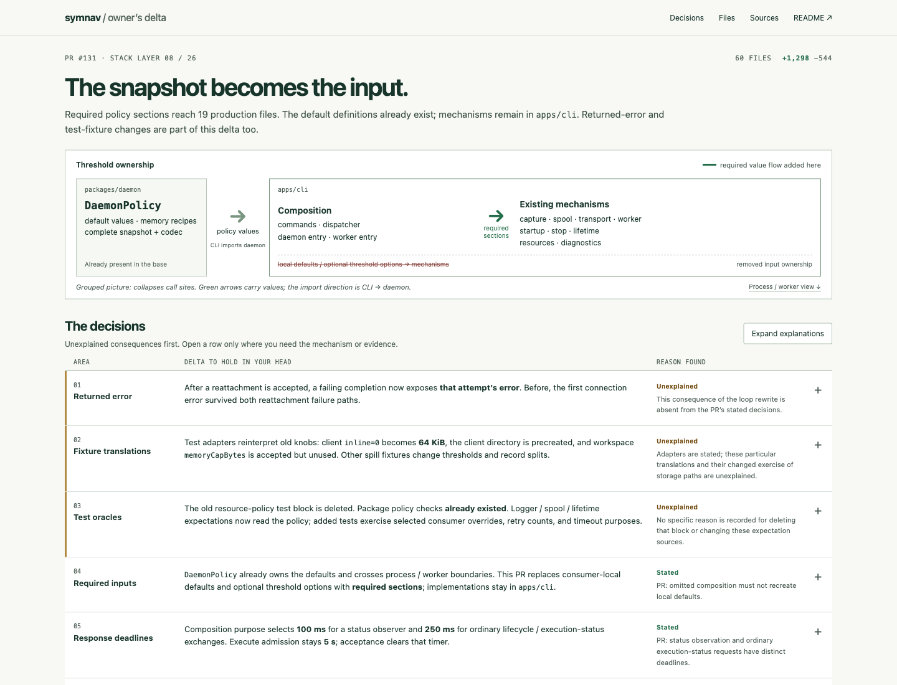 |
About 24 minutes of wall-clock time, including source inspection, implementation, the source probe, browser checks, screenshots, and this handoff. | The always-visible 60-file index is useful for completeness but consumes a lot of page below the stopping line. I would move it to a separate sheet if owners consistently navigate by decision. The mobile opening diagram also takes nearly a screen; desktop is the primary reading surface here. | README# owner-persona ## Entry point Open [index.html](index.html), or run: ```sh open ~/projects/rich-review-v2/experiments/13-owner-persona/index.html ``` The entry file contains its styles, scripts, and source evidence. It needs no server, installation, or network. Keep the folder together for the standalone evidence fallback and audit links. ## Kind page ## Subjects pr-131 only: “Route daemon thresholds through centralized policy.” Base `b3a6c4fa5dcf96223765aa147a9e094cd4a51b0e`; head `b100221db48754656328391b878299c5a0bab443`. ## Declared choices - Role framing: owner inspecting the consequences of someone else’s change. Familiar mechanisms get compact names; unexplained consequences lead. - Box lenses: static package structure and data ownership across CLI process, daemon process, and worker thread. The package diagram marks the new required value feeds and the removed local threshold path. The process diagram distinguishes the existing serialization bridge from the new consumer feeds. - Opening style: one ownership picture, preceded by a short delta. Its grouping is explicitly marked as lossy. - Shape: complete, collapsed decision register with twelve rows; mechanism explanations inside each row; exact source underneath. - Navigation: native disclosures, expand/collapse all for linear reading, map-to-row links, bookmarked rows, file-to-decision links, and a modal source viewer that restores focus on close. No-JavaScript reading uses native disclosures and a standalone evidence page. - Trust posture: compare stated intent with shipped boundaries and test changes. Explain the choices and leave their judgment to the owner. - Persona: reader already owns this daemon corner. No daemon primer, onboarding sequence, quiz, or required interaction. - Representations used: package and process diagrams, compact decision register, before/after error table, nested recovery scopes, deadline bars, output flow, policy-to-consumer tables, and exact base/head/diff evidence. - Importance rule: unexplained observable consequences and altered test witnesses first; purpose and recovery distinctions next in explanatory depth; broad policy plumbing is grouped by consumer family. No correctness score or verdict. - Inputs used (beyond bundle): targeted base/head implementation and test source; unchanged `packages/daemon/src/daemon-policy.ts`, its tests, and `policy-testing.ts`; `plans/005/daemon-policy.md` and the architecture functional spec; worktree contributor guides; exact revision and clean-tree checks. Bundle inputs used: full patch, PR body and all six commit messages, changed-file statistics, stack position, and contributor/spec context. Precomputed overviews were not used to infer behavior. No implementing transcript was available in the inspected material. - Tech: plain HTML/CSS/JavaScript; Python generator; a small Node/TypeScript source-method probe. Browser validation used Chromium through Playwright in isolated contexts. Harness: Codex. No sub-agents. - Built on earlier experiment(s): none. Earlier experiment folders and artifacts were not read. The supplied brief and harness files already existed in this experiment folder and were preserved. ## What I tried I read the entire supplied diff, then followed the composition, recovery, and test-adapter changes into source. I considered an interactive timeout/recovery simulation and dropped it before implementation: the owner needs the scope of each decision immediately. The implemented page uses small fixed diagrams and optional source inspection instead. The first tempting headline was that only threshold ownership changes. Source inspection made that incomplete. The final register also exposes the changed returned-error identity, test-only inline-limit coercion and directory creation, the unused legacy memory-cap option, deleted resource tests, policy-derived expectation sources, and remaining numeric seams. Stated reasons and missing reasons remain separate. A register row is the stopping layer; its explanation adds exact paths, values, mechanics, and evidence for the same decisions. Verification completed: - The generator checks the two exact revisions and verifies that the bundled patch equals their three-dot diff. All 60 changed files map to register rows; the totals are 19 production files and 41 test/helper files, +1,298/−544. See [audit.json](audit.json). - [probe.mjs](probe.mjs) extracts the actual base/head completion methods, error class, and authentication guard, then runs them with stubbed execute/completion promises. Its four observations support the displayed error table. It does not exercise a daemon or socket. See [probe-results.json](probe-results.json). - Browser checks covered disclosures, source revisions and line targets, keyboard tabs/Escape/focus return, file filtering, deep links, desktop/mobile overflow, and the no-JavaScript fallback. No page errors or network requests occurred. See [browser-check-results.json](browser-check-results.json) and [screenshots](screenshots/). - The browser harness first hit an unsupported dynamic import and then an exact link-name selector that omitted the visible arrow. Both harness issues were fixed before the successful run. No page implementation was abandoned. - Both symnav worktrees remained clean. Symnav suites were not run, and their correctness is not claimed. To regenerate from the supplied worktrees, run `node probe.mjs` and then `python3 build.py` inside this folder. Editorial content is in [content.py](content.py); the template, styles, and interaction source are separate from the generated entry file. [browser-check.js](browser-check.js) is a Playwright tool snippet taking a `page` argument; it returns the report preserved alongside it. ## What I would drop The always-visible 60-file index is useful for completeness but consumes a lot of page below the stopping line. I would move it to a separate sheet if owners consistently navigate by decision. The mobile opening diagram also takes nearly a screen; desktop is the primary reading surface here. ## What I would do next Have a daemon owner read only the collapsed register, then describe the returned-error and fixture changes. Use their omissions and redundant-reading complaints to edit the rows; this experiment has no human recall result yet. ## Time spent About 24 minutes of wall-clock time, including source inspection, implementation, the source probe, browser checks, screenshots, and this handoff. |
| 12 | detective attempt 1: claude-opus → attempt 2: claude-opus → attempt 3: codex |
page | pr-148 only, against its PR-147 base. The stack architecture spec supplies the motivating context. No additional PR was treated as a subject. | Role framing: detective; start from the contributor symptom that a host must understand daemon mechanisms, then follow the actual composition sites to the ownership changes. · Box lenses: static package/module structure, plus runtime process/thread topology. The page distinguishes package ownership from the still-active CLI consumer path. · Opening style: reconstructed contributor symptom, illustrated as one command arriving with six mechanism dependencies. It is explicitly not a captured end-user incident. · Shape: a case brief followed by six connected evidence trails. The complete brief exposes 24 grouped decisions, including preserved behavior, deferrals, and changed test scope. · Navigation: linear clue order; direct links from the overview and every clue to detail; decision dialogs with reasons and source tabs; return links; a searchable file inventory. No comments, verdict controls, or stored reader responses. · Trust posture: trace stated intent to code, then surface details that do not fit a simple “move files” explanation. Distinguish a stated architectural aim from an unexplained implementation or test choice. · Persona: a teammate familiar with symnav who does not know this daemon corner. · Representations used: motivating picture, before/head ownership diagrams, host contract boundary, process/thread lanes, staging sequence, measured source hashes, ordered guard playback with side-effect counters, route table, retry fork, registry coordinate map, illustrative idle timeline, test-scope comparison, exact source/diff viewer. · Importance rule: start with the host’s composition burden and the active consumer boundary; then side-effect and replay boundaries; then authority and timing; give test deletions, narrowed assertions, and unexplained choices their own equally visible clue. · Inputs used (beyond bundle): both provided worktrees; local architecture and follow-up functional specs; exact base/head source; git revision IDs and selected file history; existing package/meta-test execution; a controlled probe of the built routing classes. The bundled PR body, commits, full diff, file statistics, and relevant repository-rule searches were used. The overview files contained headings without useful symbol output and were not used as evidence. · Tech: dependency-free HTML/CSS/classic JavaScript; Python for source capture; a Node script for actual guard execution; Playwright for browser checks. Source text is escaped in the viewer. No analytics, external fonts, fetch requests, or storage APIs. · Built on earlier experiment(s): none. I listed earlier README paths to see what existed, but did not read or reuse their contents. | 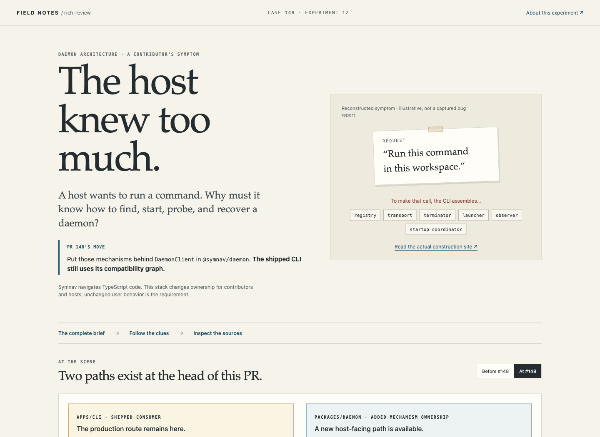 |
Approximately 34 minutes wall-clock. Built with Codex; no subagents spawned. | The complete 153-file inventory could live on a separate evidence page. It adds bulk after the investigation is understood; the focused excerpts do most of the explanatory work. | README# detective ## Entry point Open [index.html](index.html). All scripts, styles, source snapshots, and captured traces are local; no installation or network service is needed by the page. For the serving path used in browser verification, run: ```sh python3 -m http.server 8912 --bind 127.0.0.1 --directory ~/projects/rich-review-v2/experiments/12-detective ``` Then open [the page on localhost](http://127.0.0.1:8912/index.html). The temporary verification server was stopped. Direct-file opening was not empirically verified; see [validation.md](validation.md) for the browser-tool restriction and headless-launch timeout. ## Kind page ## Subjects pr-148 only, against its PR-147 base. The stack architecture spec supplies the motivating context. No additional PR was treated as a subject. ## Declared choices - Role framing: detective; start from the contributor symptom that a host must understand daemon mechanisms, then follow the actual composition sites to the ownership changes. - Box lenses: static package/module structure, plus runtime process/thread topology. The page distinguishes package ownership from the still-active CLI consumer path. - Opening style: reconstructed contributor symptom, illustrated as one command arriving with six mechanism dependencies. It is explicitly not a captured end-user incident. - Shape: a case brief followed by six connected evidence trails. The complete brief exposes 24 grouped decisions, including preserved behavior, deferrals, and changed test scope. - Navigation: linear clue order; direct links from the overview and every clue to detail; decision dialogs with reasons and source tabs; return links; a searchable file inventory. No comments, verdict controls, or stored reader responses. - Trust posture: trace stated intent to code, then surface details that do not fit a simple “move files” explanation. Distinguish a stated architectural aim from an unexplained implementation or test choice. - Persona: a teammate familiar with symnav who does not know this daemon corner. - Representations used: motivating picture, before/head ownership diagrams, host contract boundary, process/thread lanes, staging sequence, measured source hashes, ordered guard playback with side-effect counters, route table, retry fork, registry coordinate map, illustrative idle timeline, test-scope comparison, exact source/diff viewer. - Importance rule: start with the host’s composition burden and the active consumer boundary; then side-effect and replay boundaries; then authority and timing; give test deletions, narrowed assertions, and unexplained choices their own equally visible clue. - Inputs used (beyond bundle): both provided worktrees; local architecture and follow-up functional specs; exact base/head source; git revision IDs and selected file history; existing package/meta-test execution; a controlled probe of the built routing classes. The bundled PR body, commits, full diff, file statistics, and relevant repository-rule searches were used. The overview files contained headings without useful symbol output and were not used as evidence. - Tech: dependency-free HTML/CSS/classic JavaScript; Python for source capture; a Node script for actual guard execution; Playwright for browser checks. Source text is escaped in the viewer. No analytics, external fonts, fetch requests, or storage APIs. - Built on earlier experiment(s): none. I listed earlier README paths to see what existed, but did not read or reuse their contents. ## What I tried I followed the PR’s claimed symptom to `DaemonCommandDispatcher.createRuntime`, then checked whether the new client replaced it. Both that dispatcher and lifecycle registration are byte-identical to the base. That made staging the central clue: a new owner exists while the consumer stays connected to its compatibility graph. Instead of inventing a bug reproduction, I used a clearly reconstructed host scenario. For a concrete mechanism exhibit, I executed the actual routing guards on fourteen constructed record/observation scenarios and recorded their calls. The initial case deliberately combines “starting” with “wrong version” so the first-decision rule is visible as work that never occurs. The source pass also exposed the changed witnesses: generic worker tests lose CLI duration assertions, a worker/version rejection assertion becomes a direct CLI-factory assertion, policy-testing checks are retired, the new clock scan covers one folder, file parallelism is disabled, and Windows cleanup gets a different expectation. All appear in the complete brief. No coded prototype was abandoned. ## What I would drop The complete 153-file inventory could live on a separate evidence page. It adds bulk after the investigation is understood; the focused excerpts do most of the explanatory work. ## What I would do next Give the page to a fresh reader and ask them to sketch the still-active CLI path and explain when a lost warm answer may be replayed. Use what they miss to tighten the brief without hiding its exceptions deeper down. ## Time spent Approximately 34 minutes wall-clock. Built with Codex; no subagents spawned. ## Validation and limits The head build succeeded. Fourteen selected daemon-package test files passed (153 tests), and two selected meta-test files passed (8 tests). Browser checks exercised every decision dialog and its source tabs, all fourteen trace scenarios, diagram switching, file filtering, keyboard dismissal, and desktop/mobile layout. Both symnav worktrees remained clean. See [validation.md](validation.md), [package-checks.log](package-checks.log), and [meta-checks.log](meta-checks.log). The page is an explanation, not a correctness verdict. There was no full workspace or end-to-end parity run. The Windows expectation was read, not executed on Windows. The guard capture uses real compiled code with constructed inputs, and does not exercise sockets, startup, the CLI, or the full client. Its method is stated at the exhibit. The idle timeline is illustrative. The reason labels describe the supplied evidence: all 45 commit bodies are empty; the PR and specs contain the architectural reasons. A test describing a choice is not automatically a rationale for that choice. The seven unexplained decisions retain that distinction, even where a broader preservation or ownership goal is stated. ## Files and reproduction - [brief.md](brief.md): the received brief. - [index.html](index.html), [style.css](style.css), [page.js](page.js): the reading surface and interactions. - [case-content.js](case-content.js): the 24 decisions, rationales, and 60 source references. - [evidence-data.js](evidence-data.js): 247 frozen revision snapshots and all 153 file deltas, plus PR metadata and guard captures. - [evidence-manifest.json](evidence-manifest.json): revision IDs, raw-byte source hashes, counts, and unchanged consumer comparisons. - [route-probe.mjs](route-probe.mjs), [route-results.json](route-results.json): the probe and its fourteen recorded executions. - [build-evidence.py](build-evidence.py): rebuilds the local evidence bundle from the specified input/worktree layout. - [screenshots/01-desktop.png](screenshots/01-desktop.png), [screenshots/02-routing.png](screenshots/02-routing.png), [screenshots/03-mobile-routing.png](screenshots/03-mobile-routing.png): captured page views. To regenerate evidence for these exact revisions, first build the head worktree, then run `node route-probe.mjs` and `python3 build-evidence.py` from this experiment folder. The existing page can be opened without the worktrees or either regeneration tool. |
| 11 | chess-coach attempt 1: codex |
page | pr-131 — Route daemon thresholds through centralized policy. | Role framing: Chess coach. Assigned angle: move played versus move not played, per decision. The page compares commitments and consequences without grading the moves. · Box lenses: Static ownership across `packages/daemon`, CLI composition, CLI mechanisms and test helpers; runtime boundaries across the CLI process, daemon process and worker thread. Snapshot transfer predates this PR; the changed ownership is in the consumers. · Opening style: “The number stays; the authority moves,” followed by a before/after boundary picture. Chess is explicitly a lossy analogy. · Shape: A complete, visible variation sheet above 22 smaller decision pyramids. Test changes and unexplained details appear in that sheet before any descent. · Navigation: Linear numbered reading; links from map to move, move to analysis, analysis to source; previous/next and return-to-move links. Native disclosures preserve optional depth. Direct analysis and source-line URLs open their target disclosures. · Trust posture: Check the PR against source. Distinguish author-named alternatives, actual base behavior and hypothetical coach variations. Label rationale as stated or unexplained at the granularity of the particular decision. · Persona: A teammate who knows symnav but does not own this corner. · Representations used: Package and runtime diagrams, paired move paths, a complete decision matrix, two interactive illustrative comparisons, verbatim excerpts, full before/after source copies, and a file-to-decision coverage table. No review responses are collected or stored. · Importance rule: Ownership and cross-boundary effects first, then deadline/recovery scope, then test and API details that alter how the architecture can be understood. The latter receive the same decision format and depth as the architectural choices. · Inputs used (beyond bundle): All changed base/head source files; existing `DaemonPolicy`, its tests and test factory; `plans/005/daemon-policy.md`; the architecture spec; `program.ts`; contributor instructions; local commit identities and diff. The bundle's overview files contain only filename headings, so they supplied no symbol analysis. No implementation transcript was available. Base `b3a6c4fa5dcf96223765aa147a9e094cd4a51b0e`; head `b100221db48754656328391b878299c5a0bab443`. · Tech: Dependency-free HTML, CSS and JavaScript. Python generates the page and 66 local source pages from authored `content.py`. The generated page needs no Python. Browser checks used Playwright and `file://`. · Built on earlier experiment(s): none. I ignored earlier experiment outputs and did not read them. | 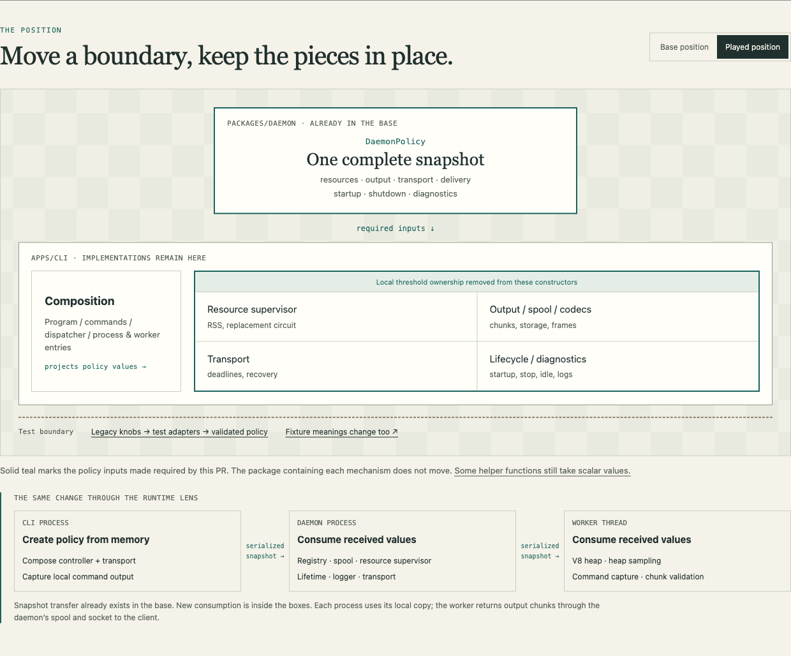 |
About 21 minutes wall-clock, using Codex. No sub-agents were spawned. | Some generic alternatives, especially “one timer for everything,” reveal less than the concrete fixture and error-selection forks. The complete sheet is text-heavy; the cost of avoiding surprises on descent is visible here. Full source snapshots also add about 6 MB, although they make the evidence independent of GitHub and the worktrees. | README# chess-coach ## Entry point Open [index.html](index.html) directly. It works offline with no installation or server. ```sh open ~/projects/rich-review-v2/experiments/11-chess-coach/index.html ``` The opening map compares ownership before and after. The complete move sheet exposes all 22 decision groups. “Analyze” opens the matching mechanism, counterfactual and source excerpts. Start with moves 05, 07 or 17 to see the angle most clearly. ## Kind page ## Subjects pr-131 — Route daemon thresholds through centralized policy. ## Declared choices - Role framing: Chess coach. Assigned angle: move played versus move not played, per decision. The page compares commitments and consequences without grading the moves. - Box lenses: Static ownership across `packages/daemon`, CLI composition, CLI mechanisms and test helpers; runtime boundaries across the CLI process, daemon process and worker thread. Snapshot transfer predates this PR; the changed ownership is in the consumers. - Opening style: “The number stays; the authority moves,” followed by a before/after boundary picture. Chess is explicitly a lossy analogy. - Shape: A complete, visible variation sheet above 22 smaller decision pyramids. Test changes and unexplained details appear in that sheet before any descent. - Navigation: Linear numbered reading; links from map to move, move to analysis, analysis to source; previous/next and return-to-move links. Native disclosures preserve optional depth. Direct analysis and source-line URLs open their target disclosures. - Trust posture: Check the PR against source. Distinguish author-named alternatives, actual base behavior and hypothetical coach variations. Label rationale as stated or unexplained at the granularity of the particular decision. - Persona: A teammate who knows symnav but does not own this corner. - Representations used: Package and runtime diagrams, paired move paths, a complete decision matrix, two interactive illustrative comparisons, verbatim excerpts, full before/after source copies, and a file-to-decision coverage table. No review responses are collected or stored. - Importance rule: Ownership and cross-boundary effects first, then deadline/recovery scope, then test and API details that alter how the architecture can be understood. The latter receive the same decision format and depth as the architectural choices. - Inputs used (beyond bundle): All changed base/head source files; existing `DaemonPolicy`, its tests and test factory; `plans/005/daemon-policy.md`; the architecture spec; `program.ts`; contributor instructions; local commit identities and diff. The bundle's overview files contain only filename headings, so they supplied no symbol analysis. No implementation transcript was available. Base `b3a6c4fa5dcf96223765aa147a9e094cd4a51b0e`; head `b100221db48754656328391b878299c5a0bab443`. - Tech: Dependency-free HTML, CSS and JavaScript. Python generates the page and 66 local source pages from authored `content.py`. The generated page needs no Python. Browser checks used Playwright and `file://`. - Built on earlier experiment(s): none. I ignored earlier experiment outputs and did not read them. ## What I tried I started with the four decisions named in the PR, then followed every changed file to find decisions that a four-card account would hide. The result includes deleted resource-policy tests, adjusted output fixtures, an unused startup knob, an ignored legacy test cap, error selection after reattachment, the single-connection fetch path and retained scalar seams. A literal chess board was considered and dropped before implementation: assigning modules to chess pieces would add a second system to learn. I also dropped a generic retry-budget simulator. Multiplying the two numeric limits would imply repeated-fetch behavior that this source does not demonstrate. The page instead shows the real scopes and bounds the checked-in test's claim. The two small models earned their place: caller purpose changes which timeout applies to the same message; fixture normalization changes whether the same output ever touches a file. Both are marked illustrative beside the controls. The finished artifact has 80 source excerpts and maps all 60 changed paths to decisions. [Validation notes](validation.md) record source/hash checks, 1,003 checked local links, offline operation, navigation, model behavior and desktop/mobile layout. No symnav correctness or full-suite result is claimed. Symnav source was untouched. ## What I would drop Some generic alternatives, especially “one timer for everything,” reveal less than the concrete fixture and error-selection forks. The complete sheet is text-heavy; the cost of avoiding surprises on descent is visible here. Full source snapshots also add about 6 MB, although they make the evidence independent of GitHub and the worktrees. ## What I would do next Ask a fresh reader to explain why a 64 KiB cleanup fixture changed its physical path, then inspect whether the paired pictures carried that understanding. Replace the least useful hypothetical alternatives with concrete scenarios that force the same design choice. ## Time spent About 21 minutes wall-clock, using Codex. No sub-agents were spawned. |
| 10 | tour-guide attempt 1: claude-opus → attempt 2: claude-opus → attempt 3: codex |
page | pr-127` — Scope semantic caches to one turn. | Role framing: Tour guide; one `context src/app.ts:target` request walked through both versions. · Box lenses: Static package ownership and request path. A separate lifecycle view shows the later refresh/release boundary. The diagrams distinguish ownership of a scope instance from ownership of its implementation. · Opening style: One concrete source example, `caller → target → helper`, beside a before/after ownership picture. · Shape: A narrative with paired old/new views. The complete decision overview precedes the mechanism; source evidence adds depth to those same decisions. · Navigation: Eight linear stops, direct stop selection, scrubbing, optional playback, keyboard controls, clickable cache entries, nested evidence drawers with return navigation, and four later host actions. · Trust posture: Follow the observed mechanism and distinguish stated reasons from unexplained choices. Surface the awaited-release contract change alongside the spec's unchanged-behavior requirement. No verdict or feedback storage. · Persona: A teammate familiar with symnav but unfamiliar with its semantic-cache implementation. · Representations used: A source fixture, package ownership diagram, paired request diagrams, observed cache contents and object labels, search counters, lifecycle probes, decision cards, and expandable line-numbered source excerpts. · Importance rule: Put the moved ownership boundary, exact-value reuse, successful-refresh boundary, and release completion boundary first. Give unexplained API choices and test changes explicit doors too. · Inputs used (beyond bundle): Read-only base/head source for the backend, semantic service, cache scope, project graph and context command; existing built modules from both worktrees; a synthetic in-memory three-function fixture; focused existing Vitest suites; Git commit IDs and worktree status. Bundle inputs used were `pr.json`, `diff.patch`, `files.txt`, and relevant portions of `repo-rules.md`. Also read the required philosophy and playbook, including the optional angle menus. Did not use the precomputed overview files or the forbidden v1 repository. · Tech: Plain HTML, CSS and JavaScript; local data scripts; Node capture and evidence-collection scripts. No runtime dependencies, requests to external services, storage, or build step for viewing. · Built on earlier experiment(s): none. Earlier experiment artifacts were ignored. Existing files from this folder's supervisor/earlier worker attempts were preserved; their trace content was not used. | 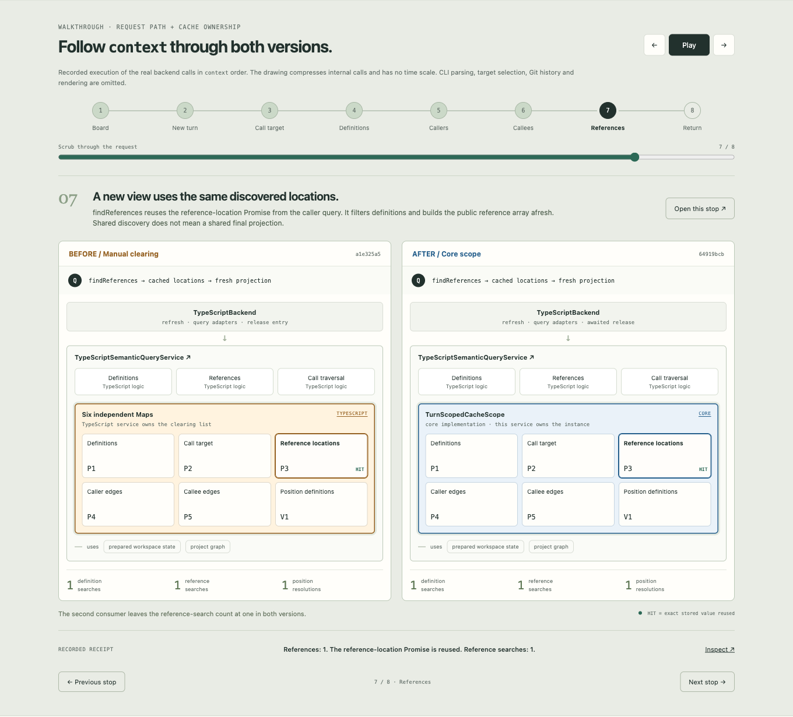 |
About 27 minutes for this Codex attempt, including capture, implementation and browser verification. | Autoplay. Direct stop selection and scrubbing communicate the mechanism more clearly. The eight-card overview also has some repetition with the evidence drawers; I would shorten that copy after a fresh-reader check. | README# tour-guide ## Entry point Open [index.html](index.html), or run: ```sh open ~/projects/rich-review-v2/experiments/10-tour-guide/index.html ``` Works directly from disk, offline, with no install or server. Start with the ownership picture and eight decision cards, then walk the numbered request stops. Cache boxes open source drawers; closing a drawer returns to the same stop. The later host actions explore refresh and release separately. ## Kind page ## Subjects `pr-127` — Scope semantic caches to one turn. Base: `a1e325a5ff979bdfa25babc5554621c8c0f20497` Head: `64919bcbcf7fcc8202779b78c5f069b24662bb18` ## Declared choices - Role framing: Tour guide; one `context src/app.ts:target` request walked through both versions. - Box lenses: Static package ownership and request path. A separate lifecycle view shows the later refresh/release boundary. The diagrams distinguish ownership of a scope instance from ownership of its implementation. - Opening style: One concrete source example, `caller → target → helper`, beside a before/after ownership picture. - Shape: A narrative with paired old/new views. The complete decision overview precedes the mechanism; source evidence adds depth to those same decisions. - Navigation: Eight linear stops, direct stop selection, scrubbing, optional playback, keyboard controls, clickable cache entries, nested evidence drawers with return navigation, and four later host actions. - Trust posture: Follow the observed mechanism and distinguish stated reasons from unexplained choices. Surface the awaited-release contract change alongside the spec's unchanged-behavior requirement. No verdict or feedback storage. - Persona: A teammate familiar with symnav but unfamiliar with its semantic-cache implementation. - Representations used: A source fixture, package ownership diagram, paired request diagrams, observed cache contents and object labels, search counters, lifecycle probes, decision cards, and expandable line-numbered source excerpts. - Importance rule: Put the moved ownership boundary, exact-value reuse, successful-refresh boundary, and release completion boundary first. Give unexplained API choices and test changes explicit doors too. - Inputs used (beyond bundle): Read-only base/head source for the backend, semantic service, cache scope, project graph and context command; existing built modules from both worktrees; a synthetic in-memory three-function fixture; focused existing Vitest suites; Git commit IDs and worktree status. Bundle inputs used were `pr.json`, `diff.patch`, `files.txt`, and relevant portions of `repo-rules.md`. Also read the required philosophy and playbook, including the optional angle menus. Did not use the precomputed overview files or the forbidden v1 repository. - Tech: Plain HTML, CSS and JavaScript; local data scripts; Node capture and evidence-collection scripts. No runtime dependencies, requests to external services, storage, or build step for viewing. - Built on earlier experiment(s): none. Earlier experiment artifacts were ignored. Existing files from this folder's supervisor/earlier worker attempts were preserved; their trace content was not used. ## What I tried I first traced definition lookup, then found that `context` already visits all six caches in one natural request. Call-target resolution fills definitions; the explicit definition question reuses them. Callers discover reference locations; references later reuse that discovery. Callees visit the position cache. That sequence became the eight-stop tour. I ran the actual built backend implementations against the same tiny fixture and captured intermediate cache contents. The recorded semantic results match for this example. Separate host probes make a successful unchanged refresh, a failed refresh, pending project release and rejected release inspectable. The release probe exposes an actual contract difference: base returns while the project is pending; head waits and propagates its asynchronous rejection. No implemented explanatory approach was abandoned. Browser inspection led to navigation controls below the paired panels so mobile readers can continue without returning to the top. One verification attempt used a dynamic import unsupported by the browser tool's execution context; verification was rerun without that import. ## What I would drop Autoplay. Direct stop selection and scrubbing communicate the mechanism more clearly. The eight-card overview also has some repetition with the evidence drawers; I would shorten that copy after a fresh-reader check. ## What I would do next Have a fresh reader predict the reference-search count and the backend release outcome before revealing those stops. Use what they miss to tune the ownership diagram and the boundary between request and later host action. ## Time spent About 27 minutes for this Codex attempt, including capture, implementation and browser verification. ## Evidence and limits The browser replays captured data. It does not execute symnav on each click. The capture performs backend refresh, then the five semantic calls in `context-command.ts:55–60`, supplying the target identity directly. CLI parsing, target selection, Git history, result building, rendering and daemon transport are omitted and labeled as such. This is a semantic request-path example, not a whole-CLI parity demonstration. Failure and delayed-release conditions are injected into live objects in the capture process. They are controlled probes, not a record of a daemon incident. Rejected project promises dropped by the base are observed by the harness so capture can finish. That observation is not attributed to the base backend. - [Coverage and capture method](evidence/coverage.md) maps all six changed files to the eight decision doors. - [Raw replay](evidence/replay.json) contains the source fixture, both revisions, all frames, object labels, counters, outputs and host probes. - [Source snapshots](evidence/source-snapshots.json) contains 23 local excerpts and the supplied PR metadata. - [Base test output](evidence/base-tests.txt): 5 existing semantic-service cases passed. - [Head test output](evidence/head-tests.txt): 11 semantic-service cases and 4 core-scope cases passed. No full workspace CI run was performed. - [Browser checks](evidence/browser-checks.json): 39 interaction checks passed in an isolated offline Chromium context, including every request stop, all host branches, evidence return/focus, keyboard navigation, playback and mobile layout. No uncaught browser errors or external network requests were observed. Both symnav worktrees had clean tracked status after the work. All authored files are inside this experiment folder. To regenerate the recorded backend data using the supplied worktrees' existing builds: ```sh node ~/projects/rich-review-v2/experiments/10-tour-guide/capture.mjs ``` To refresh the source excerpts from those worktrees and the input bundle: ```sh node ~/projects/rich-review-v2/experiments/10-tour-guide/collect-evidence.mjs ``` The original assignment is preserved in [brief.md](brief.md). Screenshots cover the [request](screenshots/01-request.png), [opening](screenshots/02-opening.png), [mobile layout](screenshots/03-mobile.png), and [pending release](screenshots/04-release.png). |
| 09 | diff-of-intent attempt 1: codex |
page | pr-127 and pr-131. Each compares its own supplied base and head. No other PR is analyzed. | Role framing: a contributor tracing stated contracts into concrete implementation choices. · Box lenses: package ownership in both subjects; cache lifecycle in #127; configuration authority and consumer boundaries in #131. · Opening style: short ownership sketches, explicitly marked as simplified, followed by paired intent/shipped figures. · Shape: two decision maps, with 8 rows for #127 and 13 for #131. All 21 decisions and their reason status remain visible when details are closed. A row opens into its mechanism, then source excerpts and full source snapshots. · Navigation: linear reading, subject anchors, decision permalinks, native expandable rows, and source-to-decision return links. Direct decision links open the corresponding detail. No feedback collection or storage. · Trust posture: diff-of-intent. The shared plan is the stack destination; the PR body is a stated contract for this step. Bodies may be retrospective. “Unexplained” means no reason in the reviewed source corpus, not proof that the change was unauthorized. · Persona: a contributor who can read TypeScript but does not know this corner of symnav. · Representations used: paired nodes with trace connectors; nested package boxes; release sequence; cache-entry table; policy-to-consumer paths; timeout lanes; nested recovery scopes; changed-test correspondence; an executed source-method probe; line-addressable offline evidence. · Importance rule: one row per decision family, regardless of diff size. Failure selection, retained numeric seams, deleted tests, and transformed fixtures receive the same visible treatment as architectural ownership. All 66 changed files map back to these rows. File coverage is an audit aid, not a proof that every implicit choice has been identified. · Inputs used (beyond bundle): exact base/head implementation and test files in the four assigned worktrees; their contributor guides; the architecture spec; #131’s pre-existing `plans/005/daemon-policy.md`, policy implementation, validator, and policy tests; Git revision and clean-worktree checks; an isolated probe compiled from the actual TypeScript sources. Both complete patches, PR bodies, commit metadata, and file statistics were used. The overview files were inspected but contain no usable symbol output. No transcript or phase-specific implementation plan was supplied in the bundles. · Tech: generated static HTML, CSS, and small vanilla JavaScript for navigation. Python generates the page, source snapshots, and manifest. The optional Node probe uses TypeScript already installed in the worktree. No new dependencies were installed. · Built on earlier experiment(s): none. Earlier experiment folders were deliberately not read. | 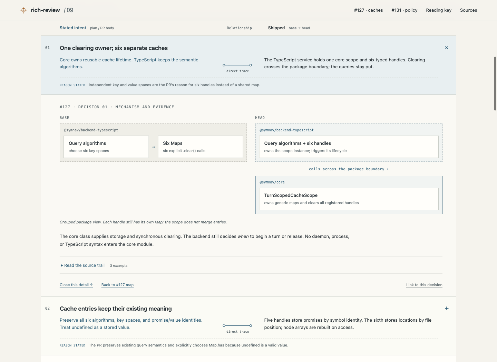 |
About half an hour, including source comparison, implementation, the isolated probe, and browser/evidence checks. | The complete source mirror is heavier than the teaching surface needs: 131 source pages, about 7 MiB. For a maintained product I would consider a shared source viewer with excerpts loaded on demand. Here the mirror makes both revisions inspectable offline and keeps the experiment independent of GitHub. | README# diff-of-intent ## Entry point ```sh open ~/projects/rich-review-v2/experiments/09-diff-of-intent/index.html ``` [Open the page](index.html). It works directly from the filesystem, including its local source evidence. No server, installation, network connection, or build is needed. Keep the experiment folder together. ## Kind page ## Subjects pr-127 and pr-131. Each compares its own supplied base and head. No other PR is analyzed. ## Declared choices - Role framing: a contributor tracing stated contracts into concrete implementation choices. - Box lenses: package ownership in both subjects; cache lifecycle in #127; configuration authority and consumer boundaries in #131. - Opening style: short ownership sketches, explicitly marked as simplified, followed by paired intent/shipped figures. - Shape: two decision maps, with 8 rows for #127 and 13 for #131. All 21 decisions and their reason status remain visible when details are closed. A row opens into its mechanism, then source excerpts and full source snapshots. - Navigation: linear reading, subject anchors, decision permalinks, native expandable rows, and source-to-decision return links. Direct decision links open the corresponding detail. No feedback collection or storage. - Trust posture: diff-of-intent. The shared plan is the stack destination; the PR body is a stated contract for this step. Bodies may be retrospective. “Unexplained” means no reason in the reviewed source corpus, not proof that the change was unauthorized. - Persona: a contributor who can read TypeScript but does not know this corner of symnav. - Representations used: paired nodes with trace connectors; nested package boxes; release sequence; cache-entry table; policy-to-consumer paths; timeout lanes; nested recovery scopes; changed-test correspondence; an executed source-method probe; line-addressable offline evidence. - Importance rule: one row per decision family, regardless of diff size. Failure selection, retained numeric seams, deleted tests, and transformed fixtures receive the same visible treatment as architectural ownership. All 66 changed files map back to these rows. File coverage is an audit aid, not a proof that every implicit choice has been identified. - Inputs used (beyond bundle): exact base/head implementation and test files in the four assigned worktrees; their contributor guides; the architecture spec; #131’s pre-existing `plans/005/daemon-policy.md`, policy implementation, validator, and policy tests; Git revision and clean-worktree checks; an isolated probe compiled from the actual TypeScript sources. Both complete patches, PR bodies, commit metadata, and file statistics were used. The overview files were inspected but contain no usable symbol output. No transcript or phase-specific implementation plan was supplied in the bundles. - Tech: generated static HTML, CSS, and small vanilla JavaScript for navigation. Python generates the page, source snapshots, and manifest. The optional Node probe uses TypeScript already installed in the worktree. No new dependencies were installed. - Built on earlier experiment(s): none. Earlier experiment folders were deliberately not read. ## What I tried I initially considered giving the plan, body, and implementation equal columns. That made a whole-stack destination look like a promise that each single PR should already fulfill. The final figures keep the plan horizon separate and trace the concrete promises into shipped behavior. I also dropped weighted flow widths before implementation: file counts and line counts would give a misleading weight to an intent claim. The useful result was more specific than “the code matches the description.” #127 explicitly changes the release barrier alongside its query-preservation contract. #131 wires existing policy without moving the mechanisms into the daemon package. It also changes which error can escape after an accepted reattachment, leaves some numeric seams, deletes a resource-derivation suite whose related package tests already existed, and transforms several storage fixtures. Those distinctions are visible before opening the evidence. I checked the error-selection observation with a source probe. After an original authenticated close and a later reattached-completion corruption error, the base returns the original error and the head returns the later one. A reattached submission failure still returns the original error in both versions. The probe executes the exact recovery methods with `executeOnce` stubbed; it does not simulate or run the daemon network. ## What I would drop The complete source mirror is heavier than the teaching surface needs: 131 source pages, about 7 MiB. For a maintained product I would consider a shared source viewer with excerpts loaded on demand. Here the mirror makes both revisions inspectable offline and keeps the experiment independent of GitHub. The opening could also be shorter. The decision maps carry more explanatory value than the headline and reading legend. ## What I would do next Compare the unexplained choices with timestamped implementation plans or transcripts, if available. Then test whether a reader can explain the release boundary and the two recovery scopes after reading only the maps. ## Time spent About half an hour, including source comparison, implementation, the isolated probe, and browser/evidence checks. ## Verification - Static checks passed for 132 HTML pages, local links and fragments, all 21 decision rows, all 66 file mappings, and all 131 source hashes. Diff totals match the supplied bundles. - Chromium checks passed through both a local preview server and `file://`. All 21 rows opened with Enter and closed with their return control. Source navigation reached the cited line and reopened the associated decision on return. - Expanded content was checked at 1440 × 1050 and 390 × 844. No document-width overflow or page errors were observed. Wide comparison tables scroll within their own region on a phone. - The filesystem browser run made no external requests. All four symnav worktrees remained clean. The temporary preview server was stopped. - No full symnav suite, real daemon/socket scenario, or end-to-end parity test was run. The artifact explains source and test contracts; it makes no whole-PR correctness claim. Recorded checks: [validation.json](validation.json). Probe output: [probe-results.json](probe-results.json). Screenshots are in [screenshots/](screenshots/). ## Files and reproduction - [content.py](content.py): authored claims, reasons, file mapping, and evidence needles. - [figures.py](figures.py): subject-specific mechanism figures. - [build.py](build.py): creates the page, complete source snapshots, and [manifest.json](manifest.json). - [style.css](style.css) and [app.js](app.js): presentation and browsing behavior. - [verify.py](verify.py): evidence/link completeness and read-only surface checks. - [probe.mjs](probe.mjs): reproducible cache and error-selection observations from source. - [brief.md](brief.md): the supplied brief, retained unchanged. Rebuilding and rerunning the source probe require the original bundles, assigned worktrees, and the worktree’s installed TypeScript package. Opening the finished page requires only this experiment folder. ```sh python3 ~/projects/rich-review-v2/experiments/09-diff-of-intent/build.py python3 ~/projects/rich-review-v2/experiments/09-diff-of-intent/verify.py node ~/projects/rich-review-v2/experiments/09-diff-of-intent/probe.mjs ``` |
| 08 | adversarial attempt 1: claude-opus → attempt 2: claude-opus → attempt 3: codex |
page | pr-131, pr-148 | Role framing: adversary required to present the evidence that limits each accusation. · Box lenses: package and module ownership, caller/daemon/worker topology, and which implementation each test suite reaches. · Opening style: paired orientation diagrams followed by three consequential qualifications: changed stimulus, changed failure outcome, and changed test reach. · Shape: two subject pyramids containing 14 visible decision records. Each names the choices, worst honest reading, counterevidence and an architectural question before opening mechanism and source detail. · Navigation: continuous reading, numbered subject links, native disclosures, return controls, and local source links with line anchors. · Trust posture: distinguish stated reasons from unexplained choices; keep unrequested behavior changes and weakened test stimuli explicit. No correctness verdict or reviewer-output storage. · Persona: a teammate who knows the repository but does not own the daemon corner. · Representations used: box maps, before/after tables, a recorded recovery trace selector, illustrative spill and routing selectors, source excerpts, full local snapshots and a changed-path map. · Importance rule: lead with changes to the PR's promise or evidence, then ownership boundaries and unexplained choices. No numerical ranking. · Inputs used (beyond bundle): the four worktrees and their local instructions, source and test bodies, architecture/policy/follow-up documents, moved-test inventory, and three probes reproduced in private temporary source copies. · Tech: static HTML, CSS and JavaScript; Python generation and evidence scripts; Playwright browser checks. Current authoring and verification used Codex. · Built on earlier experiment(s): none. Other experiment folders were ignored. Incomplete earlier attempts in this same folder supplied exploratory scripts; selected observations were independently checked and reproduced. Their remaining logs are retained but not used as page evidence. | 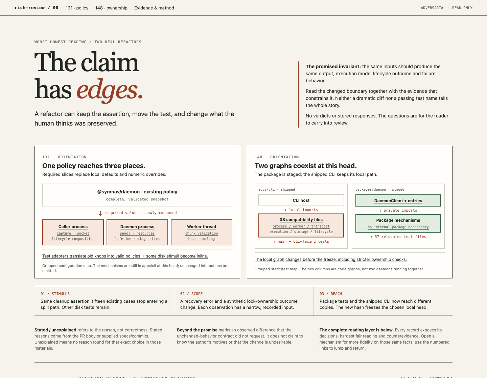 |
Approximately 35 minutes for this authoring and verification attempt, excluding the incomplete exploratory work inherited in the same folder. | The 213-path inventory is useful as an audit fallback but adds little to ordinary reading. The full first layer is also dense; its 14 records preserve the decisions at the cost of a long scroll. | README# adversarial ## Entry point Open [index.html](index.html) directly in a browser. Keep its adjacent assets and `sources/` folder together; no server, installation or network access is needed. ## Kind page ## Subjects pr-131, pr-148 ## Declared choices - Role framing: adversary required to present the evidence that limits each accusation. - Box lenses: package and module ownership, caller/daemon/worker topology, and which implementation each test suite reaches. - Opening style: paired orientation diagrams followed by three consequential qualifications: changed stimulus, changed failure outcome, and changed test reach. - Shape: two subject pyramids containing 14 visible decision records. Each names the choices, worst honest reading, counterevidence and an architectural question before opening mechanism and source detail. - Navigation: continuous reading, numbered subject links, native disclosures, return controls, and local source links with line anchors. - Trust posture: distinguish stated reasons from unexplained choices; keep unrequested behavior changes and weakened test stimuli explicit. No correctness verdict or reviewer-output storage. - Persona: a teammate who knows the repository but does not own the daemon corner. - Representations used: box maps, before/after tables, a recorded recovery trace selector, illustrative spill and routing selectors, source excerpts, full local snapshots and a changed-path map. - Importance rule: lead with changes to the PR's promise or evidence, then ownership boundaries and unexplained choices. No numerical ranking. - Inputs used (beyond bundle): the four worktrees and their local instructions, source and test bodies, architecture/policy/follow-up documents, moved-test inventory, and three probes reproduced in private temporary source copies. - Tech: static HTML, CSS and JavaScript; Python generation and evidence scripts; Playwright browser checks. Current authoring and verification used Codex. - Built on earlier experiment(s): none. Other experiment folders were ignored. Incomplete earlier attempts in this same folder supplied exploratory scripts; selected observations were independently checked and reproduced. Their remaining logs are retained but not used as page evidence. ## What I tried I followed suspicious changes back through both source versions and the tests that could actually distinguish them. This produced a concrete spill-stimulus loss in PR 131, a changed error after reattachment, and stricter registry identity matching in PR 148. It also weakened some accusations: recovery scopes were already separate on base, many removed tests have successors, and the shipped CLI retains integration coverage while mechanism tests move to the package. Broad inherited coverage and mutation results did not become a correctness score. The page uses bounded observations with explicit limits instead. There was no abandoned page implementation. A source audit corrected overstatements about custom timeout tests and diagnostic queue testing. [Verification details](verification.md) document the runs, browser checks, reproduction commands and limits. ## What I would drop The 213-path inventory is useful as an audit fallback but adds little to ordinary reading. The full first layer is also dense; its 14 records preserve the decisions at the cost of a long scroll. ## What I would do next Ask a fresh reader to explain which implementation each test family reaches and which observations narrow the PR's promise. Use the omissions to revise the first layer. ## Time spent Approximately 35 minutes for this authoring and verification attempt, excluding the incomplete exploratory work inherited in the same folder. |
| 07 | stack-timeline attempt 1: codex |
page, interactive | stack — `main` through #149, all 26 supplied PRs. No additional subjects. | Role framing: Learner following an architecture through a sequence of ownership decisions. · Box lenses: Static package/module ownership, plus runtime topology across the CLI process, daemon process, and worker thread. Ledger, spool, and resource ownership remain visible inside those lenses. · Opening style: The complete ownership change first, a marked lossy moving-rooms shorthand, then five chapter summaries and the package picture. Protocol, policy, deferred behavior, test changes, and the unexplained template rewrite are visible before descent. · Shape: The assigned timeline. Stable package outlines; responsibilities move between packages, transport/process rows acquire their own boundaries, and #148 shows the temporary coexistence of both implementations. · Navigation: Scrub, previous/next, playback, chapter jumps, a linear list of every move, box-specific histories, and source dialogs that return to the current position. Direct fragments such as `index.html#pr-148` select a frame. · Trust posture: Preserve recorded reasons and expose accompanying choices. Six entries are marked unexplained; a generic migration reason does not establish that a removed CLI test has an equivalent replacement. No correctness verdicts or response storage. · Persona: A teammate who knows symnav but has not followed this daemon refactor. · Representations used: Morphing package map, runtime request schematic, milestone rail, mechanism sequences, decision/reason cards, policy tables, removed-test correspondence table, and pinned source excerpts/patches. · Importance rule: Boundary movement and the staging-versus-cutover distinction first. Deferred behavior, changed protocol compatibility, test timing/deletions, and missing rationale receive explicit decisions alongside architecture choices. · Inputs used (beyond bundle): Read-only git objects at every PR head; per-PR diffs and file inventories; source at the PR-provided anchors; final policy and follow-up specs; selected core/client/runtime code; timeout commits; removed status/stop scenarios and related package tests. Both worktree contributor guides were read. The bundle's overview files offered no usable symbol inventory and were not used as evidence. Details are in [inspection-notes.md](inspection-notes.md). · Tech: Plain HTML/CSS/JavaScript and a small SVG connector. Local Python generates the offline evidence data. No runtime dependencies, external fonts, services, or generated bitmap assets. · Built on earlier experiment(s): none. Earlier experiment contents were deliberately ignored. The supplied brief and harness files in this experiment folder were retained. | 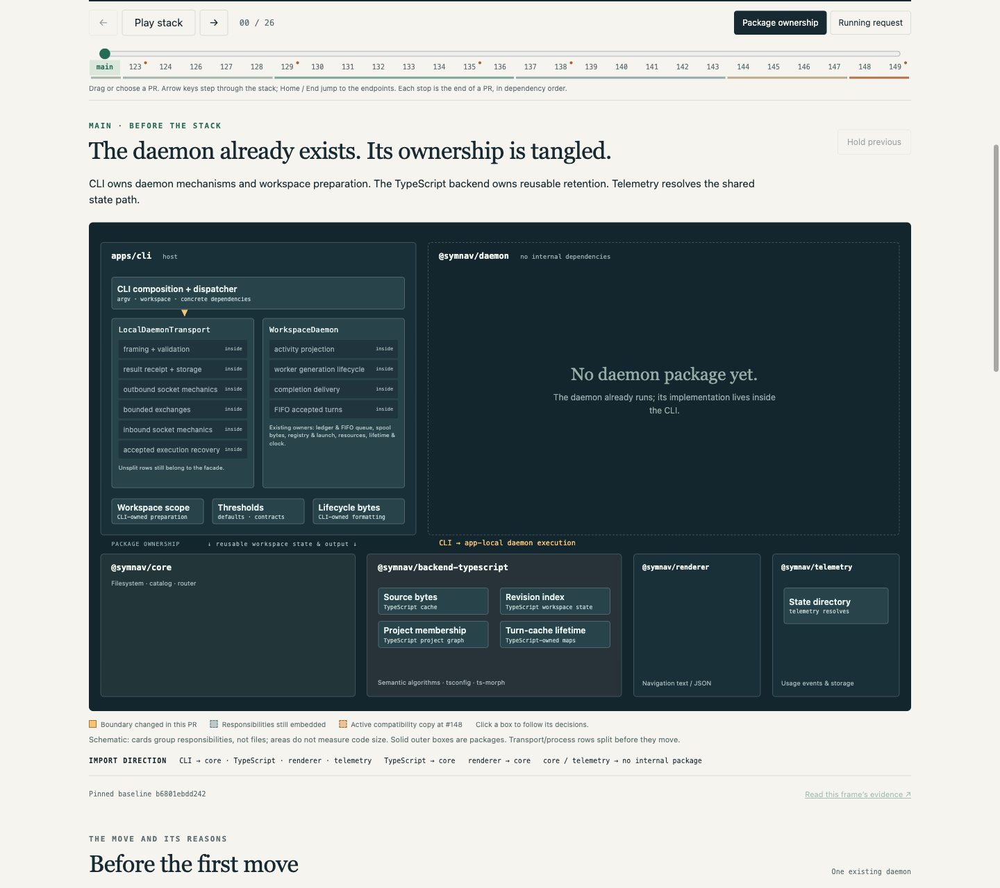 |
Approximately 35 minutes, including source inspection, implementation, browser checks, and screenshots. Harness: Codex. No sub-agents. | Automatic playback. One fixed dwell time does not match the uneven reading load across these PRs. Manual scrubbing and holding the preceding frame do more explanatory work. | README# stack-timeline ## Entry point Open [index.html](index.html) directly. On this Mac: ```sh open ~/projects/rich-review-v2/experiments/07-stack-timeline/index.html ``` No install, build, server, or network connection is required. The page was tested with networking disabled. Optional links to full GitHub source files require a connection; excerpts, PR bodies, and complete PR patches are included locally. Start at `main`, drag the slider through 26 PRs, or choose a chapter. Arrow keys step, Home/End reach the endpoints, and **Hold previous** temporarily shows the preceding frame. Choose **Running request** for the process/thread view. Click a diagram box to follow its decision history. The last two stops are the important comparison: #148 stages package mechanisms while the CLI still uses copies; #149 switches the caller and removes those copies. ## Kind page, interactive ## Subjects stack — `main` through #149, all 26 supplied PRs. No additional subjects. ## Declared choices - Role framing: Learner following an architecture through a sequence of ownership decisions. - Box lenses: Static package/module ownership, plus runtime topology across the CLI process, daemon process, and worker thread. Ledger, spool, and resource ownership remain visible inside those lenses. - Opening style: The complete ownership change first, a marked lossy moving-rooms shorthand, then five chapter summaries and the package picture. Protocol, policy, deferred behavior, test changes, and the unexplained template rewrite are visible before descent. - Shape: The assigned timeline. Stable package outlines; responsibilities move between packages, transport/process rows acquire their own boundaries, and #148 shows the temporary coexistence of both implementations. - Navigation: Scrub, previous/next, playback, chapter jumps, a linear list of every move, box-specific histories, and source dialogs that return to the current position. Direct fragments such as `index.html#pr-148` select a frame. - Trust posture: Preserve recorded reasons and expose accompanying choices. Six entries are marked unexplained; a generic migration reason does not establish that a removed CLI test has an equivalent replacement. No correctness verdicts or response storage. - Persona: A teammate who knows symnav but has not followed this daemon refactor. - Representations used: Morphing package map, runtime request schematic, milestone rail, mechanism sequences, decision/reason cards, policy tables, removed-test correspondence table, and pinned source excerpts/patches. - Importance rule: Boundary movement and the staging-versus-cutover distinction first. Deferred behavior, changed protocol compatibility, test timing/deletions, and missing rationale receive explicit decisions alongside architecture choices. - Inputs used (beyond bundle): Read-only git objects at every PR head; per-PR diffs and file inventories; source at the PR-provided anchors; final policy and follow-up specs; selected core/client/runtime code; timeout commits; removed status/stop scenarios and related package tests. Both worktree contributor guides were read. The bundle's overview files offered no usable symbol inventory and were not used as evidence. Details are in [inspection-notes.md](inspection-notes.md). - Tech: Plain HTML/CSS/JavaScript and a small SVG connector. Local Python generates the offline evidence data. No runtime dependencies, external fonts, services, or generated bitmap assets. - Built on earlier experiment(s): none. Earlier experiment contents were deliberately ignored. The supplied brief and harness files in this experiment folder were retained. ## What I tried I separated the stack into five phases, then pinned every stop to its actual git head. Reading the final two PRs ruled out treating package relocation as an immediate production cutover: the map needs two copies at #148. It also needs visible internal splits during #137–147, when package ownership has not moved yet. The page carries 131 decision entries, all 44 recorded policy values/recipes, and five intentional missing deadlines. It includes the PR's reasons plus additional source-observed choices: a template rewrite, fixture synchronization, enlarged test budgets, test relocation, deleted CLI scenarios, changed pressure assertions, inspector failure behavior, and narrowed policy exports. I tried a narrower diagram on phones. It clipped the dense labels, so the package map now scrolls horizontally within its own container; the runtime view stacks vertically. I retained the removed-test-title scan only as a marked lossy inventory, supplemented by a manual ten-scenario comparison. No replacement experiment was needed. ## What I would drop Automatic playback. One fixed dwell time does not match the uneven reading load across these PRs. Manual scrubbing and holding the preceding frame do more explanatory work. ## What I would do next Check whether a fresh reader can explain why #148 and #149 are separate steps. Then deepen the ten removed-test correspondences with assertion-level tracing, keeping the original CLI entry points distinct from package-level tests. ## Time spent Approximately 35 minutes, including source inspection, implementation, browser checks, and screenshots. Harness: Codex. No sub-agents. ## Evidence and limits Baseline: `b6801ebdd2421d0ca2e4bdd61ec0f04c24ddd73e`. Tip: `d07002357d3e9596bfaae910a1ac63b77981620b`. Each preceding PR head was verified as an ancestor of the next. The timeline uses dependency order, not calendar time. The upper summaries introduce the same choices that the decision cards and evidence refine. A selected stop shows every recorded PR decision plus the additional inspected choices, including test changes. Policy choices are expanded at #130–131; the ten removed CLI scenarios are expanded at #149. The original PR notes and complete patches remain available beneath the explanation. This is an authored explanation with a reproducible evidence bundle, not an exhaustive semantic audit. The diagrams deliberately group files, omit branches, and do not measure code size. Removed-title counts cannot establish lost coverage. Reasons absent from the inspected material may exist in an unavailable conversation. Symnav itself was not executed or tested for behavior parity; both supplied worktrees remained clean. ## Validation JavaScript syntax and evidence integrity checks passed. Chromium checks covered all 27 positions, decision counts, #148's two copies, #149's removal, playback, arrow/Home/End navigation, keyboard comparison, both lenses, responsibility histories, source dialogs, and closing/returning. The policy and test-comparison row counts matched their source inventories. Direct `file:` opening with networking disabled passed. All 27 frames were checked at desktop and phone widths; the final results contain no page errors, clipped map labels, or document overflow. See [browser-checks.json](browser-checks.json) and [inspection-notes.md](inspection-notes.md). Screenshots are in [screenshots/](screenshots/). ## Files and rebuilding - `index.html`, `style.css`, `app.js`: interactive artifact. - `content.js`: authored stage explanations and responsibility histories. - `data.js`: 26 pinned frames, decisions, source excerpts, inventories, policy rows, and test correspondences. - `evidence/`: complete per-PR patches and bodies, plus policy/architecture/follow-up specs. - `build_data.py`: regenerates the evidence data using only read-only git commands against the supplied worktree. To regenerate the evidence bundle in this checkout: ```sh python3 ~/projects/rich-review-v2/experiments/07-stack-timeline/build_data.py ``` Regeneration is optional; the included page opens independently of the worktrees. |
| 06 | hub-and-spokes attempt 1: claude-opus → attempt 2: claude-opus → attempt 3: codex |
page | pr-148. One source excerpt and a comparison column from the #149 stack tip provide cutover context; #149 is not reviewed as another subject. | Role framing: architecture guide explaining ownership, composition, and the choices a teammate needs to understand. · Box lenses: static package ownership; runtime processes, threads, and object lifetimes. The host-process client is distinct from the daemon-process coordinator. · Opening style: picture first, with the new package hub beside the active CLI hub. The star explicitly groups direct and indirect dependencies; the constructor matrix supplies precise wiring. · Shape: hub-and-spokes, with DaemonClient at the center and nine dependency families around it. The CLI dispatcher and remote process coordinator explain the surrounding boundaries. · Navigation: a linear page of top-level decision cards, ten deeper sections, and expandable evidence; nonlinear diagram links, card links, section navigation, and return buttons. Eighteen decision groups carry the facts before descent. Mixed groups separately mark stated and unexplained choices. · Trust posture: compare intent, source, and recorded behavior. No correctness verdict. An omitted PR-body detail is not automatically unrequested: the policy document explicitly plans the retirement of `policy-testing`. · Persona: a teammate who knows the repository but not this daemon corner. · Representations used: interactive SVG hub map, package before/after diagram, responsibility and routing matrices, object-lifetime strips, recorded call sequence, idle timeline, copy inventory, test-declaration inventory, commit bars, and 41 embedded source excerpts. · Importance rule: first, what users run and which tests exercise it; second, the client contract and shared lifetimes; third, local structural choices. Unexplained choices appear first within each tier. · Inputs used (beyond bundle): head/base source and tests; Git history for the 45 commits; all four `plans/005` documents; contributor rules; stored executions using the real CLI executor and a generic fixture executor; built-module resolution probes; a narrow #149 wiring excerpt. The bundle's overview files contain headings but no usable symbol output. · Tech: plain HTML/CSS/JavaScript and SVG; Python packs local evidence. The delivered page reads only embedded data and local assets. It has no comment storage or verdict controls. · Built on earlier experiment(s): none. Other experiment folders were ignored. I continued the unfinished artifact already in **this same folder**, retained its recordings, audited its claims, and completed it. `harness.txt` records earlier Claude Opus attempts and the final Codex pass. | 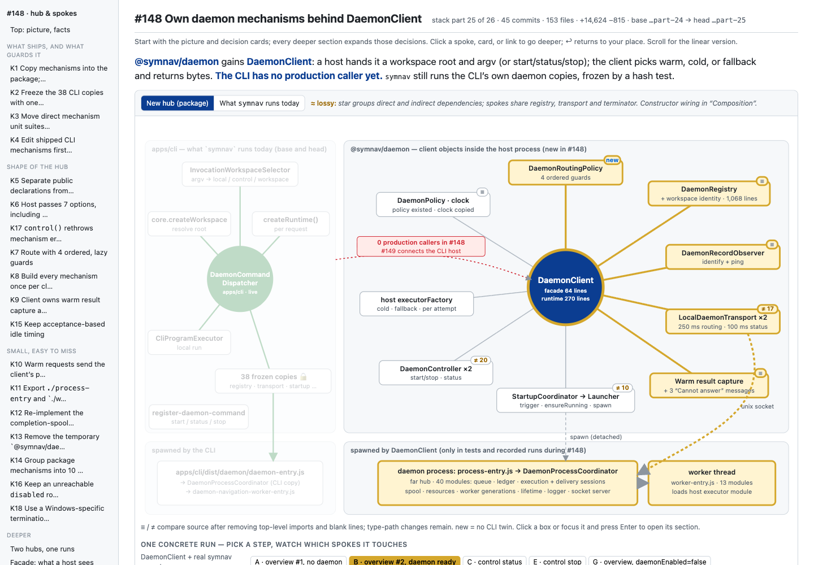 |
About 1 hour 45 minutes elapsed across attempts, including interruptions; roughly 25 minutes for the final Codex completion and audit. | The 45-commit bar chart and exhaustive module lists compete with the hub for attention. I would move them into an evidence appendix. Eighteen complete top-level cards are also a substantial reading cost; this version favors keeping every decision visible over a short opening. | README# hub-and-spokes ## Entry point Open [index.html](index.html), or on this Mac: ```sh open ~/projects/rich-review-v2/experiments/06-hub-and-spokes/index.html ``` The page works offline with its adjacent `app.js`, `data.js`, and `style.css`. No installation, server, account, or external service is required. JavaScript must be enabled. The temporary browser-check server has been stopped. Start with the hub map, try a recorded request, then follow a spoke or decision card. Every diagram node supports keyboard navigation; the return button restores focus to its origin. Wide diagrams and tables scroll horizontally on small screens. ## Kind page ## Subjects pr-148. One source excerpt and a comparison column from the #149 stack tip provide cutover context; #149 is not reviewed as another subject. PR 148 adds the package-owned DaemonClient while the shipped CLI continues through its own frozen compatibility graph. The page keeps that distinction visible throughout. ## Declared choices - Role framing: architecture guide explaining ownership, composition, and the choices a teammate needs to understand. - Box lenses: static package ownership; runtime processes, threads, and object lifetimes. The host-process client is distinct from the daemon-process coordinator. - Opening style: picture first, with the new package hub beside the active CLI hub. The star explicitly groups direct and indirect dependencies; the constructor matrix supplies precise wiring. - Shape: hub-and-spokes, with DaemonClient at the center and nine dependency families around it. The CLI dispatcher and remote process coordinator explain the surrounding boundaries. - Navigation: a linear page of top-level decision cards, ten deeper sections, and expandable evidence; nonlinear diagram links, card links, section navigation, and return buttons. Eighteen decision groups carry the facts before descent. Mixed groups separately mark stated and unexplained choices. - Trust posture: compare intent, source, and recorded behavior. No correctness verdict. An omitted PR-body detail is not automatically unrequested: the policy document explicitly plans the retirement of `policy-testing`. - Persona: a teammate who knows the repository but not this daemon corner. - Representations used: interactive SVG hub map, package before/after diagram, responsibility and routing matrices, object-lifetime strips, recorded call sequence, idle timeline, copy inventory, test-declaration inventory, commit bars, and 41 embedded source excerpts. - Importance rule: first, what users run and which tests exercise it; second, the client contract and shared lifetimes; third, local structural choices. Unexplained choices appear first within each tier. - Inputs used (beyond bundle): head/base source and tests; Git history for the 45 commits; all four `plans/005` documents; contributor rules; stored executions using the real CLI executor and a generic fixture executor; built-module resolution probes; a narrow #149 wiring excerpt. The bundle's overview files contain headings but no usable symbol output. - Tech: plain HTML/CSS/JavaScript and SVG; Python packs local evidence. The delivered page reads only embedded data and local assets. It has no comment storage or verdict controls. - Built on earlier experiment(s): none. Other experiment folders were ignored. I continued the unfinished artifact already in **this same folder**, retained its recordings, audited its claims, and completed it. `harness.txt` records earlier Claude Opus attempts and the final Codex pass. ## What I tried Kept the existing dual-hub design because a single package star hides the most consequential fact: the CLI has not switched to DaemonClient. The saved executions let the reader follow cold, warm, fallback, status, stop, and disabled paths without starting a daemon from the page. The exploratory static import graph overestimated executed module membership by following conditional dynamic imports. Runtime diagrams therefore use recorded Node resolution results; the static graph supplies the facade's type-dependency closure. Its limitations are documented in `analysis/graph.py`. The first draft called ten copied files different “beyond imports.” Three differences are only type import/re-export paths left by the normalizer. The page now explains the normalization and avoids treating text differences as behavioral differences. Git and Python difflib also align four changed lines differently; both totals are identified where used. A broader policy-document check changed the initial attribution of the removed `policy-testing` subpath: its retirement was planned. Documented migration choices and unexplained implementation choices are now separated on their cards. The retained idle behavior is also shown alongside the functional spec and deferred follow-up. Fixed inactive links on the old hub, keyboard activation and return focus, mobile page overflow, initial mobile centering on DaemonClient, and clipped diagram labels. Early screenshots are preserved under `analysis/wip-screenshots/`; final screenshots are in [screenshots/](screenshots/). ## What I would drop The 45-commit bar chart and exhaustive module lists compete with the hub for attention. I would move them into an evidence appendix. Eighteen complete top-level cards are also a substantial reading cost; this version favors keeping every decision visible over a short opening. ## What I would do next Have a fresh reader explain which implementation ships, where a local replay is allowed, and which objects survive between client calls. Then shorten the top cards only where the diagrams already carry the same fact. ## Time spent About 1 hour 45 minutes elapsed across attempts, including interruptions; roughly 25 minutes for the final Codex completion and audit. ## Verification and evidence limits - **68 daemon checks passed:** client execution/control/routing, host contract, package and entry boundaries, and public imports. **Two compatibility-copy checks passed.** Exact output is saved in [verification-daemon.txt](analysis/verification-daemon.txt) and [verification-compatibility.txt](analysis/verification-compatibility.txt). The full suite and Windows execution were not run. - All **41 embedded excerpts** match their worktree source lines. The three saved real-executor scenarios—cold, warm, and disabled—match across base dispatcher, head dispatcher, and head DaemonClient on mode, exit code, output size, and stored fingerprint. See [verification-data.txt](analysis/verification-data.txt). - Browser checks exercised all **16 replay controls**, **20 diagram navigation/return paths**, expandable evidence, and widths of 390, 768, 1100, and 1440 pixels. No missing anchor targets, page errors, or clipped SVG text remained. The page requested no external resources. See [verification-browser.json](analysis/verification-browser.json). The card/section check validates references; it is not a semantic proof of the pyramid or a comprehension score. - Recordings are real executions retained from earlier attempts, not live execution in the page. Highlighting aggregates client calls and correlates daemon-log timestamps; that simplification is marked beside the player. Durations include instrumentation and are not a benchmark. Output fingerprints retain the first 16 hex characters of SHA-256 over stream names and bytes; a matching fixture is not a whole-system parity result. - Static test counts describe declarations and `expect` calls. `it.each` counts once in that inventory, regardless of generated case count. Counts do not establish coverage or assertion strength. - “Unexplained” means no reason was found in the inspected PR body, commit messages, plans, and contributor rules. It does not claim that the author had no reason. - The symnav head and base worktrees remain clean. No symnav source, branch, or commit was changed during this completion pass. ## Rebuilding the evidence bundle The page already contains the evidence needed to open it. With the provided worktrees and saved `analysis/` outputs still present, run from this folder: ```sh python3 build.py ``` This regenerates `data.js` from saved analysis and source excerpts; it does not rerun the recorded daemon sessions. The build checks these pinned revisions: | Tree | Revision | | --- | --- | | base | `ba53c8e1662fd86d198b95321c90d9c9bef10184` | | head | `20838f8dbf413e04767543eb2380d0d114da6c60` | The probe and inventory scripts are retained in `analysis/` for inspection. They are research receipts rather than a general-purpose review generator. |
| 05 | boxes-static-vs-runtime attempt 1: codex → attempt 2: codex |
page | pr-131 only — Route daemon thresholds through centralized policy. | Role framing: learner examining ownership and mechanism, with explicit evidence for departures from the PR narrative. · Box lenses: static package/module dependencies and runtime process/thread topology. Both show changed edges. Static arrows point toward dependencies; runtime arrows follow data. The daemon worker is nested inside the daemon process, while all three runtime actors execute app-owned implementations. · Opening style: a deliberately simplified before/after wiring picture. The central distinction is that the snapshot already traveled across launch boundaries; #131 makes more consumers use it. · Shape: a complete decision index followed by two coordinated maps and expandable mechanisms. Twelve decision groups cover required inputs, output, resources, clocks, timeout purpose, retry scopes, error selection, fetch failure handling, adapters, changed fixture conditions, test retirement, and source-scan enforcement. · Navigation: linear reading or direct jumps from cards and diagram boxes into mechanisms, with return links. Shared Before / After / Changes controls and concern highlighting. A source modal provides base, head and diff without leaving the page. Deep links open the target mechanism. · Trust posture: compare the supplied PR narrative with both revisions. Stated reasons link to the PR or policy record. Specific unexplained choices have the same card treatment as the architectural choices. No verdict, response collection or comment storage. · Persona: a teammate who knows symnav but does not know this daemon corner. · Representations used: native SVG diagrams, a before/after intuition strip, shared revision/focus controls, nested retry-scope diagram, capacity and timeout panels, comparison tables, a searchable 39-field policy record, captured source with line numbers, and a manifest of all 60 changed files. · Importance rule: ownership boundaries first, followed by distinct operational purposes and unexplained behavior/test changes. Test-adapter effects are visible in the complete index rather than first appearing in the evidence layer. · Inputs used (beyond bundle): both read-only worktrees; all 19 changed production files and the changed tests/helpers/benchmark/meta-test; unchanged policy implementation and policy tests; policy test factory; program composition; process snapshot test and record observer; `AGENTS.md` dependency table; `plans/005/daemon-policy.md`; architecture functional spec; installed Node type documentation for socket inactivity timeout semantics. From the bundle: PR body and six commit messages, full diff, file statistics and repository rules. The supplied before/after overview files contained path headings but no symbol overviews, so they did not provide usable mechanism evidence. · Tech: HTML, CSS, JavaScript and SVG, with no page dependencies. Python captures evidence into a local JavaScript data file. Playwright/Chromium checks the artifact. Harness: Codex, one worker; no delegated agents. · Built on earlier experiment(s): none. Earlier experiment contents were deliberately ignored. | 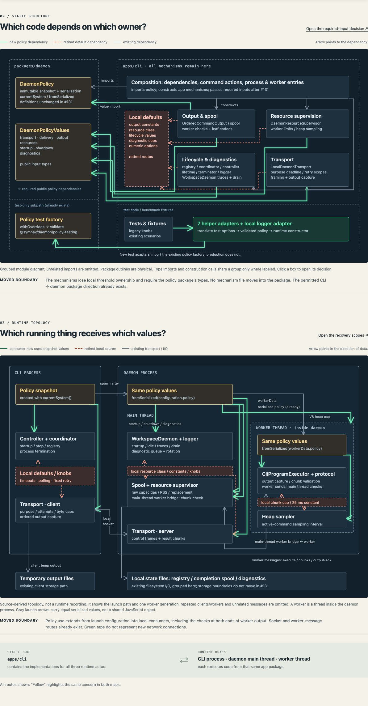 |
About 30 minutes, including source investigation, implementation, browser checks and visual inspection. | The in-page 60-file manifest adds more audit convenience than understanding. I would keep the captured files but move that manifest into a separate evidence page. The static map's parallel dependency routes are still busy; the concern filter helps, but a smaller set of diagrams might be easier to scan. | README# boxes-static-vs-runtime ## Entry point Open [index.html](index.html), or run: ```sh open ~/projects/rich-review-v2/experiments/05-boxes-static-vs-runtime/index.html ``` The page works directly from disk. No server, installation, account, or network connection is needed. [Both maps in one screenshot](screenshots/01-maps.png). ## Kind page ## Subjects pr-131 only — Route daemon thresholds through centralized policy. Base: `b3a6c4fa5dcf96223765aa147a9e094cd4a51b0e` Head: `b100221db48754656328391b878299c5a0bab443` ## Declared choices - Role framing: learner examining ownership and mechanism, with explicit evidence for departures from the PR narrative. - Box lenses: static package/module dependencies and runtime process/thread topology. Both show changed edges. Static arrows point toward dependencies; runtime arrows follow data. The daemon worker is nested inside the daemon process, while all three runtime actors execute app-owned implementations. - Opening style: a deliberately simplified before/after wiring picture. The central distinction is that the snapshot already traveled across launch boundaries; #131 makes more consumers use it. - Shape: a complete decision index followed by two coordinated maps and expandable mechanisms. Twelve decision groups cover required inputs, output, resources, clocks, timeout purpose, retry scopes, error selection, fetch failure handling, adapters, changed fixture conditions, test retirement, and source-scan enforcement. - Navigation: linear reading or direct jumps from cards and diagram boxes into mechanisms, with return links. Shared Before / After / Changes controls and concern highlighting. A source modal provides base, head and diff without leaving the page. Deep links open the target mechanism. - Trust posture: compare the supplied PR narrative with both revisions. Stated reasons link to the PR or policy record. Specific unexplained choices have the same card treatment as the architectural choices. No verdict, response collection or comment storage. - Persona: a teammate who knows symnav but does not know this daemon corner. - Representations used: native SVG diagrams, a before/after intuition strip, shared revision/focus controls, nested retry-scope diagram, capacity and timeout panels, comparison tables, a searchable 39-field policy record, captured source with line numbers, and a manifest of all 60 changed files. - Importance rule: ownership boundaries first, followed by distinct operational purposes and unexplained behavior/test changes. Test-adapter effects are visible in the complete index rather than first appearing in the evidence layer. - Inputs used (beyond bundle): both read-only worktrees; all 19 changed production files and the changed tests/helpers/benchmark/meta-test; unchanged policy implementation and policy tests; policy test factory; program composition; process snapshot test and record observer; `AGENTS.md` dependency table; `plans/005/daemon-policy.md`; architecture functional spec; installed Node type documentation for socket inactivity timeout semantics. From the bundle: PR body and six commit messages, full diff, file statistics and repository rules. The supplied before/after overview files contained path headings but no symbol overviews, so they did not provide usable mechanism evidence. - Tech: HTML, CSS, JavaScript and SVG, with no page dependencies. Python captures evidence into a local JavaScript data file. Playwright/Chromium checks the artifact. Harness: Codex, one worker; no delegated agents. - Built on earlier experiment(s): none. Earlier experiment contents were deliberately ignored. ## What I tried The page separates two meanings of “daemon”: the package containing policy definitions and the running daemon process containing app-owned mechanisms. Keeping the launch/worker-data edges gray makes the change in local policy consumption visible without suggesting new processes or a policy service. I kept diagram geometry stable across revisions. An early static drawing routed green edges behind the retired-defaults box, hiding the connection being explained; those edges now route around it. Source inspection also changed the story: the two delivery recovery scopes already existed in base, even though the PR describes moving away from a shared boolean. The source pass surfaced details that now appear in the top index: later completion errors can replace the original accepted-close error; the fetch path retains a terminal failure continuation; test adapters alter tiny-limit and directory conditions; the workspace helper retains an unused memory-cap option; benchmark resource records gain replacement fields; and the local derivation suite is deleted while package policy tests already exist. These are source observations with rationale gaps, not correctness verdicts. The browser checks in [validation.json](validation.json) passed: both revision diagrams, shared focus, diagram-to-mechanism links, source tabs and Escape handling, direct deep links, source/anchor integrity, policy filtering, all 60 changed-file links, SVG text bounds, and a 390 px mobile layout. The page issued no HTTP(S) requests and produced no JavaScript page errors. The screenshots were visually inspected; map screenshots suppress sticky positioning so it does not obscure their headings. No symnav test suite or daemon runtime trace was run. Both worktrees had clean `git status --short` output at the end. The runtime diagram is explicitly identified as source-derived; the error and fetch explanations are control-flow readings. Grouped module diagrams omit unrelated imports, and the topology shows one launch path and one worker generation. Captured evidence is in [evidence.js](evidence.js): all 60 changed files in both revisions, their diffs, and 10 unchanged context files. Its totals match the supplied diff: +1,298 / −544. The policy implementation is byte-identical between revisions. Regenerate it with `python3 build_evidence.py` from this folder while the input bundle and worktrees remain available. [check_page.mjs](check_page.mjs) documents the optional browser-check invocation; Playwright is needed only for those checks. ## What I would drop The in-page 60-file manifest adds more audit convenience than understanding. I would keep the captured files but move that manifest into a separate evidence page. The static map's parallel dependency routes are still busy; the concern filter helps, but a smaller set of diagrams might be easier to scan. ## What I would do next Try small multiples for the static consumer groups while retaining the shared runtime map. A narrowly recorded before/after spill example could make the changed cleanup-test conditions easier to grasp than the current table. ## Time spent About 30 minutes, including source investigation, implementation, browser checks and visual inspection. |
| 04 | textbook-chapter attempt 1: claude-opus → attempt 2: claude-opus |
page | pr-127. Used as context only: #126 (base; history of `ProjectGraph.releaseTransientResources`), #117 (origin of the un-awaited call), #149 (stack tip; checked that the scope and service files are unchanged). | Role framing: learner / textbook. Chapter 4 of 26, learning goals, key terms, one worked example with predict-then-reveal rows, 12 end-of-chapter exercises (answers revealed locally, nothing stored). · Box lenses: static structure (packages → modules, changed edges lit, Fig 4.4) and lifecycle/ownership ("who decides what" table, cache-entry state machine Fig 4.6, turn timeline Fig 4.1). Runtime topology only as context (daemon worker thread). · Opening style: before/after in one frame (Fig 4.0), then motivating failure (stale answer, real run with emptying disabled), then a whiteboard metaphor marked lossy. · Shape: pyramid. 4.0 is the complete top; 4.1–4.3 intuition; 4.4–4.8 mechanism; 4.9–4.10 decisions and tests; 4.11 code; 4.12 exercises. · Navigation: narrative with exits. Sticky TOC grouped by depth; every top-layer item links down; an "↩ Back to <section>" button returns to the exact scroll position (checked in browser). · Trust posture: trusting explainer plus test honesty. Every PR-body claim is checked against a run or a test; red/green history verified by running commits. · Persona: teammate who knows symnav but not the TypeScript semantic-query corner. · Representations used: SVG before/after diptych; turn timeline; module diagram; ownership table; real cache-key table; state machine; refresh sequence; release call chains on three builds; recorded 18-step session table with a six-cell cache "rack" per step; results table from three probes; traced daemon-consequence flow; commit strip with test-run chips; 12 decision cards; code excerpts; metaphor figure and table; quiz. · Importance rule: changes behavior → no stated reason → crosses a package or public surface → kept and newly pinned. · Inputs used (beyond bundle): source at main, #126, #127 and #149 worktrees; `git log -L` / `git show` on the six PR commits, #126 commits and #117; #126 PR body from `inputs/stack/pr.json`; `plans/005` architecture and follow-ups specs at #127 and #149; real runs (below). · Tech: hand-written HTML/CSS/inline SVG, vanilla JS; recorded JSON embedded at build time; Node probe scripts against built worktree `dist/`. · Built on earlier experiments: none. Folders 01–05 existed without READMEs or artifacts when this run started; not read. | 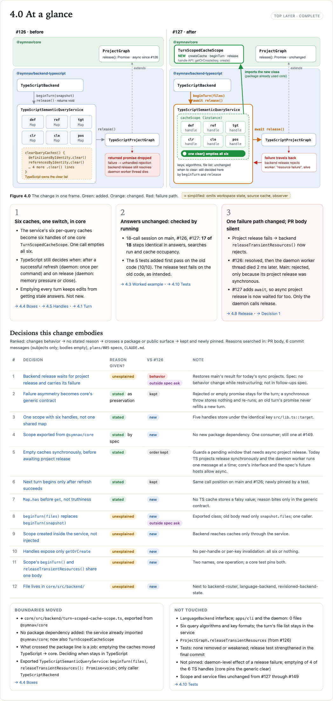 |
About 50 minutes wall-clock (01:39–02:28 +03). | 4.2 metaphor: its table restates the mechanism; low value for a repo-familiar reader. | README# textbook-chapter
## Entry point
`open ~/projects/rich-review-v2/experiments/04-textbook-chapter/index.html`
Single static file, no network. Rebuild after editing `src/chapter.html` or probe output: `node build.mjs`.
## Kind
page
## Subjects
pr-127. Used as context only: #126 (base; history of `ProjectGraph.releaseTransientResources`), #117 (origin of the un-awaited call), #149 (stack tip; checked that the scope and service files are unchanged).
## Declared choices
- Role framing: learner / textbook. Chapter 4 of 26, learning goals, key terms, one worked example with predict-then-reveal rows, 12 end-of-chapter exercises (answers revealed locally, nothing stored).
- Box lenses: static structure (packages → modules, changed edges lit, Fig 4.4) and lifecycle/ownership ("who decides what" table, cache-entry state machine Fig 4.6, turn timeline Fig 4.1). Runtime topology only as context (daemon worker thread).
- Opening style: before/after in one frame (Fig 4.0), then motivating failure (stale answer, real run with emptying disabled), then a whiteboard metaphor marked lossy.
- Shape: pyramid. 4.0 is the complete top; 4.1–4.3 intuition; 4.4–4.8 mechanism; 4.9–4.10 decisions and tests; 4.11 code; 4.12 exercises.
- Navigation: narrative with exits. Sticky TOC grouped by depth; every top-layer item links down; an "↩ Back to <section>" button returns to the exact scroll position (checked in browser).
- Trust posture: trusting explainer plus test honesty. Every PR-body claim is checked against a run or a test; red/green history verified by running commits.
- Persona: teammate who knows symnav but not the TypeScript semantic-query corner.
- Representations used: SVG before/after diptych; turn timeline; module diagram; ownership table; real cache-key table; state machine; refresh sequence; release call chains on three builds; recorded 18-step session table with a six-cell cache "rack" per step; results table from three probes; traced daemon-consequence flow; commit strip with test-run chips; 12 decision cards; code excerpts; metaphor figure and table; quiz.
- Importance rule: changes behavior → no stated reason → crosses a package or public surface → kept and newly pinned.
- Inputs used (beyond bundle): source at main, #126, #127 and #149 worktrees; `git log -L` / `git show` on the six PR commits, #126 commits and #117; #126 PR body from `inputs/stack/pr.json`; `plans/005` architecture and follow-ups specs at #127 and #149; real runs (below).
- Tech: hand-written HTML/CSS/inline SVG, vanilla JS; recorded JSON embedded at build time; Node probe scripts against built worktree `dist/`.
- Built on earlier experiments: none. Folders 01–05 existed without READMEs or artifacts when this run started; not read.
## What I tried
- Planned the worked example as a walk through the PR's own fake-collaborator test. Switched to one real session on three builds after `git log -L` showed the release call path changed in #126. The three-build comparison became the spine.
- Framed decision 1 as "fixes a #126 regression" until `release-window.mjs` showed main also resolves early for async project release. Reframed: restores main for today's synchronous projects, new contract for async ones.
- Tried to reach a cached async rejection with real files. Not reachable: unknown symbols resolve empty or throw inside the factory. The page cites the PR's fake-state test for that path and says so.
- Did not run the full daemon to observe replacement causes. Figure 4.9 is traced from code and labelled.
- Rule-4 audit on the draft found deeper facts missing from the top: the memory-pressure trigger, future hosts, and pinning gaps. I added them to 4.0. I removed two deeper additions instead of lifting them: a #128 `WorkspaceSession` mention and a repo-rule citation beside an unexplained decision, which read like a supplied reason.
- First draft said "new import edge backend-typescript → core". The service already imported core, so I reworded it: no package dependency changed; what crossed the package line is the job of emptying caches.
- Playwright blocks `file://`, so I checked rendering through a temporary local HTTP server. Layout fixes came from those screenshots: crossing edges in Fig 4.4, an arrow through a box in Fig 4.0, overlapping state-machine labels.
## What I would drop
- 4.2 metaphor: its table restates the mechanism; low value for a repo-familiar reader.
- Decisions 10–12 as separate rows and cards: collapse into one "API shape" row.
- 4.11 excerpts of the service diff: partly duplicate the worked example and Fig 4.8.
- Exercises 10–12 (open answers): nothing checks them beyond a model answer.
- Page length (~19k px) is the cost of the depth; the top layer alone is about one screen of figure plus one table.
## What I would do next
Run the full daemon with an injected release failure and replace traced Fig 4.9 with a recorded diagnostic log. Then give 4.0 alone to a fresh reader and score the exercises, to test whether the top layer is complete.
## Time spent
About 50 minutes wall-clock (01:39–02:28 +03).
## Real vs illustrative
| Element | Kind | How |
| --- | --- | --- |
| Worked Example 4.1, top-layer "17 of 18" | real | `probe/semantics.mjs` on `worktrees/main`, `pr-127-base`, `pr-127-head`; counts via observer hooks, cache sizes read from live objects; failure injected through the observer hook inside real project release |
| Stale answer (4.1) | real, sabotaged in memory | same probe, `clearing-disabled` replaces `cacheScope.beginTurn` with a no-op |
| Table 4.1 col 2 | real code, fake async project graph | `probe/release-window.mjs` (same setup as the PR's own test) |
| Table 4.1 col 3 | real daemon worker thread | `probe/worker-release.mjs` starts the real `daemon-navigation-worker-entry.js` via `NodeDaemonNavigationWorker`; project release patched to fail inside the worker; no-fault control on #126 |
| Key table (4.5), failure shapes (4.6) | real | `probe/cache-keys.mjs`, `probe/failure-shapes.mjs` |
| Test chips (4.10) | real | `git archive` of commits 1, 5, 6 into `/tmp`, `pnpm install --frozen-lockfile && pnpm build`, vitest on the two test files; logs in `probe/out/tests-*.log` |
| Fig 4.9 daemon consequence | traced in code, not run | marked on the page |
| Figs 4.0, 4.1, 4.2, 4.8, 4.11 excerpt | simplified where marked | marked on the page |
Nothing was written inside symnav worktrees or the clone (`git status` clean on all four worktrees afterwards; no worktree added).
## What the chapter found (for triage)
- 17 of 18 recorded steps are identical on main, #126 and #127: answers, searches run, cache occupancy.
- The one divergence: when project release fails, `TypeScriptBackend.releaseTransientResources()` rejects on main and #127 but resolves on #126, where the daemon worker thread then answers `"heap"` (success) and dies 2 ms later (`cause: error`). #126 made `ProjectGraph.releaseTransientResources` async; the service's call was never awaited (since #117). #127 adds the `await`. Neither PR body mentions it. The spec forbids behavior fixes during restructuring and routes them to the follow-ups spec, which has no entry.
- With an async project release, main also resolves early, so the `await` is new relative to main for async projects.
- 12 decisions; 6 have no stated reason. Two PR-body "Chose…" items (turn begins after refresh succeeds; clear before project release) keep existing order and are newly pinned by tests.
- 5 characterization tests pass on #126 code (10/10); the release test fails on #126 code at `expect(releaseSettled).toBe(false)`; no test removed or weakened.
|
| 03 | unconstrained-c attempt 1: codex → attempt 2: codex |
page | pr-148 only. Base `ba53c8e1662fd86d198b95321c90d9c9bef10184`; head `20838f8dbf413e04767543eb2380d0d114da6c60`. | Role framing: Teammate reconstructing ownership and the choices behind it. Free angle: separate physical relocation from consumer adoption. · Box lenses: Static package/module ownership and runtime process/thread boundaries. The worker is visibly inside the daemon process. · Opening style: Before/after picture, initially showing both implementations at the PR head. No metaphor beyond the title. · Shape: A complete overview followed by decision details and exact evidence. Five decision families form smaller pyramids under the opening map. · Navigation: Read down all choices, use previous/next inside details, or jump from a map box or file to a decision and its source. Closing a detail returns focus to its origin. · Trust posture: Compare intent with shipped scope. Preserve unknown rationale explicitly. Test relocation, removed assertions, retired enforcement, and unmentioned test scheduling get the same card treatment as architecture. · Persona: A teammate who knows symnav but not the daemon internals. · Representations used: Source map, nested process/thread diagram, before/after comparisons, ordered guard diagram, ownership-coordinate matrix, idle timeline, replay boundary, recorded event player, file inventory, and line-numbered source excerpts. · Importance rule: Lead with the distinction between the active and staged graphs; then host boundaries, routing effects, process ownership, and changes in what tests observe. No correctness ranking or verdicts. · Inputs used (beyond bundle): Direct source and test reads in both supplied worktrees; Git rename/copy inventory; the head’s daemon follow-up spec, functional spec, policy record and contributor guide; a daemon package build; 32 calls to built DaemonClient with synthetic external ports. The bundle’s two overview files had no symbol output, so direct source reads supplied the mechanism detail. Used the supplied PR body, 45 commit messages, diff, file counts and repository rules. · Tech: Vanilla HTML/CSS/JavaScript and SVG; Python inventory/build scripts; Node.js recording harness; Chromium/Playwright checks. No external libraries or network services are needed to open the artifact. Harness: Codex. · Built on earlier experiment(s): none. Earlier experiments were ignored, not read or reused. | 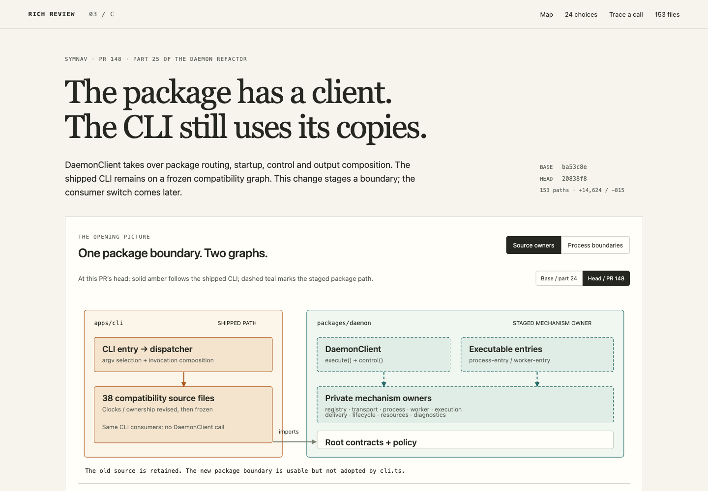 |
About 31 minutes of wall-clock work. | Some generic before/after text panels repeat what the choice already says. The specific guard, ownership and timing diagrams earn their space more clearly. The 153-path browser is useful for auditing scope but probably too prominent for an ordinary reader. | README# unconstrained-c ## Entry point Open [index.html](index.html). It is a standalone offline page, including its source snapshots. ```sh open ~/projects/rich-review-v2/experiments/03-unconstrained-c/index.html ``` “The switch is still open” explains why the package has a usable DaemonClient while the shipped CLI still uses compatibility copies. It includes two interactive maps, 24 decisions, 32 recorded client scenarios, and source links for all 153 changed paths. Controls change the view; they do not store feedback. ## Kind page A small source-inventory tool and an actual-code recording harness support the page. ## Subjects pr-148 only. Base `ba53c8e1662fd86d198b95321c90d9c9bef10184`; head `20838f8dbf413e04767543eb2380d0d114da6c60`. ## Declared choices - Role framing: Teammate reconstructing ownership and the choices behind it. Free angle: separate physical relocation from consumer adoption. - Box lenses: Static package/module ownership and runtime process/thread boundaries. The worker is visibly inside the daemon process. - Opening style: Before/after picture, initially showing both implementations at the PR head. No metaphor beyond the title. - Shape: A complete overview followed by decision details and exact evidence. Five decision families form smaller pyramids under the opening map. - Navigation: Read down all choices, use previous/next inside details, or jump from a map box or file to a decision and its source. Closing a detail returns focus to its origin. - Trust posture: Compare intent with shipped scope. Preserve unknown rationale explicitly. Test relocation, removed assertions, retired enforcement, and unmentioned test scheduling get the same card treatment as architecture. - Persona: A teammate who knows symnav but not the daemon internals. - Representations used: Source map, nested process/thread diagram, before/after comparisons, ordered guard diagram, ownership-coordinate matrix, idle timeline, replay boundary, recorded event player, file inventory, and line-numbered source excerpts. - Importance rule: Lead with the distinction between the active and staged graphs; then host boundaries, routing effects, process ownership, and changes in what tests observe. No correctness ranking or verdicts. - Inputs used (beyond bundle): Direct source and test reads in both supplied worktrees; Git rename/copy inventory; the head’s daemon follow-up spec, functional spec, policy record and contributor guide; a daemon package build; 32 calls to built DaemonClient with synthetic external ports. The bundle’s two overview files had no symbol output, so direct source reads supplied the mechanism detail. Used the supplied PR body, 45 commit messages, diff, file counts and repository rules. - Tech: Vanilla HTML/CSS/JavaScript and SVG; Python inventory/build scripts; Node.js recording harness; Chromium/Playwright checks. No external libraries or network services are needed to open the artifact. Harness: Codex. - Built on earlier experiment(s): none. Earlier experiments were ignored, not read or reused. ## What I tried Started with a relocation-only map. Reading the actual delta made that insufficient: the CLI copies are changed before being frozen, and test migration changes what some tests observe. Kept the map, then gave those additional choices their own overview cards. Seventeen choices have a stated reason; seven retain an explicit rationale gap. Considered a handwritten routing simulator, but dropped it before implementation. Instead, [record.mjs](record.mjs) executes the built façade, runtime and routing guards while replacing registry, observer, transport, trigger and executor operations in memory. [recordings.json](recordings.json) preserves the resulting events. The browser replays them. This is actual client code with synthetic ports, not real process or transport execution. The first runtime drawing placed the worker outside the process rectangle. Corrected it to a nested thread boundary. Source-anchor checks also caught and corrected an early assumption that the readiness probe disposed its output; its actual implementation uses a cold-mode execution and checks completion/exit status. The completeness cost is visible: the overview is 24 cards across several screens. The picture alone is intuition; the picture plus those cards is the complete top layer. Deeper views refine those same choices, including the changed test coverage and unexplained scheduling choice. ## What I would drop Some generic before/after text panels repeat what the choice already says. The specific guard, ownership and timing diagrams earn their space more clearly. The 153-path browser is useful for auditing scope but probably too prominent for an ordinary reader. ## What I would do next Have a fresh reader explain which implementation ships, when local replay is permitted, and which worker-test observations changed. Then compress the 24-card overview without moving a decision into a hidden layer. ## Time spent About 31 minutes of wall-clock work. The page opened offline at desktop and mobile sizes. All decisions and evidence links were checked, along with map switches, sequential navigation, trace controls, file search, Escape and focus restoration. Both symnav worktrees remained clean at the final source check. See [validation.md](validation.md) for the checks and their limits; no full symnav test-suite result is claimed. To regenerate the saved page from the existing inventory and recordings, run `python3 -B build.py` in this folder. `python3 -B audit.py` rebuilds the read-only source inventory; `node record.mjs` regenerates client recordings after the head daemon package has been built. The auxiliary reduced-delta reports intentionally normalize imports/naming and are labeled as lossy. The HTML’s exact snapshots do not depend on those reductions. |
| 02 | unconstrained-b attempt 1: claude-opus → attempt 2: claude-opus → attempt 3: codex |
page | pr-131 only: Route daemon thresholds through centralized policy. | Role framing: explain where a limit gets its authority. Assigned angle was free; the chosen angle is following one value through its consumers. · Box lenses: static package structure and runtime topology, connected by snapshot supply. The worker is nested inside the daemon process; the policy package is not drawn as a service. · Opening style: before/after supply map. It shows the already-existing snapshot alongside the local sources this PR retires. · Shape: complete overview, then selectable value paths, mechanisms and evidence. · Navigation: linear reading plus section/value selection, links from every decision, source dialogs and a return-to-origin control. Escape closes source excerpts. · Trust posture: compare the stated intent with the actual delta. Test rewrites, deleted tests and changed error selection have the same visibility as architectural choices. No verdict or scoring. · Persona: a teammate who knows symnav but not this part of its daemon. · Representations used: package map, nested runtime boxes, before/after decision rows, 39 value paths, response-budget illustration, nested retry scopes, recorded recovery outcomes, storage-path comparison, exact source excerpts and the complete local diff. · Importance rule: authority and boundary movement first; retain every material decision in the first layer, including unexplained interface choices and test changes. Later layers add mechanics and evidence to those same decisions. · Inputs used (beyond bundle): the two assigned worktrees; their contributor guide; policy implementation and tests; plans/005 policy record and specifications, including targeted rationale searches; existing built clients; focused memory, recovery and spill probes. The supplied overview files contain headings without symbol output. · Tech: local HTML/CSS/SVG and vanilla JavaScript; Python generates the artifact from authored content and source. Node and the worktrees' existing Vitest installation were used for probes, not for opening the page. · Built on earlier experiment(s): none; other experiment folders were not read. This folder already contained an unfinished attempt for the same brief. Its ledger, probe scripts and research were inspected and selectively recovered; original files are preserved in abandoned-attempt-a/. · Harness: Codex. No subagents were spawned. | 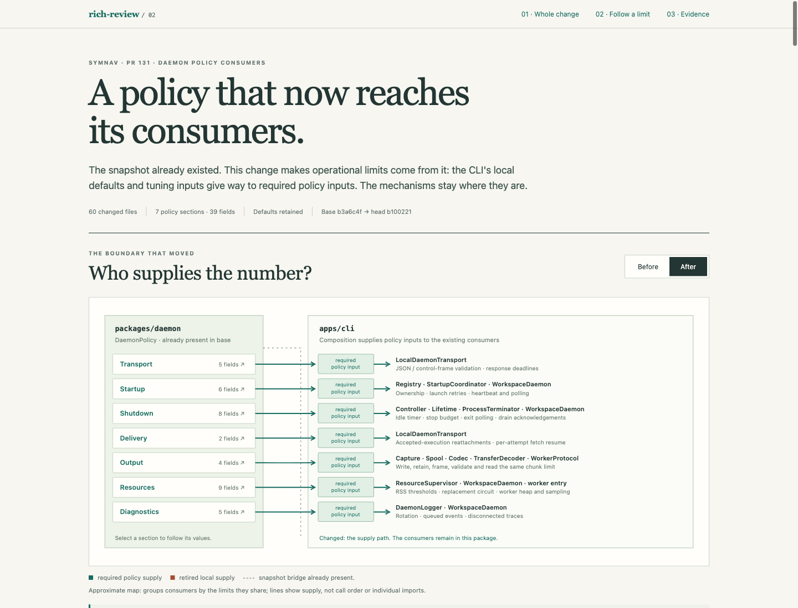 |
About 30 minutes for this recovery, rebuild and validation run. The inherited unfinished attempt had additional work; its active elapsed time was not reconstructed. | The main page's 60-row file index duplicates the index in evidence.html. It is the first piece I would remove. The seven-site chunk path is also bulky; it could use a more compact representation without hiding its source links. | README# unconstrained-b ## Entry point Open [index.html](index.html) in a browser: ```sh open ~/projects/rich-review-v2/experiments/02-unconstrained-b/index.html ``` No server, installation or build is needed. Keep index.html, app.js and style.css together. Evidence and source excerpts also work offline. ## Kind page ## Subjects pr-131 only: Route daemon thresholds through centralized policy. Base b3a6c4fa5 → head b100221db. The page treats the preceding policy snapshot as existing context. ## Declared choices - Role framing: explain where a limit gets its authority. Assigned angle was free; the chosen angle is following one value through its consumers. - Box lenses: static package structure and runtime topology, connected by snapshot supply. The worker is nested inside the daemon process; the policy package is not drawn as a service. - Opening style: before/after supply map. It shows the already-existing snapshot alongside the local sources this PR retires. - Shape: complete overview, then selectable value paths, mechanisms and evidence. - Navigation: linear reading plus section/value selection, links from every decision, source dialogs and a return-to-origin control. Escape closes source excerpts. - Trust posture: compare the stated intent with the actual delta. Test rewrites, deleted tests and changed error selection have the same visibility as architectural choices. No verdict or scoring. - Persona: a teammate who knows symnav but not this part of its daemon. - Representations used: package map, nested runtime boxes, before/after decision rows, 39 value paths, response-budget illustration, nested retry scopes, recorded recovery outcomes, storage-path comparison, exact source excerpts and the complete local diff. - Importance rule: authority and boundary movement first; retain every material decision in the first layer, including unexplained interface choices and test changes. Later layers add mechanics and evidence to those same decisions. - Inputs used (beyond bundle): the two assigned worktrees; their contributor guide; policy implementation and tests; plans/005 policy record and specifications, including targeted rationale searches; existing built clients; focused memory, recovery and spill probes. The supplied overview files contain headings without symbol output. - Tech: local HTML/CSS/SVG and vanilla JavaScript; Python generates the artifact from authored content and source. Node and the worktrees' existing Vitest installation were used for probes, not for opening the page. - Built on earlier experiment(s): none; other experiment folders were not read. This folder already contained an unfinished attempt for the same brief. Its ledger, probe scripts and research were inspected and selectively recovered; original files are preserved in abandoned-attempt-a/. - Harness: Codex. No subagents were spawned. ## What I tried The inherited attempt combined a useful value map with mutation-test scores, repeated evidence labels and later-stack material. I archived it and rebuilt the entry point around PR 131's supply boundary. Its out-of-scope material and mutation results are not used by the delivered page. I retained the 39-field ledger after checking its 106 citations, then reran the focused probes. Those observations helped explain two details without judging the change: a reattached completion can expose a different error, and 14 existing transport tests stop exercising client spills after the adapter raises their inline limit. The first layout placed the runtime diagram below the overview. I moved it up to avoid introducing a new boundary on descent. I also made stated reasons visible in the first-layer register. Browser checks found a mobile selector overflow; the final layout fixes it and preserves keyboard focus when selections change. ## What I would drop The main page's 60-row file index duplicates the index in evidence.html. It is the first piece I would remove. The seven-site chunk path is also bulky; it could use a more compact representation without hiding its source links. ## What I would do next Give a teammate only the first layer and ask them to explain who supplies the limits, which runtime boundaries already existed, and what changed in the test adapter. Use their omissions to revise the opening. ## Time spent About 30 minutes for this recovery, rebuild and validation run. The inherited unfinished attempt had additional work; its active elapsed time was not reconstructed. ## Validation and limits - Build checks match the bundle: 60 files, +1,298 / −544, 39 fields and 13 surfaced decisions. - All 106 recovered value citations passed the source-location check. - Browser checks exercised all 39 selections at 1440 px and 390 px, source dialogs, keyboard focus, return navigation, the clock selector and recorded recovery outcomes. No script errors, page overflow, broken internal anchors or external requests were observed. The separate diff page contains all 60 file sections. - Instrumented source tests passed for the two selected files: 41 cases in base and 43 in head. These runs record spill-method calls; they are not a PR-wide validation claim. - The old and surviving memory recipes agreed on 60,000 tested input pairs. Four scripted recovery scenarios were run against each built transport client. - Recovery and memory probes used the worktrees' existing dist output; this run did not rebuild symnav or run full CI. Spill observations ran through Vitest against source. - Both symnav worktrees remained clean. No branches were modified, committed, pushed or rebased. The clock bar is explicitly illustrative. Recovery and spill examples show recorded code execution. Grouped diagrams are marked where they omit fidelity. “Unexplained” means no reason for that specific choice was found in the PR body, its six commit messages or plans/005; it does not assert that no reason exists elsewhere. ## Files and reproduction - [index.html](index.html): delivered artifact. - [evidence.html](evidence.html): complete supplied diff, with a local file index. - [content.py](content.py): authored decisions, rationales and citations. - [data/ledger.json](data/ledger.json): recovered threshold inventory. - [data/artifact.json](data/artifact.json): generated claims, source text and observations. - [checks/](checks/): build, citation, browser, focused test and reading-audit records. - [probes/](probes/): retained scripts and freshly recorded outputs. - [screenshots/](screenshots/): desktop and mobile views. - [abandoned-attempt-a/NOTE.md](abandoned-attempt-a/NOTE.md): why the previous approach was abandoned. Archived scripts retain their old path assumptions and are not the current entry point. From this folder, rebuild the page with: ```sh python3 build.py ``` This needs the assigned input bundle and worktrees. To refresh the focused observations first, with existing builds and Vitest available in both trees: ```sh python3 probes/run.py python3 build.py ``` The runner replaces only this experiment's named probe outputs and logs. It instruments methods in memory and writes no symnav source. |
| 01 | unconstrained-a attempt 1: codex → attempt 2: codex |
page | pr-127`: its immediate base `a1e325a` → head `64919bc`. | Role framing: learner who traces ownership and then inspects the author's decisions. · Box lenses: static package ownership; runtime process/thread topology; state lifetime within those processes. · Opening style: a deliberately lossy workshop/scratch-paper analogy followed by an ownership diptych. · Shape: two linked pyramids. The stack has a boundary map, six entrances, a complete surface of recovered decisions, then reasons and source. #127 has a smaller map and ten decision records, followed by a recorded run and the handle mechanism. · Navigation: linear reading route; box → decision group; decision → modal reason → local source line. Escape/Close returns focus to the originating choice. Subject and section links work with browser history. The source shelf also allows independent browsing. · Trust posture: compare intent with implementation and test boundaries. Preserve stated reasons verbatim; mark additional choices unexplained when no reason was found. No correctness verdict, approval, comment collection or scoring. · Persona: a teammate who knows symnav but not the daemon's internals. · Representations used: before/after package boxes, a process/thread request path, a six-handle cache diagram, an interactive replay of actual observations, a before/after behavior table, a grouped decision inventory, a full policy table, and line-addressed source snapshots. · Importance rule: moved ownership first; asynchronous barriers and decisions without reasons next; test deletions, test budget changes and unrelated work receive the same decision-card treatment. No numeric ranking. · Inputs used (beyond bundle): the four assigned worktrees' source and relevant tests; their contributor guides; the architecture, policy and follow-up plans; individual commit diffs for test budgets, synchronization and relative `--cwd`; existing compiled #127 backend/core modules; a new read-only observation probe; a focused run of the two affected #127 suites. The supplied overview files were inspected but contained no useful symbol output, so the artifact does not rely on them. · Tech: plain HTML/CSS/JavaScript; Python standard library for extraction and snapshot packaging; Node for the probe; Playwright for browser verification. No CDN, application framework, raster assets, or runtime dependencies for reading. · Built on earlier experiment(s): none. Other experiment folders and prior worker-attempt logs were ignored. This attempt used Codex and no delegated agents. | 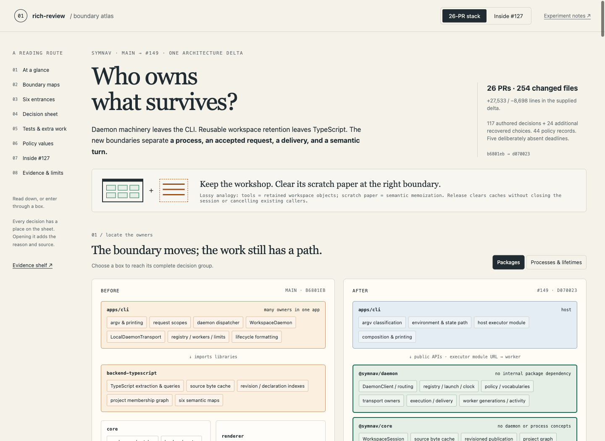 |
About 30 minutes for this completed attempt, including research, implementation, browser checks and documentation. Earlier harness logs already in the folder were preserved. | The five muted “unprobed” cache cells in the recorded run are mostly a reminder of the six-handle shape; the other diagrams already supply that. The 26-PR grouping also partly repeats the six ownership groups. It helps provenance, but it costs reading space. | README# unconstrained-a ## Entry point Open [index.html](index.html), or run: ```sh open ~/projects/rich-review-v2/experiments/01-unconstrained-a/index.html ``` No server, installation, network access or build is needed to read it. The two tabs are **26-PR stack** and **Inside #127**. Source links open an offline evidence viewer in another tab, at the cited line. ## Kind page With a reproducible observation probe and a data-building method. ## Subjects - `pr-127`: its immediate base `a1e325a` → head `64919bc`. - `stack`: `main` at `b6801eb` → #149 at `d070023`; all 26 supplied PRs treated as one delta. ## Declared choices - Role framing: learner who traces ownership and then inspects the author's decisions. - Box lenses: static package ownership; runtime process/thread topology; state lifetime within those processes. - Opening style: a deliberately lossy workshop/scratch-paper analogy followed by an ownership diptych. - Shape: two linked pyramids. The stack has a boundary map, six entrances, a complete surface of recovered decisions, then reasons and source. #127 has a smaller map and ten decision records, followed by a recorded run and the handle mechanism. - Navigation: linear reading route; box → decision group; decision → modal reason → local source line. Escape/Close returns focus to the originating choice. Subject and section links work with browser history. The source shelf also allows independent browsing. - Trust posture: compare intent with implementation and test boundaries. Preserve stated reasons verbatim; mark additional choices unexplained when no reason was found. No correctness verdict, approval, comment collection or scoring. - Persona: a teammate who knows symnav but not the daemon's internals. - Representations used: before/after package boxes, a process/thread request path, a six-handle cache diagram, an interactive replay of actual observations, a before/after behavior table, a grouped decision inventory, a full policy table, and line-addressed source snapshots. - Importance rule: moved ownership first; asynchronous barriers and decisions without reasons next; test deletions, test budget changes and unrelated work receive the same decision-card treatment. No numeric ranking. - Inputs used (beyond bundle): the four assigned worktrees' source and relevant tests; their contributor guides; the architecture, policy and follow-up plans; individual commit diffs for test budgets, synchronization and relative `--cwd`; existing compiled #127 backend/core modules; a new read-only observation probe; a focused run of the two affected #127 suites. The supplied overview files were inspected but contained no useful symbol output, so the artifact does not rely on them. - Tech: plain HTML/CSS/JavaScript; Python standard library for extraction and snapshot packaging; Node for the probe; Playwright for browser verification. No CDN, application framework, raster assets, or runtime dependencies for reading. - Built on earlier experiment(s): none. Other experiment folders and prior worker-attempt logs were ignored. This attempt used Codex and no delegated agents. ## What I tried The organizing question was “who owns what survives?” It connects the whole-stack package move to the small cache-lifetime change without pretending that a socket, an accepted request and a worker all end together. I considered a general lifetime simulation, then chose a saved execution trace instead: a toy implementation could silently turn an explanation into invented evidence. The probe imports both actual compiled backend versions and injects only a workspace-state double and a held cleanup promise. It records the same-value, failed-refresh and cleanup boundaries. The browser only replays those observations. I extracted all 117 explicit PR decisions, then added 24 recovered choices/contracts and all 44 policy rows plus five absent deadlines. The extra records include the awaited release difference, API closures, startup/clock ownership, relative control-path normalization, removed composed CLI tests, relaxed test budgets and the unrelated PR-template edit. Initially the maps followed too much text; I moved them ahead of the dense decision sheets after viewing the page. The important negative result is visible: a complete decision surface for a stack is long. Six pleasant summary cards cannot carry all of the defaults, test changes and unexplained choices. I kept the long sheet instead of hiding those facts in an attractive overview. ## What I would drop The five muted “unprobed” cache cells in the recorded run are mostly a reminder of the six-handle shape; the other diagrams already supply that. The 26-PR grouping also partly repeats the six ownership groups. It helps provenance, but it costs reading space. ## What I would do next Ask a fresh reader to explain the four lifetimes from the maps alone, then identify which decision-sheet items surprised them. Use those surprises to repair the pyramid, rather than adding another summary. ## Time spent About 30 minutes for this completed attempt, including research, implementation, browser checks and documentation. Earlier harness logs already in the folder were preserved. ## Evidence and limits The page contains **141 decision records**, **44 policy records**, **five intentional deadline absences**, and **94 local evidence documents**. Every decision record is present on the stack's default sheet; #127's ten records precede its mechanism and trace. All decisions carry `stated` or `unexplained`. Every record has a source trail. This is structural coverage of the recovered inventory, not a proof that a large diff contains no further implicit decision. The strongest result is small and concrete: both compiled #127 versions clear caches before project cleanup settles. With asynchronous cleanup held open, base backend release fulfills while head remains pending; with cleanup rejection, only head's backend release rejects. The PR explicitly describes an awaited barrier but does not reconcile that observable difference with its preservation framing. The artifact presents the boundary for the human to assess; it does not diagnose a production failure. The probes use actual compiled classes with explicit test doubles. They do not run a daemon, execute an entire navigation command, measure performance or prove all six semantic algorithms equivalent. Their module hashes and commit IDs are recorded. Object letters denote identity of empty definition-result arrays, not source revisions. The separate generic-scope probe is head-only because the base had no core scope. Test migration was inspected as a decision. Three hostile-peer status scenarios reappear at a package integration boundary. Four other old CLI status scenarios, three built stop-command scenarios, and the dispatcher/reference-workspace integration are absent in their old composed form; related lower-level tests remain where noted. The title-matching file is only a search aid: it does not recognize parameterized titles or prove assertion equivalence. The artifact does not infer correctness or incorrectness from test counts. The stack PR bodies report broad passing suites; those are author reports. This attempt ran only the two relevant #127 suites: **15 tests passed**. No full-stack parity run was performed. The snapshot source excerpts, full bundled diffs and original PR records remain available below the teaching layer. ## Reproduce or inspect - [probe.mjs](probe.mjs): run `node probe.mjs` from this folder to record both existing compiled #127 worktrees again. It writes only this experiment's `evidence/probe.json` and `probe-data.js`. - [build.py](build.py): run `python3 build.py` to rebuild the offline inventory and source shelf from the input bundles/worktrees. It writes only this experiment folder and does not build or alter symnav. - [evidence/probe.json](evidence/probe.json): raw captured events, test-double scope, versions and compiled-module hashes. - [evidence/focused-tests.txt](evidence/focused-tests.txt): actual focused Vitest output. - [evidence/decision-inventory.json](evidence/decision-inventory.json): the full structured decision and policy inventory, including source pointers. - [evidence/test-title-audit.json](evidence/test-title-audit.json): unmatched literal test-title search, with its limitations. - [evidence/browser-checks.json](evidence/browser-checks.json): browser interaction and local-file checks. - [evidence/worktree-baseline.json](evidence/worktree-baseline.json) and [evidence/worktree-final.json](evidence/worktree-final.json): identical HEADs and empty tracked/staged changes in all four assigned worktrees. The checked-in experiment assets are enough to read the page elsewhere. Reproducing the data extraction and probe additionally needs the supplied workspace layout and prebuilt symnav modules. ## Pyramid audit The decision IDs are the spine. A detail dialog elaborates an ID already visible on the parent sheet. The #127 run and mechanism explicitly point back to those same ten IDs. Policy values and absent deadlines are visible at the decision level, not first revealed in source. Additional work and removed test boundaries have full cards alongside architecture. The remaining tension is that the first screen is an intuition, not the entire top layer. A reader who stops at the six entrances has the structure, but not every decision; the page explicitly identifies the decision sheet as the complete recovered top layer. I did not claim that six cards alone satisfy completeness. |
{kind=link}
{kind=link}
{kind=link}
{kind=link}
{kind=link}
{kind=link}
{kind=link}
{kind=link}
{kind=link}
{kind=link}
{kind=link}
{kind=link}
{kind=link}
{kind=link}
{kind=link}
{kind=link}
{kind=link}
{kind=link}
{kind=link}
{kind=link}
{kind=link}
{kind=link}
{kind=link}
{kind=link}
{kind=link}
{kind=link}
{kind=link}
{kind=link}
{kind=link}
{kind=link}
{kind=link}
{kind=link}
{kind=link}
{kind=link}
{kind=link}
{kind=link}
{kind=link}